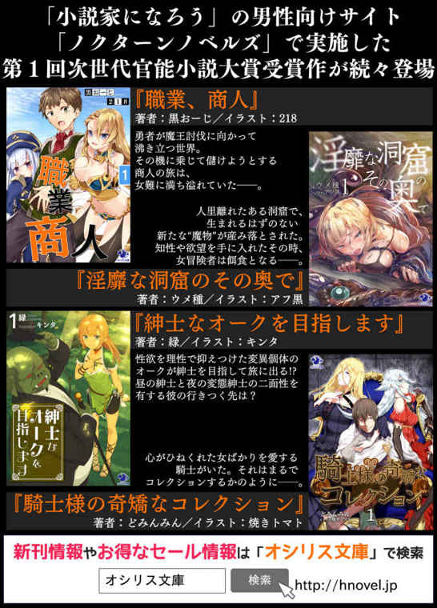

| 紳士なオークを目指します(2)<紳士なオークを目指します> (オシリス文庫) | |
| 緑 | |
| (2015) | |
紳士なオークを目指します（２）
著者／緑
イラスト／キンタ

オシリス文庫
本作品の全部または一部を無断で複製、転載、配信、送信したり、ホームページ上に転載することを禁止します。また、本作品の内容を無断で改変、改ざん等を行うことも禁止します。
本作品購入時にご承諾いただいた規約により、有償・無償にかかわらず本作品を第三者に譲渡することはできません。
本作品を示すサムネイルなどのイメージ画像は、再ダウンロード時に予告なく変更される場合があります。
本作品は縦書きでレイアウトされています。
また、ご覧になるリーディングシステムにより、表示の差が認められることがあります。
本書の内容はフィクションであり、登場する団体・店名・人物などの名称はすべて架空のものです。
せっかくいい雰囲気だったのに、空気を読まない怒鳴り声で台無しです。びくりと飛び上がったミュケを受け止めながら、ぼくたちは起き上がりました。
それにしてもおかしいですね。いま宿に泊まっているのはぼくたちだけですし、宿を切り盛りしているのもオリネさんだけです。にも関わらず、野太い男の声が聞こえてくるのはなにかトラブルでも起きたのでしょうか。
怒鳴り声を上げる男とオリネさんが言い争っているようで、ぼくたちが泊まる２階まで内容が筒抜けでした。
男のほうはひたすらに怒声、しかも数人はいるようで違う声も聞こえてきます。対するオリネさんの声は、最初こそ勇敢だったものの、数人の男に怒鳴られてしまえば恐怖だって感じるでしょう。
オリネさんと仲良くなったミュケが心配そうにしています。
「ルト、私オリネのところに行くね」
反対されると思ったのでしょうか、それだけ言うとミュケは眉を寄せたまま部屋を出ていってしまいました。仲良くなった人のためなら無茶をすることも辞さないのがミュケのようです。
体まで重ねておいて情けないのですが、ミュケのことはあまり知りません。長いあいだともにいるつもりでしたから、ゆっくり知っていけばいいと考えていたのは悠長だったのでしょうか。
それはともかく、ぼくも行きましょう。複数人で女性を囲むような輩は、紳士には程遠いですから。
先に部屋を出たミュケを追いかけて、ぼくも１階へ向かいます。その間にも罵声が聞こえてきて、ミュケの声もそこに混ざりました。
階段を下りてミュケとオリネさんの姿を見つけました。彼女たちは宿の出入り口に陣取って、外にいる３人組を中へ入れないようにしているようでした。
「んだてめーっ！ これは俺たちとそっちのねーちゃんのお仕事の話なんだよ！ 部外者は引っ込んでな！」
「残念、私オリネの友達だから部外者じゃないわ。それに仕事ですって？ どうみてもチンピラが脅しにきてるだけじゃない！ 何様のつもりか知らないけど、オリネに手を出したらただじゃおかないわっ」
ふんと鼻を鳴らして言い切ったミュケは、ものすごく格好よかったです。いくら友達といえど、昨日知り合ったばかりの人のためにここまでする子はそういないでしょう。
しかし、そんなミュケの態度が気に食わないのか、３人のうちの背の低いウェアドグ族の男が、長い耳をぴんと立てて怒りの形相でミュケに近づこうとしました。さすがに傍観している状況じゃないので、ぼくも階段を下りて彼女たちのうしろへ陣取りました。
「このアマァ......」
「まあ待て、おまえは短気だからいけないんだ。見ろ、おふたりともべっぴんさんじゃないか。怒鳴り合うんじゃなくて、お話しようじゃありませんか」
顔を真っ赤にするウェアドグ族の男をたしなめるように、もうひとりが割り入ってきました。
「話すことはなにもありませんっ。帰ってください！」
「お嬢さん方を困らせたくないので帰りたいのはやまやまなんですがねぇ、これも仕事なんですよ」
キザったらしい長身のウェアフォク族の男が、かけていたサングラスをずらしてオリネさんを睨みました。
仕事というのは善良な一般市民を怒鳴りつけることなのでしょうか？ ミュケの言うとおり、彼ら３人組はただのチンピラにしか見えませんが、実はカタギかもしれません。
「だからよぉお嬢さん、いいかげんこの宿の権利書渡してくれないかなぁ？」
チンピラですね。地上げ屋といったところでしょうか。
「そうだぜ、べつに店を取り上げて放り出そうってわけじゃないんだ。仕事は斡旋するし、それなりの金も積む用意があるんだぜ？」
にやにやと、嫌らしい笑みを浮かべた背の低いウェアドグ族の男が続けます。
「まぁ、仕事の前に味見させてもらうけどなぁ！ なんならそっちのエルフのねーちゃんも仕事紹介してやってもいいんだぜ？ その耳じゃあどこも雇っちゃくれねえだろうしよぉ。ねーちゃんもキレーな顔してるから、スケベ親父どもがたくさん金落としてくれるだろうな」
「さいってー！ それのどこが仕事よ！ 私たちに娼婦になれって言うの？ ふざけないで！」
「この宿は絶対に渡しません！ いまの話を聞いてわかりました。あなたたち、この宿どころか私たちまで商品にする気ですね？ 断固拒否します！」
激昂するミュケたちでしたが、チンピラたちは柳に風で、むしろ気の強い女ほど高く売れると喜んでいました。
「聞き分けてくれや。俺たちもキレーな顔した女をボコボコにするのは良心が咎めるんだわ」
ウェアフォク族の男が、嗜虐的な笑みを浮かべてミュケたちに近づきました。つまり、言うことを聞かないなら暴力で、ということでしょう。
それを聞いて、オリネさんがミュケを庇うように背中に隠しました。意地でも宿を渡さないつもりのようですが、いくら力に優れたウェアベア族とはいえ、大の男３人とやり合うのは無謀というものでしょう。
事情を知るために見守っていましたが、もはやそんな状態ではありません。なにより、気丈に振る舞ってはいますが、ミュケもオリネさんも怖がっています。
「ここから先はぼくがやりますよ」
「あっ......ルト！」
ミュケたちの前に出ると、ウェアフォク族とウェアドグ族の男がたじろぎました。しかしそれもつかの間のこと、ふたりはぼくを訝しげに見やったあと、にんまりと笑いました。
「おうおう、一丁前に用心棒を雇ったのか？ 涙ぐましいねぇ。でもあいにくと、こっちには生粋のウェアレオ族がいてなぁ。豚１匹なら八つ裂きよ」
まったく会話に参加してこなかった最後のひとりが、のしのしと宿に入ってきました。身長はぼくよりもはるかに大きく、ぼさぼさのたてがみがウェアレオ族であるなによりの証拠でした。
彼らウェアレオ族は、生まれてから常に戦いに身を置いて、戦場で死ぬと言われている武人気質の種族です。オークであるぼくを軽く超える身長、まるで鎧のような筋肉、鉄を粉砕する腕と、大木をへし折る脚。ひとたび戦いに赴けば、その場にいる敵すべてを殺戮する死神とも呼ばれています。
ぼくの前に立ち塞がったウェアレオ族の男は上半身裸で、引きしまった体には無数の傷痕が残っています。その風格はまさに歴戦の勇士であり、とてつもない威圧感を醸し出していました。
「泣いて謝るならいまのうちだぜぇ？ なんてったってそいつは容赦って言葉を知らないからな。ひき肉になりたくなきゃ手持ち金を置いて地面に頭こすりつけな！」
ゲラゲラと笑うウェアドグ族とは裏腹に、ウェアフォク族の男は憐憫の表情さえ浮かべてぼくに言います。
「おまえもこんなところで死にたくはないだろ？ この犬っころの話は無視してもいい。なんなら路銀くらいなら払うからここは穏便にいかないか？」
「勘違いですよ。ぼくは用心棒ではありません。この宿に泊まっている者です」
「じゃ、とっとと出てってくれねぇか？ どうせここは俺たちが貰うんだ。おまえが泊まる部屋はねえ」
横暴もいいところですね。ここまでくるとむしろ清々しいというか、遠慮は必要ないでしょう。
いつまでも黙っていてはミュケたちも不安がりますし、いいかげん片付けてしまいましょう。
「ちょっ、ダメです！ この宿のことならわたしがなんとかしますから、ミュケちゃんを連れて逃げてください！」
仁王立ちするウェアレオ族に近づくぼくがなにをしようとしているのか感づいたらしいオリネさんが、制止の声をかけてきます。
「そういうわけにはいきませんよ。オリネさんはミュケの友達です。ならば貴方を守るのもまた、ぼくの役目です」
侮っているのか、目の前に来ても動かないウェアレオ族の鳩尾を狙って引き絞った拳を放ちます。
「これでも怒っているんですっ！ ミュケは絶対に渡さない！」
全力を込めた拳が狙いを違わずウェアレオ族の鳩尾へ吸い込まれていきました。肉を打つ音が鈍く響いて、男は宿の外まで吹き飛んでいきました。それに構わず、高く売れそうだの、味見をするだの、好き放題言ってくれた男の風上にも置けないウェアドグ族の頭をわしづかみにして、頭突きを喰らわせてやりました。
ぐるんと目を白くしたウェアドグ族を、顎が落ちそうなくらい口を開けたウェアフォク族に投げつけて、全員沈黙させました。
おかしいですね。勇名轟くウェアレオ族が、たったの一撃で倒れてしまうなんて思っていませんでした。室内だからと槍を置いてきたことを後悔するほど警戒していたのですが、拍子抜けしました。
「うそ......」
「ルトっ、ルト！ やっぱりすごいわルト！ すっごくかっこよかったわよ！」
飛びついてくるミュケを抱き留め、腰が抜けてしまったらしいオリネさんが信じられないといった目でぼくを見るなか、吹き飛んで動かないウェアレオ族に目を向けると、鳩尾を押さえてうずくまっていました。
「あの、ウェアレオ族なんじゃ......？」
「ひいぃ、勘弁してくだせぇ！ おらはただの農民で、戦なんて行ったことないんです！ このふたりに金儲けさせてやるって言われてついてきただけなんですよお！」
そういうことですか。ウェアレオ族といっても、すべての個体が戦好きというわけではありませんからね。巨体でそれっぽく立っていれば威圧感はものすごいですから、それを利用されたのでしょう。でも、ぼくが聞きたいのはそれだけじゃありません。むしろ、こっちが本命です。
「貴方たちの親玉はどこにいるんでしょうか？」
こういった問題は、元を断つ必要がありますからね。丸まって震えるウェアレオ族が吃音混じりに素直に話してくれました。
「くくく、クレナル様だ！ おらたちはクレナルお嬢様に指示されてきたんだ！ 勘弁してくだせぇ！」
その言葉に驚愕の声を上げたのはオリネさんでした。
「クレナルって、あのクレナル？ インプ族で小さくて、おっきい屋敷に住んでいる......」
「へ、へぇ！ おらはその屋敷に通ってるこのふたりについてきただけなんでさぁ。ひと目だけお会いしたことがありますが、インプ族のお方でした」
「そんな......」
「オリネ？」
床に座り込んだままがっくりと肩と落としたオリネさんに、ミュカが駆け寄りました。
「信じられないよ......だって、ナルちゃんは友達で、いちばんの友達で......」
この宿にチンピラをけしかけたのは、オリネさんの友人だったようです。
＊
気絶したチンピラたちをウェアレオ族に任せてお帰りいただくと、ぼくは一度部屋に戻って槍を持ってくることにしました。
仲のいい友人だと思っていた相手にこんなことをされたオリネさんはすっかりと意気消沈してしまい、今日は早くも宿を閉めることにしました。
泣きそうな顔で「どうせお客さんは来ませんから」と言った彼女の話では、幾度となくあの３人組がやってきて、押し問答をした結果、町の住人はおろか、旅人も巻き込まれることを嫌って利用しなくなってしまったらしいです。
よくよく話を聞いてみると、この一件の全容がわかってきたような気がします。まず、「森の出口亭」にチンピラたちがやってくるようになったのは、オリネさんのご両親、つまり先代の店主さんがいなくなったあとでした。見計らったかのようなタイミングですでに怪しかったらしいのですが、まさか自分の友人がそのタイミングを狙ってくるとは思わなかったのでしょう。結果、客足は遠のいてしまったようです。
「ちょっとだけ嫉妬深いところもあったけど、ナルちゃんはそんなことする子じゃないっ」
ほかでもないチンピラたちからの言葉も庇いたてるオリネさんはいまだに信じられないようでした。
すでにブランチとなってしまいましたが、３人で食事をして、ぼくはさっそく動くことにしました。
今回は槍の先を使うつもりはありません。あくまでも穏便に済ませるのがいちばんですから、流血沙汰は避けたいのです。
「ルト、本当に行くの？ オリネは護衛もたくさん雇ってるって言ってのよ？」
これから向かうのはもちろんオリネさんの友人である、クレナルさんのお宅です。
この町でも有名な豪商の一族で、邸宅も相当大きいと聞きました。腕利きの護衛も揃っているため、話し合いでの解決が望ましいのですが、明確な敵意を向けてきた相手が応じてくれるとは思えません。臨機応変に対応しつつ、オリネさんの宿を奪おうとした理由を聞きにいくことにしました。
「わかっていますよ。できるだけ穏便に済ませるので心配することはありません。ぼくだって痛いのは嫌ですからね」
「......でも」
「ぼくはぼくにできることをするだけですよ。ミュケだって、オリネさんことを見捨てられないのでしょう？」
「そうだけど、ルトが危ないことをする必要はないじゃないっ」
「確かに必要はありません。ですが、ぼくの恋人が困っていて、女性が泣いているのです。動く理由は充分なんです。紳士は絶対に困っている人を見捨てませんから」
「じゃあ！ 怪我しないで帰ってきてねっ、約束よ！」
ぎゅっとミュケと抱き合って、彼女は見送ってくれました。
身支度を整えてオリネさんのご友人を訪ねたのは、お昼を少し過ぎた頃です。
穏便に、穏便にと言い聞かせて、なるべく言葉遣いも柔らかくしたのですが、邸宅の門前に到着した途端に、見張りの護衛のみなさんに敵意を向けられてしまいました。
「くっそ、なんでオークがこんなところにいるんだ!?」
「知るかっ！ 大方、お嬢様に欲情したんだろうよ。それがこいつらオーク族だ！」
「で、でもよぉ、お嬢様はここ数日自室にこもりっきりだろう？ ただの訪問者だったりしねえか？」
「ばっかおめえ、そんなわけねえだろうがっ。よく考えてみろよ！ オークだぞ!? あの性欲魔人が用事があってお嬢様に会いにくるなんて、ひとつしかねえだろうが！」
「くそっ、やっぱそうなのかよ！ お嬢様には指１本だって触れさせねぇ！」
さんざんな言われようですが、実際にオーク族は護衛のみなさんが言っていたとおりの生態ですから反論もできません。
門の近くにある詰所から出てきたのは、５人の護衛です。中には半裸の男も混じっていて盗賊かと思うような風貌なのですが、ちゃんとした護衛のようでぼくに剣を向けてきました。
さっそくひとりの護衛が飛びかかってきました。穂先を布で包んだ槍の柄で撃ち落とすと、首筋に石突を落として昏倒させました。
さすがに血を流すのは取り返しがつかなくなりそうなので、おとなしく眠ってもらうことにしました。
次々と飛びかかってくる護衛たちを気絶させながら門をくぐると、広大な庭へ入りました。元は山の麓だというこの庭は、何百人が走っても余裕なほどの広さがあります。それでいて隅々まで手入れされているので、さすがは豪商といったところでしょうか。
オリネさんの友人であるクレナルさんはインプ族だそうです。巻角が側頭部から生えている小柄な体は見た目どおりに軽く、運動能力は低いようです。
その代わりに、インプ族は優れた頭脳を持ってるのです。歴史上の学者や商人はほとんどがインプ族というくらいに頭脳明晰で、クレナルさんの一族が代々豪商の一家であったとしても不思議ではないでしょう。
広大な庭を半ばまで進むと、遠くに大きな屋敷が見えました。山道を上るとその屋敷に着くようで、クレナルさんもそこにいると思います。しかしそう簡単にたどり着くことはできないようで、屋敷から続々と人影が山道を下りてきていました。
この人数をひとりで相手するのは少々骨が折れそうですね。でも、穏便に事を進めると決めた以上、流血沙汰にはしたくありません。とはいえ、ミュケとの約束も守るつもりです。
またしても接敵したぼくは愛槍を振り回して、的確かつ迅速に、護衛のみなさんを昏倒させていきました。
＊
及び腰になった最後のひとりが、力の入っていない剣を振り下ろしてきます。それを槍の柄で受け止めて剣を遠くへ弾くと、青ざめていた護衛の顔がさらに青くなっていきました。とどめに意識を刈り取って、ようやく後続がいなくなりました。
向かってくるすべての護衛を打ち倒して、ぼくはようやく屋敷の前にたどり着くことができました。周りには、死屍累々としかいえない光景が広がっていますが、誰ひとりとして死んでいません。
「このっ......これ以上行かせるわけにはっ」
「お嬢様を守れぇ！ おい、誰でもいい！ 旦那様に伝えてくるんだ！」
「だめだ、みんな気絶してる。こうなったらメイドさんに伝言を......」
「馬鹿野郎！ お嬢様が全員に休暇出してたの忘れたのか！ 俺たちでしのぐしかねぇんだよ！」
驚きました。気絶させたはずの護衛が起き上がって、剣を向けてきたのです。
その心意気に免じて一撃で気絶させると、ぼくはいよいよ屋敷の扉をくぐりました。
絨毯に驚きながら屋敷の中を見渡してみます。これだけ広い豪邸だというのに、まるで人の気配がしません。先ほど護衛の人が言っていたように、使用人さんたちもいないのでしょう。
それにしても、この屋敷の中からクレナルさんを探し出すのは難しいですね。これだけ広いと部屋数もすごそうですし、見つけるだけでもひと苦労です。ですが、見つけてしまえばあとは理由を聞くだけです。
あっさりと見つけることができました。
とりあえず探してみた廊下の先に、「クレナルの部屋」と書かれたプレートが掲げられた扉があったのです。いきなり扉を開けるのは失礼なので、扉をノックしました。
「ふん、最近の襲撃者は律儀にノックするようになったの？ 馬鹿みたい。さっさと入れば？」
不機嫌そうな声でしたが、了承を得たので部屋に入りました。外の騒ぎは聞こえていたようですが、逃げなかったのでしょうか？
「ふーん、本当にオークじゃない。あいつら、こんなのに負けたの？ どこが腕の立つ護衛よ。豚にだって劣ってるじゃない」
本棚に囲まれた部屋の真ん中に、ソファに体を預けたインプ族の女の子がいました。紫がかった黒髪からは巻角が覗いていて、不機嫌そうに細められた紅瞳がぼくの全身を睨みつけました。
ひととおりぼくを眺めて満足したのか、クレナルさんは膝に置いた本に視線を戻しました。
「それで、律儀な豚さんがなんの用？」
「ぼくは『森の出口亭』に泊まっているのですが......」
「へぇ、豚は自分から豚小屋で寝るのね。で？」
ずいぶんと口が悪い人のようですね。
つんと顎を持ち上げて見下ろす視線を向けるクレナルさんが、優雅に脚を組み替えました。
ものすごく丈の短いスカートの奥が見えそうになって、彼女の上半身に視線を固定します。
相当上質な絹を使っているのでしょう。シルクのノースリーブは滑らかで、涼しげな印象です。
「突然、３人組がやってきたんですよ。宿の権利書を奪おうとして、オリネさんも売ろうとしていました。聞けば、クレナルさんに依頼されたと教えてくれたんですよ。オリネさんは友人でしょう？ なぜそんなことを」
「オリネを売る......？ それに権利書って。ていうか、アンタには関係ないじゃない！ なんで部外者の豚が首突っ込んでくるのよっ」
きっと睨みつけてくるクレナルさんが表情を険しくしました。確かにぼくは部外者ですが、宿がなくなってしまうのは困るのです。それに、オリネさんが困っていました。
「いえいえ、ぼくも困るのですよ。ここ最近はどこの宿も満室だそうで、行く当てがないのです。なので、オリネさんの宿がなくなってしまうのは困ります。なによりも、オリネさんが泣いていましたから」
「はぁ？ なに、紳士のつもり？ ばっかみたい。豚がかっこつけるなんて滑稽もいいところだわ！ もう出ていってよ、目障りだわ！」
そういうわけにはいきません。まだオリネさんにチンピラをけしかけた理由を聞けていませんからね。ぼくに出ていく意思がないとわかったのか、クレナルさんが本を乱暴に捨てて立ち上がりました。
「ほら、早く出ていきなさいよ！」
嫌そうな顔でぐいぐいとぼくを押してきますが、この体格差ではぴくりともしません。顔を真っ赤にしたクレナルさんが小さな手で叩いてくるのにそう時間はかかりませんでした。
「どうしても教えてもらえませんか？」
「しつこいわね！ お父様に言いつけるわよ！」
『紳士たる者、躾のなっていない子供をご両親の代わりに教育することも嗜みのひとつ。口で言ってもわからなければ、体に染み込ませるのが基本です』
口と態度の悪さの矯正も、紳士の嗜みです。矯正ついでに理由も聞かせてもらいましょう。
ぽこぽこと叩いてくるクレナルさんの細腕を受け止めると、拳を彼女の下腹部に当てました。
「はぅんっ」
甘い声を上げてくずおれたクレナルさんが、目を見開いたまま絨毯にうずくまってしまいました。両手は下腹部、子宮の上に当てられていて、ぼくが拳を当てた場所です。
血反吐を吐きながら練習台になってくれた仲間たちのおかげで、無事に成功したようです。湧き上がる性感にクレナルさんが目を白黒させていますが、ぼくがやったことは、子宮に衝撃を送っただけなのです。
「な、なにこれ......アンタっ、なにしたの!?」
がくがくと膝を震わせていたクレナルさんがぼくを睨みつけてきました。子宮を揺らしたことで慣れない快感に晒されたはずなのですが、すごいですね。
絶えずぼくに罵声を浴びせるクレナルさんでしたが、少しずつ遠ざかっていきました。逃げるつもりでしょうか。気づいて、彼女の手を避けてもう一度下腹部に拳を当てました。
「ふあ......ああっ」
一度目よりも激しく体を震わせると、怯えの色を濃くして見上げてきました。その表情はいけません。どうにも背筋がぞわぞわと反応してしまいます。
どうやらクレナルさんは子宮への刺激に弱いようです。ここを重点的に責めてみましょう。
「ちょ、ちょっとどこに......いや、やだぁ！」
教育するのにちょうどいいソファがすぐそこにあるので、快感に震えるクレナルを抱えて運びました。
腕の中で抵抗しますが、それも弱々しくなっています。苦労することなくソファに下ろすと、最後にもう一度子宮を揺らしました。
「んぅぅぅぅ！ なにこれ......なにこれぇ」
体の奥から揺さぶられる気持ちよさに戸惑うクレナルさんが、濡れた瞳で見上げてきました。
今回はあくまでも教育なので、服を脱がせることはしません。観念したのか、はたまた隙を窺っているのか、クレナルさんは両腕をひとまとめに頭の上で押さえつけられながら、顔を背けて力を抜いています。暴れなければそれだけやりやすいので、ショーツだけをするりと脱がせてしまいます。
「やめなさいよぉ......」
細い太ももに指が触れても抵抗する様子はありません。語気も弱々しく、強気だった瞳もいまは涙で濡れています。
もしかしたら本当に怖がっているだけなのかもしれません。性欲魔人として有名なオークに押しかかられているのだから、これから自分がどんな目に遭うのかくらいは想像に容易いですし、余計な抵抗をしないで早く済ませようとしているのかもしれません。
どちらにしても、ぼくに強姦の趣味はありません。
ぼくの体を脚のあいだに割り込ませれば準備は完了です。
いきなり子宮を刺激するのでは、快感が強すぎるでしょう。段階を踏んで進めます。
まずは、ぴったりと閉じた秘裂を軽く撫で上げます。まるで濡れていないのに指を突っ込むなど、紳士のすることではありませんからね。
「ん......」
ほぐれていない割れ目をじっくりとほぐすように撫で上げていると、小さな、しかし確かな甘い声が聞こえてきました。そのまま撫で続けるとようやく湿り気が奥から滲んできました。
決して乱暴にはしません。じっくりと指をなじませるように、上下に撫でるだけではなく、包皮に包まれたクリトリスも優しく刺激し、少しずつクレナルさんの甘い声を誘い出していきます。
指先を割れ目の中に差し込んで撫で上げると、粘り気のある液体が付着しました。愛液ですね。
「う、んん......」
くぐもった声が絶えず漏れるようになって、ぼくはようやく割れ目の中に指を伸ばしました。膣口をくすぐるように指を回し、愛液が絡みついてきたらクリトリスを優しく摘まみます。包皮の中で張り詰めた陰核を押しつぶすと、いっそう高い声が聞こえました。
ちらとクレナルさんの表情を窺えば、彼女は完全に頬を赤くして瞳を潤ませていました。戸惑いの色があるのはきっと、性器が濡れてきたのに挿入しないからでしょう。オークに前戯の概念はありませんからね。
「ふぅぅ......」
一旦、割れ目をいじるのを止めて、クレナルさんの下腹部を撫でてみます。それだけでため息を漏らすように喘いでしまうのですから、子宮への振動は効いているようです。
膨らみきった陰核の皮をゆっくりと剥いていきます。ひと息に剥いてしまうのは刺激が強いらしいですから、教育には適さないのです。体に教え込むということは、染み込ませるということです。じっくりと長い時間をかけて行なうのが教育です。
「ん、ん......やだ、剥いちゃだめ......あ、んん」
完全に包皮を剥いて、外気に晒されたクリトリスは赤く色づいていました。このまま激しくこね回したい衝動が湧き上がってきますが、堪えて膣口へ指を浅く挿入しました。
「あんっ......やだ、だめだってば、刺激が強いよぉ」
潤滑液代わりの愛液を絡ませた指で、クリトリスの先端を軽く摘まんで滑らせました。それだけでぶるりと腰を震わせたクレナルさんの膣口は、とろりと愛液をこぼしました。
陰核もじっくりと刺激します。指先で撫でたり、根元をくすぐったり、先端を軽く弾いたり。愛液が潤沢に溢れるころにはクレナルさんの息は絶え絶えでした。
「はぁ、ふぅ、あと、少しなのにぃ......」
小さくつぶやいた彼女の目を見ると、完全に欲情しきっていました。それどころか、どこか期待する色がちらついていて、出会った当初の嫌悪感はどこへ行ったのでしょうか。とはいえ、それも仕方がないでしょう。なにせぼくは、クレナルさんに快感を与えつつも、一度も絶頂させていないのです。
勝気な顔立ちが快感に歪むのは、見ていてひどく心地よいものです。
「それじゃあ、オリネさんの宿を奪おうとした理由、聞かせてもらえませんか？」
「ん、ふぅ......はぁ。誰がアンタなんかに」
「教えてくれるのであれば、しっかりイカせますけど」
「......っ。ふんっ、豚ごときの指で感じるわけないでしょ！ 自惚れも大概に、あっ、やっ」
意思が強いというか、精神的に強靭ですね。真っ赤になって張り詰めたクリトリスを優しく押し潰すと、クレナルさんの腰がかくんと振られました。押し潰したままぐりぐりとこね回すと、堪えきれない喘ぎ声が漏れてきました。割れ目はもうすでに愛液でどろどろで、抵抗を感じないまま奥へねじ込むことができるでしょう。クリトリスから指を離して、いよいよ膣口に指を差し込みます。
「あ......」
息を詰めたような吐息に、背筋がぞわりとします。
指先を入れただけですが、狭い膣内がきゅうきゅうと吸いついてきます。すでに最大まで大きくなったイチモツをぶち込んで思いきり腰を振りたくってしまいたい欲求が溢れてきましたが、なんとか蓋をすることに成功しました。こういうときばかりは、オークの本能は厄介です。
浅く挿入した指で入り口付近を引っかき回すと、クレナルさんはまるで犬のように舌を突き出して喘ぎました。あまり激しくしてしまうと彼女がイってしまうので、ゆっくりと動かします。ぐいぐいと腰を動かそうとするのはもどかしいからでしょうか。すごく色っぽいですね。
狭い膣道を進むと、薄い膜に触れました。これは処女膜でしょうか。さすがに指で破ってしまうのは忍びないのでいままで以上に慎重に膜を通過すると、その刺激でクレナルさんが甘い声を漏らしました。だいぶ高まっているようですね。
そのまま指を進めると、ついに最奥に到達しました。弾力のあるここは子宮口ですね。
「ふー、ふー、はー......」
ただ指先が子宮口に触れただけなのに、ため息じみた喘ぎ声がこぼれるのですから、こごを弾いてしまえばあっさりと絶頂してしまうでしょう。しかしそれはしません。なぜなら聞きたいことがあるからです。
「やっぱり、オリネさんにあんなことをした理由は教えてくれませんか？」
「はー、部外者には関係ないでしょっ......くぅあんっ」
ぐり、と弾力ある出っぱりを指で押すと、クレナルさんが背筋を仰け反らせて腰を突き出してきました。
処女膜を傷つけないように奥を責めるのは思いのほか難しく、指先だけしか動かせません。
こんこんと湧き出る源泉の穴に指を引っかけて左右に揺さぶるだけで、途端にクレナルさんはイキかけてしまいました。このままでは触れているだけでイッてしまいそうです。
「な、なんでそんなところが気持ちいいのよぅ......」
たっぷりと焦らしたおかげで、クレナルさんは汗だくの汁だくです。脱がせていない服の上からでもわかるくらいに乳首がぴんと立ち上がって、おしゃれなブラウス越しでもピンク色の突起がよくわかります。
昂ぶりが少し治まったのを見計らって、また子宮口を優しくいじっていきます。あまりにも感度がよいため、すぐに絶頂しかけてしまうので気をつけなければいけません。子宮口の輪郭をなぞっているだけで、彼女は全身を震わせて色白の喉を晒してしまいます。
もう何度寸止めしたのかわかりませんが、ぼくはあきらめません。
「あ、あ、んんっだめ！ んんぅ......」
子宮口のすぼまりを指先で叩いていると、すぐさま絶頂しかけてしまいます。やはりここが弱点なのでしょう。膣内が痙攣しかけるのを感じて指を離すと、クレナルさんの腰が物足りなさげに小さく前後に動きました。息が整うのを待って、また子宮口に指を食い込ませていきます。
「話してくれるまでずっとこうしていますからね」
「んあっ！ ふぁあ......くぅぅぅ......！ 好きにすればいいじゃないっ、すぐにあたしの護衛がここに来るんだから、それまで我慢すればいいだけよ！」
「残念ですが、半日は誰ひとり起き上がってきませんよ」
「え......？ はん、にち？」
絶望的な表情がすぐに快感で歪みました。その表情の移り変わりだけでイチモツが反応してしまいます。子宮口の中心の穴に指を引っかけて弾くと、またしてもクレナルさんの背筋が反り返りました。
「んっ、あ、あ、あ......あぅ」
耳まで真っ赤にして、それでもまったく折れないのはすごいですね。ですが、そろそろ限界でしょう。いままで一度だって絶頂していないのです。どれだけ心が拒否したところで、体が我慢できるはずありません。体に引きずられるように、心も次第に絶頂を求めるようになるでしょうね。
「さて、どうしますが？ ぼくは半日どころか、何日だってこうしていられるのですが、クレナルさんはそうもいかないでしょう？ ぼくはただ、オリネさんを陥れようとした理由が聞きたいだけなんです。ほかにはなにも望みませんよ」
「う......うぅぅー！」
強情ですね。まだ迷っている様子だったので、子宮口を激しく叩いてあげました。もちろん寸止めです。
「あっあっ......くっ、この、わかったわよ！ 話せばいいんでしょう!? 話したらちゃんと、その、最後までしなさいよ！」
「もちろんですよ。ちゃんとお願いしてくれれば、何度だって気持ちよくしますよ」
言いながら、子宮口の小さな穴に指をぐりぐりと押しつけました。
「んあっ......。その、羨ましかったのよ......。オリネはもうご両親に後継ぎだって認められてるのに、あたしは支店のひとつだって任せてもらえないの。それが羨ましくて、少しだけ困らせてやろうって思って......んんっ」
「それであの３人組を？」
「ふあ、んくっ。そ、そうよ。お金に困ってるっていうから、少しお金を渡して困らせてきてって頼んだの。でもそれだけよ！ 宿を奪うとか、オリネを売るだとか、そんなこと頼んでいないわ！」
頼まれた以上のことをすればさらに報酬が貰えるかもしれないと、あの３人組が勝手に勘違いしたのでしょう。興奮ではない涙が、クレナルさんの瞳に浮かんでいます。
「なるほど、そういうことだったんですね。それじゃあ、あとはクレナルさんがオリネさんに謝って解決ですね」
「そ、それは......嫌」
「どうして？」
「その、負けた気がするから......。って、そんなことはもういいのよ！ ちゃんと話したんだから約束どおり最後まで......うぁん！」
悪いことをしたら謝る。それができないのであれば、しっかりと教育するほかありませんね。ちゃんと話してはくれましたが、謝らないというならさっきの話はなしです。気が変わりました。
「あっ、あっ、それぇ！ それっ、もっと！」
張り出した子宮口を指先でめちゃくちゃに弾くと、途端にクレナルさんの腰が震え始めました。ぎゅうぎゅうと指を締めつける膣が絶頂を教えてくれます。子宮への刺激に加えて、親指でクリトリスを激しくこねくり回すと、白い愛液が指のあいだからこぼれていきました。
ちゅぷちゅぷと愛液が奥から溢れて、締めつけが限界に達したところで、指を子宮口から離しました。
「はーっ、はーっ......ど、どうして!? 最後までしてくれるって！」
「気が変わったんです。オリネさんに謝りたくなるまで、ずっとこのままですよ」
「そ、そんな、ひどいじゃない！ あたし、ちゃんと話して......あっ、あんっ、それ、それいいのぉ！」
しっかり約束してくれるまで、もうしばらくかかりそうですね。
「んっ、イくっイくっ......やぁ！ どうして、どうして最後までしてくれないのぉ......ふあ、あっあん！」
そうして彼女は半日後にようやく素直になったのです。
＊
「その、ごめんなさい。謝っても済むことじゃないけれど......」
「ううん、いいの。大丈夫だよ。理由もちゃんと話してくれたし、こうして謝ってくれたから、それだけで充分だよ」
頭を下げるクレナルさんに、オリネさんが笑顔で言いました。クレナルさんがさりげなく腰をさすっているのは昨日の影響ですね。横目でぼくを睨んでいるので確実でしょう。
昨日はクレナルさんがオリネさんに謝ってくれると約束するまで教育していたのですが、少々やりすぎてしまったようで、迎えにいったときには午前中まるまるベッドから起き上がれなかったと文句を言われてしまいました。
文句を言ったわりには語気が弱く、頬は上気していて太ももをもじもじとこすり合わせているのが気になりました。約束してくれたあとは気絶するまで絶頂させたのですが、まだ足りなかったのでしょうか。
こうして、クレナルさんはしっかりと約束を守ってすべてを話し、オリネさんがそれを許して仲直りしました。よかったですね。
「ルトさんはすごいですね。私だけだったらきっとなにもできないまま宿も手放すことになっていたかもしれません......」
「ふふん。ルトだもん、当然よ！」
「つんけんしてるナルちゃんがこうやって謝ってくれたの、初めてだよ？」
「それは！ ......そのオークがどうしてもっていうから、仕方なく謝っただけで、その......」
「もぉ、素直じゃないんだから」
なんだか楽しそうでぼくも嬉しくなってきます。
クレナルさんを交えて４人で昼食をとったあと、オリネさんはクレナルさんと宿の宣伝に行きました。
一度離れた客足を取り戻すのは少し難しいかもしれませんが、そこは頭脳明晰なインプ族のクレナルさんが知恵を絞ってどうにかするそうです。罪滅ぼしなのでしょうが、本人は仕方なくを連呼していて、オリネさんはほほ笑ましそうに見ていました。
今日は宿を閉めて宣伝に注力するそうで、オリネさんたちが帰ってくるのは夕方近くだそうです。いまはまだ昼ごろなので、貸し切り状態になりました。
オリネさんが宿を出るとき、顔を真っ赤にしながらそう言っていたので、きっと帰ってくるのは遅いのでしょう。どうやら気を遣われてしまったようで、つまるところ、ミュケと楽しんでくださいといったところなのでしょうか。
なかなか大胆なことをしますね。
オリネさんの気遣いに大喜びしたのが、ほかでもないミュケでした。いまだに森での約束が果たせていませんし、この宿に泊まるようになってからもまったく致していないので、相当溜まっているようでした。
ふたりがいなくなった途端にぼくを部屋に引っぱっていったので、よほど耐えかねていたのでしょう。ぼくもまったく欲求を吐き出していないので、拒否するつもりはありません。
部屋に入って鍵をかけると、ぱぱっと素早く服を脱いでミュケはベッドに寝転がりました。
赤らんだ頬、妖しく濡れる瞳、すらりと引きしまった体は息を呑むほど美しくて、無造作に広がった金髪が艶やかに波打ちました。
にっこりとほほ笑む姿に引き寄せられてしまい、あっさりと服を脱がされてしまいました。
「ほら、ちゅーしよ？」
誘うようにぺろりと唇を舐められてしまうともう我慢はできません。薄い唇に吸いついてすぐさま舌を送り込むと、ミュケは熱烈に歓迎してくれました。熱い口内を隅々まで舐め回すと、彼女は嬉しそうに笑いました。
なんだが、ぼくがやることすべてを肯定してくれそうな女の子ですね。全部受け入れてくれているようで、すごく嬉しいです。
ミュケが満足するまで舌を絡ませ合うと、息を荒らげながらぼくの耳に口づけを落としました。
「あのねルト、お願いがあるの」
「なんですか？ ぼくにできることならなんでもしますよ」
「そっか。えへへ、嬉しいな。そのね、あの......」
快活なミュケには珍しく言い淀んでいました。言いづらいことを言おうとしているより、恥ずかしくて口に出せないといった様子です。しばらく口を開いては躊躇っていましたが、いよいよミュケが言いました。
「私のここも、愛してくれませんか？」
ぼくの手がつかまれて、そのまま彼女の秘部に導かれました。ぼくの腕をつかむミュケの指先は、不安と緊張に震えていました。
「もちろんですよ。いえ、というより、いままで待たせてごめんなさい。髪の毛の１本だって、ぼくはきみを愛します」
「ルト......」
涙をこぼしたミュケに、ついばむようなキスを送りました。
◎ ◎ ◎ ◎ ◎
ルトの指がミュケの秘所に触れる前からすでに、無毛の割れ目は小さく口を開けていた。奥からは絶えず愛液が溢れ出していて、触れただけでも水音が鳴ってしまいそうだった。
「ここは初めてですから、少しほぐしましょうか」
オーク族とは思えないほど穏やかな笑顔を浮かべたルトに、いまさらながらに恥ずかしいおねだりをしたミュケは耳まで赤く染めながらこくりと頷いた。
「んっ......」
秘裂に触れただけで膣口からとろりと愛液がこぼれた。ルトは指の腹で割れ目を何度かなぞると、包皮を被った陰核をゆっくりと弾いた。
「ん......んぅっ......あんっ」
すでに張り詰めているクリトリスを優しく包皮から出すと、ミュケの腰が震えた。快感に半開きになったミュケの唇に吸いついて塞ぐ。同時に、立ち上がったクリトリスをくすぐるように撫でると、口の中で彼女の嬌声が上がった。
ルトから与えられる快感を長引かせようと、ミュケのお腹には力が入っている。それを目ざとく見つけたルトがリラックスさせるようにミュケの腹部を撫でると、それだけで愛液の量が増して力が抜けた。ルトが触るのならばきっと、どこであろうとミュケは快感を覚えるのだろう。それだけ彼女はルトを受け入れて、またルトも彼女を受け入れていた。
いきなりクリトリスをこね回すことはしない。少しずつ触れて、熱を持たせて、それを発散させるように激しくするのがルトの愛撫だ。ぴんと立ち上がった陰核から一旦離れると、今度は薄く色づく胸の頂点を目指した。
産毛を撫でるように、慎ましやかなミュケの胸に触れると、彼女はくすぐったそうに身をよじって笑った。舌を絡ませ合ったまま優しく胸を揉むと、ミュケが瞼を閉じた。
「ふ、んん......ふあっ」
徐々に指を頂点へと動かして、桜色のそれに触れるとびくりとミュケの体が跳ねた。愛おしそうにそれを見つめたルトが、彼女の乳首を摘まむと、またしてもミュケがびくりと震えた。
こねるというよりは揉むといった愛撫だ。自己主張する乳首の先端を胸の中に埋めるように押し込んでぐりぐりと指を回すと、送りこまれてくる唾液の量がどっと増えた。
指を離し、今度は乳首の根元をしごく。粒のような大きさの乳首ではあるが、最大限に興奮しているいまならそんなこともできる。
ほどよい弾力をしばらく楽しんだあと、ルトはようやく顔を離した。互いの口元は唾液で濡れていたが、どちらも嫌そうな顔をすることはない。するするとルトの体がミュケの下腹部へと移動していき、彼は優しくミュケの脚を割り開いた。
「あ......。ふふ、ちょっと恥ずかしいね」
「そうですか？ すごく綺麗ですよ」
紛れもない本心からの言葉だとわかってしまい、ミュケは恥ずかしそうにはにかんだ。
汁気たっぷりの割れ目を開くと、ルトの指が１本入るか入らないかくらいの穴がぱくぱくと口を開閉している。寝転がって膣穴を上に向けているのにも関わらず、奥から奥から愛液がとろとろと垂れている。まだ前戯の段階だが、粘液にはすでに白い濁りが混じっていた。
「舐めますよ」
「うん......あっ、んっ......はぁっ」
狭い入り口をほぐすように舌先でかき回すと、ミュケの白く細い太ももがルトの頭を挟み込んだ。ぎゅうぎゅう力を込めてくるミュケの脚はそのままに、ルトは彼女の反応を見ながら膣口を舐め回した。
「あ、あ、んんっ......舌、気持ちいいよぅ」
絶頂近くで初体験をすれば痛みも和らぐかもしれない、という判断からだ。そのため、ルトはうまくミュケの性感を高めつつも、高まりきらないよう細心の注意を払っていた。とはいえ、あまり我慢もできそうにない。
一度口を離して呼吸を整える。あまりに愛液の量が多く、鼻での呼吸も難しいのだ。指を膣に浅く差し込み、デモンストレーションのように出し入れすると、ちゅぷちゅぷと愛液が跳ねた。
「はあぁぁぁ......」
ため息じみた声を漏らしたのは、ルトの指がミュケの処女膜に触れたからだ。いまからそこを破られると言われている気がして、ミュケの背筋がぞくぞくと震えた。
浅く指を出し入れしたまま、ミュケの陰核を舐め上げた。おあずけを喰らっていたそこはこれ以上ないほど赤く染まって、激しく自己主張を繰り返していた。膨らんだ先端を唇でくわえ、吸い上げた。
「ゃん!? やだやだやだっ、強すぎるよぉ！ あっ、んふぁっ」
強く吸い上げると、太ももでルトの頭を挟んだままミュケの腰が大きく跳ね上がった。制止の声をあえて無視し、吸い上げながら舌先で激しくねぶると、膣口に入れた指がきゅっと締めつけられた。これ以上続けてはミュケがイッてしまう。名残惜しいが口を離してルトは体を起こした。
「はぁ、はぁ......」
「ミュケ、ミュケ」
息を乱したミュケが、寸止めに表情を歪めている。腰の奥から持ち上がってくるなにかを食い止めながら、ルトはミュケの唇をついばんだ。
「ん......ルト」
ぬるりと滑り込んできたミュケの舌に自らの舌を絡ませると、ルトはそのままミュケの口に言葉を送った。
「ミュケの初めて、貰いますね」
「......うんっ」
ミュケの緩んだ目尻から涙が流れて、ルトがそれを舐め取った。
ぱっくりと口を開けて待つミュケの膣口を確かめながら、ルトが己自身をあてがった。
ぷちゅりと愛液が張り詰めた亀頭に絡みつき、膣口が奥へ引き込もうと蠢く。ぐすぐずに蕩けた膣肉を前に、ルトもいよいよ我慢が利かなくなってきた。それでも理性を保って、少しずつ腰を進める。先端が埋まると同時に、ミュケの膣が引き絞られる。
指でほぐしたがそれでもまだ彼女の中は狭い。舐めしゃぶるような粘膜がルトの亀頭に吸いついてきて、思いきり腰を突き出してしまいたい衝動が湧き上がってきた。それでもじわじわと腰を押し込んで、ルトの先端にミュケの純潔の証が触れた。
「ふぁ......ルトの、おっきい」
「苦しくないですか？」
「うん......大丈夫、全然痛くない。......いいよ、そのまま来て」
未開通の秘部にみっちりと詰まる異物感に恍惚とした表情を浮かべたミュケが、ルトの首に手を回して抱きしめた。
「んっ......」
破瓜は思いのほかあっさりとしたものだった。小さな痛みがミュケを襲うが、ほんの小さな痛みはすぐに消えて、むしろ初めてを愛する人に捧げられた幸福感ですでに快感を得ているのだ。
「んふふっ、これで全部、ルトのものだね。嬉しいなぁ」
「ぼくも。ぼくも嬉しいです」
幸せそうな笑顔を浮かべたミュケが、感極まってルトの唇を奪った。
「んんっ」
深く口づけを交わしながら、ルトは再び腰を前に進めた。破瓜の痛みはなく、未開通の処女穴は押し開いてくる肉棒に熱烈な求愛行動をしている。ぎゅっと締めつけられるとそれだけで精液を放ってしまいそうになる。しかしそれをなんとか堪えて、ルトの先端はミュケの最奥に触れた。
「は......あぁ。当たってる......いちばん奥に当たってるよぅ」
ルトの肉棒が膣肉に舐め回されるたびに、ぴくりと反応してミュケの子宮口をこすり上げる。
つい先ほどまで処女だったとは思えないほど、最奥の快感に酔いしれていた。そんなミュケがたまらなく愛おしくなったルトは、彼女の蕩けた瞳をまっすぐ見つめてほほ笑む。同時に、ゆっくりと腰を引いていく。
「ん......んぅ......」
カリ首まで引き抜くと再び奥へと押し込んでいく。その速度は徐々に速まっていき、生々しい肉を打つ音へ変化するのはすぐのことである。
そもそも我慢の限界だったルトがいつまでも初体験の相手に気遣っていられるわけもない。それに加えて、ミュケがまったく痛がらないのだ。演技ではない甘い声を上げ始めた時点で、ルトの理性はひび割れていた。
「あ、ああっ......やっ、だめっ、あんっ！」
ずぷずぷと愛液を攪拌してかき出す音がより明確に響くようになると、ミュケは腰を震わせて自らルトのピストンにタイミングを合わせて膣を締めるようになった。それだけではなく、まるで心までつながっているかのようにお互いに絶頂を耐えに耐えている。
「ふぁっ......いっ......いいよぉ！ すっごい気持ちいい！ んっ、んあっ」
「ごめなさいっ、ぼくもう限界です！」
「いいよっ、出して！ あっく、うぁっ 私も、私もイくから......一緒にっ、一緒にぃ！」
エラの張った亀頭が遠慮なくミュケの膣内をえぐって、下りてきた子宮口を突き上げた。いっそう大きくなったルトの肉棒が胎内で震え始めると、ミュケはルトの腰に太ももを巻きつけて全身で抱きついて、ぐいと腰を押しつける。
情熱的な抱擁に、ルトはディープキスで返すと、最後のひと突きを力強く最奥に叩き込み、溜まりに溜まった精を吐き出した。
「ふあぁぁぁっ！ だめだめっ......んぅ！」
「あ、ああ......でてる......でてるのわかるよぉ。ルト、ルトぉ」
全身を赤く染めながら幸せそうに射精を受け止めるミュケに、肉棒の脈動は長く長く続いた。すべてを吐き出すまでにミュケは３度絶頂に昇り詰めて、終わるころには息も絶え絶えになっていた。
純潔の証が白濁液と混ざって色を変えていた。嬉しそうに結合部を見たミュケが、下腹部の辺りをさする。
「ねぇルト。赤ちゃんできるかな？」
「どうでしょうか。オークは種が薄いので回数で補っているんですよ」
「じゃあ、もっとしなくちゃ赤ちゃんできないね......」
「赤ちゃん欲しいんですか？」
「だめ、かな？ ルトが嫌なら、私......」
「赤ちゃんができたら、どこかに家を建てましょうか。家族３人とはいわず、10人でも20人でも暮らせる大きさの」
「ルトっ大好き！ 愛してるわ！」
感極まったミュケに熱烈な口づけをされて、むくむくと大きくなってしまう肉棒に彼女は嬉しそうな笑顔を浮かべた。
ミュケの初体験から数日が経ちました。
オリネさんがひとりで切り盛りする「森の出口亭」は、数日前の閑散とした姿はもうどこにもなく、昼食をとりにくるお客さんや宿泊する旅人などでずいぶんと賑わっていました。オリネさんもこの結果に驚いているようで、さすがはインプ族といったところでしょうか。
「お、オリネちゃん今日もいいお尻してるねぇ！」
「このクズ！ 私のオリネに触らないでよねっ」
忙しそうに動き回るオリネさんが昼間から酔っぱらった客に尻を撫でられて悲鳴を上げ、できたての料理が盛られた皿を両手に持ったクレナルさんがその酔っぱらいを蹴り飛ばして制裁を加えるのはもはやおなじみの光景になってしまいました。
ずいぶんと苛烈な仕打ちですが、そもそも力のないインプ族に蹴られたところでたいした痛みはなく、むしろオリネさんのお尻は撫でられるしクレナルさんには蹴ってもらえると喜ぶ猛者でいっぱいでした。
突然お客さんが戻ってきたために圧倒的に人手が足りず、原因でもあるクレナルさんが手伝うようになってからというもの、さらにお客さんが増えたようです。
小さい体で必死に給仕をするクレナルさんに心をくすぐられる男たちまで連日通い詰めてくるようになり、てんてこ舞いの毎日についにミュケまで厨房の手伝いに手を挙げました。
そして、ぼくもいまでは立派な給仕です。
野蛮で性欲魔人のオークが真面目に仕事をしている姿が珍しいのか、噂を聞きつけたお客さんがさらに増えていき、むしろ手伝わないほうがよかったのではといまでは後悔しています。食堂のほうを閉める時間になるともう３人ともぐったりしていて、元気なのはぼくだけという有り様でした。
クレナルさんの話では、この忙しさは元に戻ったという証で、たいへん評判のいい宿屋として広く知られているからであるとのことでした。
「はい、みなさん今日もありがとうございました。お給料ですよ」
オリネさんは律儀にもぼくたち全員に給料を渡してくれます。下世話な話ですが、額がいちばん少ないのがぼくで、反対にいちばん多いのがミュケです。
ミュケの料理はたいへん絶品で、食べ終えたお客さんはみな絶賛して帰っていきます。なので当然といえば当然なのですが、ぼくには甲斐性というものは存在しないのでしょうか。
「あれ、私の分がまた増えてる......？」
「まぁ当然よ。ミュケの料理で集客力が倍増しているようなものだしね」
泣いてません。
＊
オリネさんの宿で給仕するのは楽しくて給料も貰えるので、このままヌヌの町で暮らしてもよさそうなのですが、そもそものぼくの目的は世界を巡って見聞を広め、非の打ち所がない紳士になることなのです。
そのため、いつかはこの町を出ることになるとミュケにも言って、よければこのままヌヌの町で暮らしたらどうですかと聞いてみたのですが、ものすごく泣かれてしまいました。
否が応でもついていく、といった姿勢のミュケにはぼくも折れるしかありませんでした。いえ、むしろついてきてくれることは嬉しいです。なんだかんだいっても、ひとりは寂しいものですからね。
出立も考え始めながら、ぼくは宿の仕事をお休みしました。いいかげん体が鈍ってしまった気がしたので、今日は鍛錬の日にしたのです。
一度ヌヌの町を出て、森へ。ヌヌの森は大森林とも呼ばれるほど大きく、ゆえに住み着いている種族も多くて縄張りがあちこちにあり、迂闊に入ってしまうと攻撃されてしまうのですが、野生の獣の宝庫でもあります。
とくに熊や狼など、獲物が多く暮らしているためか、攻撃的な獣たちを多く見かけます。それとは別に、この森には多数の魔獣も生息しているので、それらが鍛錬の相手です。危ない獣を倒しても咎められることはありませんからね。
＊
傍らの木陰から大きな影が飛び出してきたと同時に、ぼくは転がるようにその場から飛びのきました。
深い体毛に覆われた腕が頭上を通り過ぎていって、人間の胴ほどもある木を薙ぎ倒しました。
その豪腕の持ち主は、森岩熊と呼ばれる魔獣です。両腕と腹の体毛が硬化し、まるで岩をまとったような外見をしているためそのような呼び方をされています。
森岩熊となると、少し手がかかりそうですね。この魔獣の特徴は、木々を倒す豪腕となまくらでは貫けない体毛です。しかし、同時に弱点も存在していて、森岩熊は俊敏な動きができないのです。硬くなった体毛のせいとも、巨大な体躯のせいともいわれています。
ぼくの頭程度であれば簡単に叩き潰せるであろう巨大な腕が再び振り下ろされ、固く踏みしめられたはずの地面に穴が開きました。
が、それは悪手です。体毛が硬化していない足回りと背面がから空きになっています。まずは槍を振るって両膝から下を切り落とし、熊の巨体が倒れ込んだと同時に心臓めがけてひと突きです。
これで森岩熊は沈黙し、二度と動くことはありませんでした。
再び森の中を進もうとすると、どこからからうなり声が聞こえてきました。狼のような声ですが、どうにも弱々しく、敵意はあるものの怯えのほうが多いように感じました。
辺りを探って声の主を探すと、茂みの奥に泥だらけの小さな狼が潜んでいました。
まだ子供でしょうか。茂みをかき分けたぼくを懸命に睨みつけ、もがくネズミを前足で押さえつけていました。
もしかすると、森岩熊との戦いを見たこの子は、ぼくが獲物を横取りすると思ったのでしょうか。
確かにぼくが探していたのは猛獣ですが、さすがにまだ子供の狼を求めていたわけではありません。なにより、この子狼は必死で、決して餌を渡すまいと命さえ懸けているように見えました。
ただ餌を横取りされたくないだけではないのかもしれません。
もう一度辺りを注視すると、大木のうろになにかが横たわっていました。
それは大人の狼でしたが、病気か怪我か、ぐったりとして起き上がる気配もありませんでした。
もしかしたら、この子狼の親なのかもしれません。
ぼくの勝手な想像ですが、この親狼のために、子狼はぼくに敵意を向けているのかもしれません。
まだまだ子供の狼が、こんなに泥まみれになってネズミを捕まえたのですから、あながち間違いではないと思います。
どうやって横取りするつもりがないことを証明しようか悩んでいると、子狼の足からネズミが逃げ出してしまいました。すばやい身のこなしは、ぼくを睨んでいた子狼では反応できず、まんまと逃げられてしまったのです。
見ていられないほど落ち込んでしまった子狼は、ぼくを威嚇することもやめてとぼとぼと背中を向けて親狼の元へ帰っていきます。
......なんだか、悪いことをしてしまいました。
このあたりは幸いにも、穴倉で暮らしていたときにも通ったことがあります。
ネズミの捕まえ方も心得ていますし、山菜やきのこの群生地も把握しています。
少し、寄り道をしましょうか。
＊
あらためて、ぼくは森をさまよいます。
獲物を求めて徘徊する、という表現はオークにとってあらゆる意味で間違っていませんが、ぼくは仲間たちとは違って、性欲を発散するために穴倉から出るオークではありません。
しばらく獣を探して歩いていると、空気の質が変わったことに気がつきました。おかしいですね。この辺りには他種族の縄張りなんてなかったはずなのですが......。
「あ！ みてみてふたりとも！ 豚さんだぁ！」
「あ、こらっ！ 侵入者なんだから迂闊に近づかないの！」
「えー？ でもこの豚さん、優しそうだよぉ？」
「優しそうってあのね......。いい？ あのオークは嫌われ者の悪いやつなのよ？ 無理やり女の人をて、て......？」
「てごめー？」
「そう、手篭めにしちゃう悪いやつなんだから近づいちゃいけないのよ！」
「でもでも、悪いひとならわたしたちのおうちから追い出さないと」
「そうよ。でもわざわざ近づく必要なんてないの！ 私たちには魔法があるんだから！」
「わぁ、やっぱりユユはあたまいいなぁ」
「あったりまえでしょ！ レレとは違うの！」
声が大きいですね。茂みに隠れているのが丸わかりなのですが、どうすればいいんでしょう。なにやら意気込んでいる様子ですし。いえ、それよりも、やはり新しい種族がこの辺りを縄張りにしたようですね。舌足らずな声からして、フェアリー族でしょうか。
彼女たちは、ぼくたちオークとは正反対に女性しか生まれず、体も小さい羽の生えた種族です。
ですが、ぼくたちのようにほかの女性を母体とする必要はなく、女性同士で子供を成せるそうです。外見こそ小柄ですが、それはエルフも同じことです。小柄なクレナルさんの半分ほどの身長の女性たちが互いを妊娠させ合うなんてかなり背徳的ですね。
ほかの特徴としては、少々頭が弱いところでしょうか。細かいことは気にしない性格で、難しいことはあまり考えられないようです。
いまも大声で相談しているところを見るかぎり、あながち間違ってもいないようです。この隙に離れてしまいましょうか。
「あーっ！ ユユっ、豚さんどこかにいっちゃうよ！」
「むっ、逃がしちゃだめよ！ 捕まえなさい！」
「はーいっ」
見つかってしまいましたね。余計な刺激を与えてしまう前に森から出てしまいましょうか。ん、なにやら足元がうぞうぞと蠢いていますね。蔦や木の根くらいしかないのですが......。あ、足首がつかまれましたね。魔法でしょうか。
「やたっ、みてみてユユ！ ちゃんと捕まえたよ！」
「ええ、すごいわレレ！ このまま豚の丸焼きにしてしまおうかしら」
ずいぶんと物騒なことを......。足首を吊り上げられただけなので、ぼくは槍を振るって巻きついた蔦を切って着地しました。話に夢中で気づいてないようですね。
「ってあーっ！ レレっだめじゃない！ あの豚下りてるわ！」
「わわっ、ほんとうだ！ あの豚さん重そうだから切れちゃったのかな？ さっきよりも強くすればへいきだよねっ！」
確かにオークはみな太っていますが、すべてが脂肪というわけではないのです。むしろ、筋肉が分厚くて太っているように見えるだけで......って違いますね。フェアリー族の気の抜けた会話を聞いていると、こっちまでぽやぽやしてしまいそうです。急いで逃げましょう。
「あっ、まちなさーい！ 逃げたら丸焼きにできないじゃない！」
「ユユ、ユユっ、どうしようっ、あの豚さん捕まえないとわたしたちが怒られちゃうよぉ」
「む、そうだったわ。もうこうなったらアレしかないわ！ レレ、あとは任せたわよっ」
むむむ、と力む声が背後から聞こえてきて、ぼくは警戒を高めました。フェアリー族は体こそ小さいですが、エルフのように魔法が使えるのです。もっとも恩恵を受ける場所はこういった森の中。つまり、ここがいちばん危ないのです。
ざわり、と森が震えた気がしてからはあっという間でした。左右から音を立てて伸びてきた木の枝が、ぼくの全身に絡みついてきたのです。両足は地面から浮いていて、体は雁字搦め。かろうじて肘から先が自由に動かせますが、これでは槍を振るうことができません。
気性の穏やかなフェアリー族が乱暴なことをするとは思えませんが、身動きが取れないのはなかなかに怖いですね。
「はぁ、もうだめ。レレ、あとは任せたわ」
「うん、まかせて！」
ユユと呼ばれたフェアリー族の娘がぐったりと座り込むのが見えました。どうやらこの魔法で力尽きたようですね。ふわふわと羽をはばたかせて飛んでくる、レレと呼ばれたフェアリー族がぼくの顔の前にやってきました。
「わ、ちかくでみても豚さんだぁ......」
「こんにちは」
「ひゃっ、しゃべった！ 豚さんもしゃべれるの？」
「もちろんですよ。仲間はしゃべれたとしても片言ですけど」
興味深そうにぼくの顔をじろじろと眺めるレレさんが、つい、とぼくの豚鼻を突きました。
「わ、さわっちゃった。でもやわらかーい」
ぼくの鼻が気に入ったようで、ぷにぷにと触り始めました。
「ねぇねぇ豚さん、どうしてわたしたちのおうちにきたのー？」
「来たというより、ここに貴方たちの家ができてることを知らなかったんですよ。ぼくもこの森で生まれてますから、縄張りは知っていますよ」
「そーなの？ んー、じゃあ豚さんはわるい豚さんじゃないの？」
「少なくとも、ぼくは貴方がたのおうちを荒らそうとは考えていませんよ」
「そっかぁ。じゃあ豚さん解放してあげるー！」
「ばかっ、なに勝手に決めてるの!? 捕まえたのはわたしなんだから、わたしの許可くらい取りなさいよ！」
「ええ!? だってあとはまかせたーってユユ言ったじゃんっ」
「あ、あれはそのっ......言葉のあやってやつよ！」
元気な娘たちですね。見ていて和んでしまいます。とはいえ、ずっと拘束されているわけにもいかないので、早いところ解放してほしいのですが、先ほどからぼくの話を聞いてくれません。どうしましょうか。
「あの、危害を加えるつもりはないので、帰らせてもらえませんか？」
「だめよ！ 豚は丸焼きにするんだから！」
食べても美味しくないですよ。
「もぉ、豚さんだってこういってるんだから、かいほーしても平気だよっ」
「駄目よ！ この豚、きっと解放したわたしたちを襲うのよっ！ だからだめ！」
「えー？ 豚さん、わたしたちをおそうのー？」
「めっそうもない」
「うそうそうそっ、駄目されちゃだめよレレ」
「んー、じゃあためしてみようよっ！ 豚さんがわたしたちによくじょーしたら解放しない！ よくじょーしなかったら解放する！ どう？」
「ばかばかっ、よ、よよよ欲情するに決まってるでしょこのばか！ 襲われちゃったらどうするの!?」
「だいじょーぶだよ。ユユの魔法すごいんだからー」
「むぐっ」
なにやら不穏な話をしていると思えば、レレさんがぼくの顔に飛びかかってきました。いえ、顔というよりは鼻でしょうか。小さい身長で、ぼくの鼻にぐりぐりと体を押しつけてきました。
「レレ、だめよぉ！」
「えへへー、いい匂いする？ わたしも女の子だから、おしゃれしたいの」
確かに、むにむにと鼻に触れるレレさんのお腹からはずいぶんと甘い匂いがします。おしゃれ、ということは、なにか香水でもつけたのでしょうか。
しかしこの香り、普通の香水などとは違うような......。その証拠に、ぼくの股間がむずむずしてきました。これは香水ではなく、むしろ媚薬かなにかですね。
「んー、ん？ 豚さん、ズボンが膨らんでるよ？ あ、もしかしてこれがぼっき!? わたし、本で見たことあるよっ！ おとこのひとは気持ちよくなるとぼっきするんだよねっ、豚さん、気持ちいいんだぁ......」
ひどく蠱惑的な流し目を送られてぞわりと背筋が震えてしまいます。大人の妖精の証である尖った耳は、小柄ながらもこのふたりが成人していることを示しています。
「......じゃあ、豚さんいじめちゃおうかな？」
＊
ぱたぱたと羽を動かしてぼくの顔から離れたレレは、拘束された膝に降り立って興味深そうにぼくのテントをつついてきました。
小さな体以上に小さい指が先端を撫でてきて、思わず腰が引けてしまいました。ぼくの反応を見ていたのか、淫靡な笑顔を浮かべると、小さな手のひらでズボン越しに亀頭をつかんできました。
「そっかぁ......ここさわさわすると気持ちよくなるんだねぇ」
言いながら、弱々しく撫で回すレレさんはたしかフェアリー族のはずですが、好奇心の強さが性的な方向へ向いてしまったのでしょうか。こんなに色っぽいフェアリー族は見たことがありません。
おそるおそるだった手つきが徐々に大胆に動くようになり、余裕があったはずがいつの間にか限界まで張り詰めてしまいました。
「わわっ、すごいすごい！ こんなにおっきくなるだねっ！ これをおまたに入れてえっちするんだよね？ 入るかなぁ」
きゃっきゃっと無邪気に喜びながらも、しかしその小さな手で握るには余りある大きさの肉棒とのギャップに、勝手に腰が持ち上がってしまいました。この背徳感がたまらない、などというほど落ちぶれてはいませんが、興奮してしまうのは事実です。
いまはまだズボンの上からこすっているだけに我慢することができるのですが、直接触れられてしまったらどうしようもないでしょう。もうひとりのフェアリー族のユユさん、そんなに指を開けていては目を塞いでいる意味がありませんよ。いえそうではなく、反対していたのでしたら止めてください。
「よぉし、ズボン脱がせちゃうね！」
腰に蔦は絡みついていないので、あっさりとズボンを脱がされてしまいました。隆々と上を向く性器に、レレさんが目をつむって大喜びしました。あの、ユユさん？ 目を塞ぐのをやめるのでしたら止めてくれないでしょうか。
「わ、うわあ！ すごいねっ、わたし初めてみたよ！ ねえ豚さん、おとこのひとってみんな、おち×ちんは大きいの？」
「えっと、そうですね。大きさはかなりデリケートな問題なので、言わないであげるのがよき女性なのではないでしょうか」
「そうなんだ！ じゃあ豚さんのは大きいんだね！」
オーク族は基本的に、世間一般で言うところの巨根なので、当てにならないと思います。
外気に晒された亀頭を包むように、レレさんの小さな手のひらが動きました。体が小さいからか、興奮していて体温が上がっているのか、温かい手のひらで包まれるのは存外に気持ちいいですね。
「おち×ちんすごいねっ。やわらかいのにかたくって、ふしぎ～」
すべすべで柔らかい指が亀頭をこね回してきます。ときおり力を込めてぐにぐにと弄び、性感を与えるというよりは好奇心を満たすためにいじくり回しているようです。
しばらく亀頭を弄ぶと、レレさんの興味は下へ移りました。小さな手を目一杯広げて竿を握った彼女は、ゆっくりと上下にしごき始めました。ゆるゆるとした動きはひどくもどかしいです。レレさんの指が亀頭の段差をこすると、思わず腰がひくついてしまいました。それを目ざとく見たレレさんが、重点的にそこを刺激してきます。
「んふー、ここ？ ここだよね？ 豚さん、ここが気持ちいいんだあ......もう、いいかな。おまたがむずむずするし、おち×ちんいれちゃうよ？」
妖艶な笑みを浮かべると、レレさんはドレスのような服を脱ぎ去ってしまいました。自らの割れ目を何度かこすったあと、愛液に濡れた指をぼくの口に突っ込んできました。驚いた拍子に思わずその指を舐めてしまうと、レレさんはひどく嬉しそうに笑いました。
お返しとばかりに、ぼくの亀頭を撫でて、鈴口に浅く指を差し込んで先走りをすくうと、彼女はぱたぱたと飛んでいきました。行き先は顔を真っ赤にしたユユさんです。もはや手で目を隠すこともせず、ぼくたちの姿をじっと見つめていたユユさんは、抱きついてきたレレさんに驚きながらも抱きとめると、突然レレさんの指を口に突っ込まれてしまいました。その指はぼくの先走りをすくった指ですね。
「ちょ......なにしてっ、むぐぅ」
「ほら、舐めて舐めてー。美味しいよー？」
仲良さそうにみえてその実、険悪な関係なのでしょうか。どう好意的にみても、男の先走りを舐めさせるなんて嫌がらせにしか見えません。
口に指を突っ込みながら、ちゃっかりユユさんの鼻を摘まんでいるレレさんのせいで、ユユさんがたまらず口を開けてしまいました。ああ、開けた拍子に舌になすりつけてますね。これはひどい。
「どお？ 美味しい？」
「............うん」
驚きました。ぼくの先走りをすくった指であることはユユさんがばっちりと目撃していたので、舌になすりつけられる直前までものすごい嫌がりようでした。にも関わらず、いまは恍惚とした表情で口をもごもごさせています。
ぼくの体液は媚薬かなにかなのでしょうか。
「わたしも舐めてみよーっ」
言うが早いか、レレさんはぼくの亀頭に吸いついて、舌先を鈴口に差し込みました。
「っくぅ」
「えへへー」
上目遣いに見ながら、鈴口に差し込んだ舌先で内部をえぐるようにすくうレレさんの動きに、思わず呻いてしまいました。先走りがどっと溢れたのを感じたのか、舌先を何度か回してさらに刺激すると、先走りをたっぷり乗せて顔を上げました。
ごくり、と白い喉が動いて、先走りを飲み込んでしまいました。
「ふあ......美味しいよこれ......」
やはりというかなんというか、レレさんも恍惚とした表情を浮かべて、ぼくの亀頭を撫で回し始めました。手が小さいせいか、刺激が弱く、もうずっと生殺し状態です。
しばらくぼんやりと亀頭をこねくり回していたレレさんが我に返ったらしく、またしても艶やかな笑みを浮かべると、指も入りそうにない小さな割れ目を、ぼくの目の前で開きました。
「どお？ こうふんしちゃうー？ あ、ぴくっ、てした。もういれてもいい？」
「レレさんは初めてですか？」
「そうだよ？」
「では、少しほぐしたほうがいいですね。濡れも少ないようですし、もうちょっと近づいてもらえませんか？」
初体験で無理に入れてしまえば裂けてしまうかもしれません。それに、レレさんはとにかく小さいのですから、念には念を入れたほうがよいでしょう。どちらにせよ、逃げられないのですし、満足してもらって解放されるのがいちばんよい選択だと思います。
「これでいいの？ んあっ、な、なにしてるの？ そこ、ぺろぺろするところじゃないよぅ」
「最後までするつもりなら、ほぐす必要があるんですよ。それとも、解放してくれますか？」
「だめだめっ、最後までするの！ あ、ふっ......気持ちいい」
ぼくの側頭部を軽く抱きしめたレレさんの割れ目を丹念にねぶると、早くも腰が震え始めました。おそらく、知識はあっても性感には疎いのでしょう。割れ目が少し開いてきたのを見計らって、内部へ舌を滑り込ませます。
ありました。ぼくの指が１本入るかも怪しい膣口です。この狭さではいくらほぐしても先端すら入らないでしょう。これは場所を変えるべきですね。割れ目を下から舐め上げると、レレさんの高い声が響きました。
「レレさんのここ、小さすぎて入れられそうにないですよ」
「はっ、ふっ......え......そうなの？」
「はい、だからこっちをほぐしましょうか」
赤らんだ顔だけを向けて不思議そうな表情を浮かべるレレさんの割れ目から舌を離し、その下にある尻穴に尖らせた舌先をねじ込みました。
「ひゃっ、お、おしり!? おしりでもできるの？ んんっ......あふっ」
驚きの声を上げるレレさんを無視して、尖らせた舌先で腸壁をこそぎ落とすように舐めていきます。しばらくは尻穴の浅いところをほぐしていきましょう。
「へ、へんなかんじだよぉ......はうっ......ふあ」
快感よりも戸惑いのほうが大きいようでしたが、窄まりの近くを集中的にいじっていると、徐々に性感が現われてきたようです。不浄の穴から送り込まれる快感から逃げようと腰をよじりましたが、幸いにも首回りは拘束されていません。逃げる尻たぶを追いかけて、ひと息に舌の届く奥まで伸ばしました。
「ぁ、やっ！ だめ！ そこ、すごく気持ちいいからだめっ」
ちょうど伸ばした先が気持ちいい場所だったようで、レレさんは一気に絶頂してしまいました。少しばかりほぐれてきた腸壁がぼくの舌を強く締めつけてきます。体が小さいと締めつけも強烈ですね。
「ふ......あはぁ......豚さん、きもちいいよぉ」
「ちょ、ちょっとこの豚！ レレになにしたのよ！ この子は馬鹿だけど、そんなお下品な顔する子じゃないのよ!?」
ようやく恍惚から戻ってきたのか、ユユさんが険しい表情で叫びました。ぼくからではレレさんの表情が見えないのでなんともいえないのですが、言葉から察するに、絶頂で蕩けてしまったのでしょう。
こんなに小柄な女の子が快感にたゆたっているのはかなりの背徳感で、拘束から抜け出したらめちゃくちゃにしたい願望がむくむくと鎌首をもたげてきました。
しかしそれは紳士として恥ずべき行為です。そもそも、拘束されて動けないからこんなことになっていますし。
「ちょっと、聞いてるの!?」
「もっと......豚さん、もっとおしりぃ......」
「レ、レレ!?」
「ほらぁ、豚さん、もっとぺろぺろしてよぉ」
ユユさんの声も聞こえていないようで、ぐいぐいと小さなお尻を押しつけてきました。
求められたのならば是非はありません。えぐるように奥の腸壁を舐め回すと、途端にレレさんの腰ががくがくと震え、背中が弓なりに反り返りました。半透明の羽がぴくぴくと痙攣するのは初めて見ます。
「あ......だめ、それだめなの......あ、ああ......んはあぁぁあぁあっ！」
奥から溢れてくる腸液を攪拌しながら舌先を腸壁にめり込ませ、一気に舌を引き抜くと、またしてもレレさんの体が激しく震えます。もう柔らかくなったみたいですね。これなら入れても痛くなさそうです。
「は、ぁ......どうしてやめちゃうの......？」
「もうほぐれたみたいですけど、続けますか？」
「ふあ、はふぅ......いれられるの？ うぅ～、もっとぺろぺろしてほしいけど、おち×ちんいれたらどれくらい気持ちいいんだろう......あぅ～いれちゃう！ いれちゃうよ！」
言うが早いか、レレさんはぼくの膝の上に降り立ち、背中を向けて自らの尻穴に先端をあてがいました。
「はぁー、はぁー......このまま、こしをおとせばいいの？」
「そうですよ。あ、でもゆっくり落としたほうがいいですよ。一気に入れてしまうと......」
「あ、うそ......だめっ、力がぬけちゃ......くぅううううぅんっ！」
亀頭の先端がとろとろのアナルに滑り込むと同時に、レレさんの腰が一気に落ちてきました。幸か不幸か、絶え間なく溢れる腸液で引っかかることなく、サイズ違いの肉棒が根元までずっぽりとはまってしまいました。
「あ、ふ......ぅあ......」
「ああ......レレ」
舌を放り出して羽はぱたぱたと痙攣し、全身をがくがくと震わせて多量の愛液が吹きこぼれています。
ぱたぱたと響く水音と、レレさんの蕩けた声が混ざり合います。お漏らしをしてしまったレレさんを唖然と見つめるユユさんの視線に気づいたのか、嫣然と笑いました。
「つぎは、ユユだよ？」
ぞわり、とユユさんの体が震えました。恐怖か期待か、そのどちらかでしょう。それでも逃げないのはきっと、後者だからでしょう。
「ふあ......あ、あ、お、おっ」
ゆっくりと腰を引き上げるだけでも相当感じているようで、絶えず甘い声を上げています。がくがくと背筋を震わせて尻たぶが落下しそうになるたびにぎゅうぎゅうと肉棒を締めつけてきます。亀頭のエラまで引き抜くあいだに、何度も腸内が痙攣しました。
「あふっ、あ、あは......きもちいい......」
激しく震える膝に手をあてて、かろうじて姿勢を保っている状態のレレさんが今度は腰を落とし始めました。抽送と呼ぶには遅々としすぎていて、むずむずします。ひと息に激しく腰を振りたくりたいのですが、レレさんにはきついでしょう。
ぎゅぎゅと尻穴全体が痙攣して、再び根元まで飲み込まれて止まりました。
「は、ああぁぁぁぁぁあ......」
ため息に似た甘い声を上げると同時に、レレさんの体が震えました。腸壁が激しく蠕動して、たまらずぐいと腰を突き上げてしまいました。限界まで膨張したカリ首が、レレさんの気持ちいい場所を深々とえぐりながら、抜けてしまいそうになるほど勢いよく引き抜かれました。
「あ、だめ......んおっあぁあああぁぁっ！」
絶叫と呼ぶに相応しい絶頂の声に、ユユさんがびくりと体を震わせました。赤らんだ顔で口は半開き、もじもじと内股をこすり合わせる姿は、まさに大人の女性を感じさせるものでした。
がくりと項垂れて脱力してしまったのレレさんは、どうやら気絶してしまったようでした。しかし、意識が飛んだのはほんの一瞬だったらしく、とろっとろに蕩けてしまった顔をぼくに向けて、囁きました。
「ぶたさん、うごいて。わたしもっときもちよくなりたいよぉ......」
＊
するり、と腕を拘束していた蔦が外れて、相変わらず体は拘束されていますが腕は自由になりました。
ぼくに顔を向けたまま、肉棒を根元まで受け入れつつ浅く抽送を繰り返すレレさんの腰をつかみました。ぷにぷにのお腹を撫でてみると、ぼくの肉棒の形が浮き出ていて、生唾を飲み込むほどの背徳感で肉棒が跳ねました。
「あんっ、んふふ......たのしみぃ」
淫靡な笑顔を向けられてしまうともうたまりません。しっかりとレレさんの腰を引き寄せて、ずるりと先端ぎりぎりまで抜きました。
「ふあっ......んふ......」
ただ引き抜くだけでも相当な快感なのでしょう。小ぶりなお尻が震えて、入り口がきゅっと締まりました。
「うンっ......ぁぁ！」
勢いよく根元までねじ込むと同時に、レレさんのお腹にぽっこりと肉棒の形が浮かび上がりました。声にならない嬌声を上げたレレさんの腸壁がぴったりと隙間なく肉棒に吸いついてきます。
意識して亀頭のエラを腸壁に押しつけると、そのまま肉棒をひと息に引きずり出しました。間髪入れずに激しい抽送を叩き込んで、逃げていくレレさんのお腹をぶつかる腰にしっかりと押さえ込むと、ぽっこりと肉棒の形に浮かび上がった下腹部を軽く締めつけて、さらに腰を振ります。
「あぉああっ！ んっ......んんぅ、だめ、やっ、あっく、すごいのクるっキちゃうよ！ ああっ豚さんダメ、ひっ！」
腹部を軽く締めつけながらの腸壁掘削の相性は抜群なのでしょう。絶えず締めつける腸内は粘着質な音を立てて、雨のような雫が太ももを伝っていきました。
フェアリー族の小さい体からは想像ができないほどの雄叫びを上げて悦ぶレレさんが、まだ足りないのかぐいぐいとお尻を腰に押しつけてきます。そのご期待に応えてこその紳士です。
「ひぃあぁぁああぁぁぁぁっ！」
ぎゅっとレレさんのお腹を強く押さえて、肉を打つ音が響くほど強く腰を押し込んでいきます。ぴったりと吸いつく腸壁を強引にえぐり、めくれ上がるほどの抽送でいよいよぼくも限界が近づいてきました。
「あおっ......だめぇ！ だめだよ豚さ、っああぁぁぁぁだめだめだめんぐっ！」
小指の先よりも小さい陰核をもう片方の手で探り当てると、気遣うことなく包皮を剥いてこりこりと弄びます。
これが効いたのか、レレさんの腸壁がきつく収縮したまま、痙攣を始めました。連続絶頂から下りてこられなくなったようですね。握られているような締めつけから無理やり逃れるようにずりずりと激しいピストンを続けて、亀頭がひと回り膨らみました。
びちゃびちゃと、膣穴よりも上のほうから絶えず噴き出しているのは潮でしょうか。大量の愛液を地面に落とす膣口も、ぱくぱくと物欲しそうに蠢いていました。
これだけ柔らかくなっていれば、指の２本は簡単に飲み込んでしまえるでしょう。なにも入れないのは寂しいでしょうから、陰核を激しくこすりながら膣の入り口付近を指の腹で引っかいてあげました。
「っ出ます！」
「あーっ、あーっ！」
根元まで深々と入っているはずの肉棒をさらに奥へと押し込もうと、腰が勝手に動いてしまいました。
さんざん突かれ、えぐられ、こすり上げられた腸壁に鈴口を押しつけて、いちばん深いところで射精しました。
直接吐精を浴びた腸壁は、それでも貪欲に先端に吸いついてきます。
「ぁ、ぁぁぁぁ......」
自分でも大量だと思えるほどの射精は長々と続いて、レレさんの小さなお腹がまるで孕んだかのようにぽっこりと膨れ上がっていました。
「えへ......おなか、いっぱぁい......」
息も絶え絶えの中、そんなことを笑顔で言われてしまえば反応してしまうというものです。レレさんの尻穴の中でぴくりと硬度を取り戻した肉棒に目を輝かせたレレさんでしたが、さすがに体力が限界なのか、物欲しそうにしてこそいましたが、ねだることはありませんでした。大きくなってしまった肉棒を引き抜くと、それを見つめたレレさんがふと思いついたように言いました。
「ユユ！ 次はユユの番だよっ」
「へ？ いや、わたしはその......」
「いいからっ。ユユだって我慢できないんでしょ？ すっごく気持ちいいんだから、ね？」
「うぅ、でも......」
先ほどまでの気の強さはどこへやら。レレさんに手を引かれるままぼくの目の前にやってきたユユさんは、目を逸らしながらもチラチラと肉棒を盗み見ていました。
ふらつきながらぼくの膝から降りたレレさんは、おぼつかない足取りでユユさんに近づくと、おもむろに抱きつきました。戸惑うユユさんを無視して、レレさんはなんと彼女の服を脱がせ始めてしまいます。
「あああっ！ な、なな、なんてことするのよ！ あ、ちょ、やめなさいってもう！ どうしてわたしが脱がされなきゃならないの!?」
「え？ スるんじゃないの？」
「な、なにそのこの人馬鹿なのかなぁみたいな顔は！ わたしはレレと違うの！ 違うったらちーがーうーのーよーっ！」
ああ、そんなに服を引っぱり合ってしまったら......。案の定破れてしまいました。引っぱり合いをしていた肩口が破れているだけならまだしも、縫いが甘かったのか、前後に分かれてぺろんと肢体が露わとなってしまったのです。
「きゃあ！」
「ほらほら、豚さん見てよ。ユユのはだか見ておっきくしてるよ？」
「え？ や、やだぁ！ 見ないでよヘンタイ！」
いえ、ただ先ほどの性交が尾を引いているだけなので、もうすぐしおれてしまうのですが......。当然、そんなことを知るよしもないユユさんにしてみれば、ぼくは起伏のない体にイチモツをおっ立てている変態にしか見えないのでしょう。
冤罪です。
「う、うぅぅうっ......あっ、なにするのレレ!? やめっ、やだやだ！ どこ連れていく気よ！」
「え？ どこって......あそこ？」
そういってレレさんが指差した先はぼくのそそり立つ肉棒でした。その意図に気づいたユユさんは、半ば泣きべそをかきながらいやいやと首を振っていました。どうやら足に力が入らないようで、飛ぼうにも背後から抱えられては羽も動かせないようです。
「ちょ、あ、やだっ。こんな格好嫌だってば！ やっ、脚開かせないでよっ、見えちゃ、見えちゃうぅぅ！」
「みてみて、ユユのここ、もうとろとろだよー」
背後から抱えられて、ぐいと脚を大股開きにさせられたユユさんの秘部を見れば、確かに愛液がしたたるほど濡れていました。脚を開かせたままこちらに飛んできたレレさんは、ぼくの肉棒の先端にユユさんの膣穴をあてがうと、そのまま手を離そうとしました。
「ちょ、いけませんよ。こういうことは合意のうえで......」
「そ、そうよ！ この豚の言うとおり、わたしは嫌なの！」
「えー、本当に？ 嫌だったらこんなに濡れてないでしょ？」
「そ、それは......あ、あんなえっちなの見せられたら誰でも、その......」
顔を真っ赤にしてもごもごと口ごもるユユさんを不思議そうに眺めたあと、レレさんは唐突に手を離しました。止める間もありませんでした。
「え？ あ、うそ......ぜんぶ、ぜんぶ入って......」
「あれー？ ユユってば、痛くないのかな？ えっちなんだー」
ほぐれて口を開けた膣口にめり込んで亀頭が、ずるりと滑り込んでわずかな抵抗の後に根元までぴったりと収まってしまいました。
結合部を見下ろしてうっとりとした表情を浮かべるユユさんはどうやら痛みを感じていないようでした。それどころか早くも性感を得ているようで、硬さの残る膣内で肉棒を絞ってきました。
向かい合った状態なので、ぼくの肉棒の形が下腹部に浮かび上がっているのがよくわかります。先端はほぐれていない子宮口にめり込んでいて、子宮ごと押し上げて根元まで肉棒が膣に入っているようでした。
「それじゃあ豚さん、動かすよ！ 中に出すまで止めないからねっ」
「それはだめなんじゃ......」
ぼくの制止をあっさりと無視して、レレさんは抱えたユユさんを上下に揺さぶり始めました。自分の動きを思い出しているのでしょう、レレさんは浅く動いています。
「んん......あ、やだっ動かさないでよぉ」
「んー？ 痛いの？」
「い、痛くはないけどっんんっ......あんっ、動かさないでってば！」
子宮口と鈴口がくっつくいては離れるたびに、ユユさんの中がほぐれていきます。とくに顕著なのは直接突きほぐされている子宮口でしょうか。離れる亀頭を名残惜しむかのごとく吸いついてきます。
「は、あはぁ......レレ、やめて......やめてぇ」
「んふー、気持ちいいでしょ？」
ぐちゅりぐちゅりと、粘着質な音が結合部から鳴るようになりました。浅くはありますが、何度も抽送を繰り返したおかげでユユさんの膣内は柔らかくぼくを包み込んでいます。
ユユさんの体を揺さぶりながら、レレさんも興奮したようでとろりと割れ目から愛液がこぼれていきました。
小さな見た目の女性たちと淫靡な行為に耽っている倒錯的な興奮と、ユユさんの締めつける膣内に、限界が近づいてきました。
「あくっ、ふあんっ！ ふ、深いぃ......」
徐々に激しく、深く変化していくピストンにくったりと脱力してしまったユユさんが、ぼくにもたれかかってきました。レレさんがユユさんの体を上下に揺らす動きに合わせて、腰を突き上げると最奥に強くめり込みました。そのまま奥に押しつけるような抽送を繰り返すと、ユユさんの息が急に速まっていったのです。
「はっ、はっ......ひ、んんっ」
「いいなぁ、ユユきもちよさそう......」
ぽっこりと肉棒の形が浮かんだお腹を撫でて、深く激しくピストンに変化させました。すっかりと膣の硬さはなくなり、ねっとりと柔らかく絡みつく粘膜は次第に震えを大きくしていきます。
「んあっああやあ！ だめっ、イっ......ぁぁぁ......」
「あ、豚さんもびゅーってしちゃえ！」
レレさんのその言葉に、欲望を解放しました。子宮口に強く押しつけた鈴口から精液がほとばしって、ユユさんの小さな子宮に染み込んでいきました。
「あふ......ひゃあ......」
「あれ、ユユー？ あれれ、きぜつしちゃってるぅ」
初体験であれほど貪欲なレレさんが珍しいのですが、それは言わないでおきましょうか。失神してしまったユユさんから肉棒を引き抜くと、びくりと体を震わせました。絶頂した直後ですから、敏感な部分を軽く触るだけでイッてしまいそうですね。ユユさんを横たえると、すぐさまレレさんが飛び乗ってきました。
「えへへー、つぎはわたしだよ！ え、なにあれ？ あ、うそ......」
「へ？」
呆然とした様子でぼくの膝から離れていったレレさんが、体を震わせながら茂みの中に隠れてしまいました。いまだ裸なので痛そうですが、それよりも怯えているようです。ってあれ、ぼくの背後を見て隠れたということは、まずいのではないでしょうか。
「なにやら淫靡な香りがすると思えば、種として優秀なオークがいるではないか。まったく、奴らは優秀なのに私たちが会いにいくとすぐ逃げてしまうからなぁ。ちょうどよく捕まっているようだし、連れていこうか」
「あ、アラクネ族......ですよね？」
「うむ。では行こうか」
ばきばきと、ぼくを拘束していた枝や蔦をあっさりと引きちぎり、代わりに蜘蛛の形をした下半身から糸を吐き出してぐるぐる巻きにされてしまいました。
これはしばらく帰れないかもしれませんね。
アラクネ族。上半身は美しい人間の姿をしていますが、その姿に騙された旅人は数知れず、と言われています。ぼく自身、出会うのは初めてなのですが、確かに見とれてしまうほど端麗な容姿をしていました。
年上の女性、という見た目のせいで、なんとなく逆らえません。いえ、それ以前に拘束されて運ばれているので抵抗すらできないのですが、仲間たちが言うには、ぼくたちオークを連れていくのは決して捕食目的からではないらしいのです。
有り体に言ってしまえば、子作りのためですね。
ぼくたちオークは、その性欲とは裏腹に種が薄く、回数で補っている節があります。いえ、むしろ本質が性欲解消にあるので、いつの間にか相手が身籠っているほうが多いくらいです。
アラクネ族など、発情期を持つ種族はどれだけ相手の種が薄かろうが、発情期であれば簡単に妊娠できるようなのです。
つまり、ぼくたちオークは発情期の種族にとって、これ以上ないほどのパートナーのようでした。とはいえ、結局オーク族は嫌われているのでパートナーとして選ばれることはほとんどないのですが、ぼくを運ぶこのアラクネさんはとくに忌避していないようです。
嫌われず、誰かに必要とされるのは嬉しいですね。
アラクネ族のお姉さんに担がれたぼくは、洞窟の中に連れてこられました。洞窟内はかなり広く、下半身が大きいアラクネ族がすれ違ってもぶつかることはないのでしょう。しばらく揺れていると、広場のような場所に出ました。動物の骨が転がっているので、この辺りで生活をしているのでしょう。
「よし、みなの衆。種を連れてきたぞ！」
お姉さんがそう言うと、洞窟の奥からたくさんのアラクネ族が出てきました。数はおおよそ20人前後でしょうか。全員女性で、オークのように他種族から相手をまかなっているというのは本当らしいですね。
担がれたままのぼくを見て、洞窟内が途端に騒がしくなりました。彼女たちの言葉に耳を傾けてみると、やはりぼくがオークであることに不満のようでした。どこへ行っても嫌われているというのは、ある意味すごいかもしれません。
「え、どうしてオークなんか連れてきたの？」
「む？ 種として優秀ではないか。こいつならすぐに子供を作ることができるぞ」
なにやら嬉しそうなお姉さんと、いくぶんか幼い上半身のアラクネ族が言葉を交わしていました。どちらも位が高いのでしょうか。ほかのアラクネ族たちはみな、固唾を飲んで見守っていました。
「いやよ！ オークなんて臭いし汚いし、醜いじゃない！ いくらわたしたちアラクネ族しか生まれないからって、こんな豚を相手にするくらいなら人間のほうがまだマシよっ」
「わたしとしては残虐な人間よりもオークのほうがいいと判断したのだが......なにより絶倫ではないか。人間など、ほんの数回で許しを乞うて泣き喚くではないか。オークならばわざわざ新しい種を連れてくる危険もなくなるぞ？」
完全に種馬扱いですね。地面に転がされたぼくを一瞥もしようとしません。人間には人権というものがあるそうですが、ぼくたちオークには一生獲得できないものなのでしょうね。いえ、自業自得なのですが。
「それはそうだけどっ、アルカはそれでいいの!? こいつでいいの!? せっかく子供を作るんだから相手だってちゃんとそれなりの相手がいいわ！」
「わからんでもないが......」
本人が目の前にいるのですが......遺憾です。
「あ、あの、なんでしたらエルフ族の男ならご希望に添えるのではないでしょうか？ 他種族からも美形だと呼ばれていますし、性欲も薄くはありません。この森にはいくつかの縄張りに分かれて暮らしていますし、複数人まとめて捕まえればなんとかなるのではないでしょうか？」
これは、生殖後に捕食される、なんて生態がないからこそできる提案です。動物の中にはそんな生態を持つものもいますが、アラクネ族はその外見とは裏腹に、心優しい種族だと見聞きした覚えがあります。だからこそ、オークであるぼくをここまで丁寧に運んでくれたわけですからね。
「ほぉ、最近のオークはしゃべれるのか！」
「うわぁ、なんでそんな丁寧な話し方なのよ......」
やっぱり、どこへ行ってもしゃべるオークというのは驚かれるようです。仲間たちは確かに、ぶひぶひだの、ぐふふだの、仲間内でしかわからない言葉で会話しますからね。
「なんだ、聞いたよりもずっと賢そうではないか。話し方もしっかりしているし、知性も感じる。相手としてもってこいではないか？」
「んもう、嫌だったらっ！ そんなにこいつがいいならアルカが相手すればいいじゃない」
「そうだな。ではそうしようか」
「え、ちょ!?」
８本足を器用に動かして、背後に転がっているぼくに振り返ると、アルカさんはしおれたイチモツを優しく握りました。致した直後でズボンを穿く間もなかったため、ここまでずっと下半身を丸出しで運ばれていました。なんというか、ひどく惨めでした。
裏筋をさすり上げるアルカさんの指遣いは極めて優しく、むずむずと肉棒が大きくなり始めました。そんなぼくを見てなにを思ったのか、器用に蜘蛛脚を畳んで座りました。
「おお、これは初めてみる大きさだ。オーク族はみなこんなに大きいのか？」
「うっ、は、はい。むしろぼくは小さいほうで......っ」
「小さくてこのサイズか。すごいな」
裏筋をこすっていた親指が先端をなぞるように動いて思わず腰を突き上げてしまいました。敏感な鈴口を執拗に刺激する指から逃げようと身をよじりますが、いかんせん拘束されているので思うように動けません。そうこうしているうちに、完全に肉棒が張り詰めてしまいました。
「うぐ、そこは......」
「おお、ここに子種がぎっしり詰まっているのだな？ ではよくほぐしてやらねばな」
空いている手で陰嚢を優しく揉みほぐしながら、アルカはさんは手淫を激しくしました。亀頭のくびれを輪っかにした指でこすり、親指は変わらず鈴口を刺激しています。ずいぶんと手慣れているようですね。周りのアラクネ族たちもぼくを嫌悪しつつも興味はあるのか、遠巻きに眺めていました。
「ふふっ、見られて大きくするなんてさすがはオーク、スキモノだなぁ」
誤解です。その一言も言えないほど、アルカさんの動きは激しくなってきました。強弱をつけた上下運動に横回転が加わり、亀頭のくびれを集中してこするものだからすぐさま限界が訪れてしまいました。
「っあ、でる！」
「おっと、いけない。いささか刺激が強すぎたようだな。あと何度かは我慢してもらうぞ？」
あとひとこすりでもされれば途端に決壊してしまうのに、アルカさんはぴたりと手を止めてしまいました。陰嚢だけは揉みほぐしてくれていますが、それだけの快感では到底射精に至るわけもありません。
寸止めしたことはありますがされたことはありませんでした。これはなかなか、いえ、かなりつらいです。
びくびくと震える肉棒をしばらく楽しげに眺め、射精感が治まっていく瞬間を的確に見極めたアルカさんが、再び陰茎をしごき始めました。
「なに、心配しなくても最後には入れさせてやるさ。オークの種は薄いと聞くからな。数回分を一度に出してしまえば確実だろう？」
それはつまり、受精が確実という意味で。ぼくはその言葉を聞いただけで危うく射精しかけてしまいました。すると、突然限界間際まで張り詰めた肉棒に驚いて、アルカさんが手を離してしまいました。うぅ、あと少しだけ触れていてれもらえば出せたのですが。
少し時間を置いたあと、またしてもアルカさんの長くすべすべとした指が亀頭を撫でてきました。度重なる寸止めのせいで、込み上げる射精感はなかなか治まらず、それでいてすぐに射精寸前まで張り詰めてしまうのですから、とんでもない悪循環です。
「きみの昂ぶりは手に取るようにわかるぞ。ふふっ、ほら、ここをコスるだけでもう限界だろう？」
亀頭を親指でまっすぐこすられて、腰が浮いてしまいました。完全に手玉に取られてしまっています。
糸の拘束さえなければ、いますぐにでも押し倒して好き放題に腰を振るのですが、そんなことができるのはいまや頭の中だけです。唇を噛んで、射精感をなんとか堪えていると、腫れ上がった鈴口にアルカさんの指が侵入してきました。
射精したくてたまらない鈴口はアルカさんの指先を受け入れてしまいました。わずかな痛みと、それを上回る強烈な快感が亀頭の先端を這い回り、しかし指が尿道に入れられるということに思わず腰を引いてしまい、アルカさんの指が抜けました。
「うっく......」
「急に動くな馬鹿者。危うく出てしまうところではないか」
ぎゅっと肉棒の根元を強く握られて、指が鈴口から抜けた衝撃に耐えられなかった射精感を無理やりせき止められてしまいました。
「むぅ、あまり我慢させすぎてもいけないか。では入れるぞ？ 空になるくらいたっぷり出せよ」
音を立てずに立ち上がったアルカさんが、ぼくの体をまた跨いでぐっと蜘蛛の下半身を落としました。人間の姿であれば、ちょうど下腹部に位置する場所にアラクネ族の性器はあるようで、柔らかい体毛にくすぐったさを覚える間もなく、亀頭に柔らかい感触が触れ合いました。
外殻に守られたそこは、甲殻を開閉することができるらしく、寝転がっているぼくの位置からだと、ぱっくりと口を開いて愛液で濡れた膣口がよく見えました。
思わず注視してしまって、アルカさんも気づいたのか、頬を赤く染めてそっぽを向いてしまいました。それでも腰を落として、ぬるりと抵抗もなく最奥まで届きました。
その瞬間、いままでせき止められていた精液が放出されました。
いままでにないほど敏感になっているせいで、相当な勢いと量が尿道を駆け抜けていくのがわかります。危うく意識を飛ばすところでしたが、唇を強く噛んでなんとか堪えます。
大量の精液がアルカさんの子宮を叩いているようで、彼女は下腹部に手を当てながらうっとりとため息を漏らしました。
「ふ、ふふ......やっぱりオークはすごいな。たったの一度で子袋が膨れ上がってしまったよ」
いまだ収まらない吐精に、アルカさんは驚いたような表情を浮かべつつも、納得しているようでした。
いくらオーク族とはいえ、こうも長く射精するのはありえません。なんだかおかしな認識をしているようでしたが、訂正している余裕はありませんでした。
「んん......はあぁぁぁ。すごいな、これならしっかり妊娠しているだろう。感謝するよ」
にっこりと笑顔を向けられてしまい、思わず肉棒が反応してしまいました。結合部から滴り落ちるほど大量に出したにもかかわらず、ぼくの暴れん棒はまたしても臨戦態勢に入っていきます。
硬化はまさに一瞬でした。アルカさんの大人な容姿でほほ笑まれてしまえば、オークでなくとも前屈みになってしまうでしょう。しかも、ぼくはいままさに、そのアルカさんの子宮に種付けしている真っ最中なのです。
驚くことに、先ほどよりも大きくなった肉棒が、アルカさんの子宮口を押し上げました。その拍子に子宮の中に詰まっていた精液が漏れ出してきたのを亀頭で感じました。
「本当にすごいな......あれだけ出したのにもうこんなに張り詰めてるなんて......せっかくだ、今度は私も楽しませてもらおうかな」
「ちょ、ちょっと待ってっ！ アルカばっかりずるいわ！ あたしも、あたしたちだって、その、赤ちゃんほしいのよ！」
「む、オークはいやだったのではないのか？」
「そ、それは......その。せっかくアルカが連れてきてくれたんだし、１回くらいはってみんなも言ってるから......」
いつの間に、ぼくたちの周りには数多くのアラクネ族たちが集まっていました。みながみな頬を紅潮させ、せわしなく蜘蛛の脚を動かしては、もじもじと腰を小さく揺すっていました。もしかして、この人数を相手にしなければならないのでしょうか。
「まったく、本当に仕方ないな。順番だぞ。あ、待て待て、先に私だ。少し精液漏れてしまったからな。そのあとで交代だ」
虫も眠る真夜中になってから、ぼくはようやく解放されました。
馬車馬のごとく、種馬として働かされたあとはもうへとへとで、最後のひとりに種付けすると同時に眠ってしまいました。
目が覚めてからは、別の意味でたいへんでした。
子作りを終えたアラクネ族は、なんでも生殖相手を盛大にもてなすそうで、ぼくはまるで王様になったようでした。なにもしなくても美味しい料理が口に運ばれてきますし、アラクネ族の糸で作られた丈夫な服も仕立ててもらいました。
太陽が落ち始めると同時にぼくはアラクネ族のみなさんに別れを告げて、洞窟を出ました。
別れ際、次の発情期もぜひ相手になってほしいと、頬を赤らめたアルカさんやほかのアラクネ族のみなさんにお願いされてしまいました。紳士として、男として名誉なことなのですが、正直なところあれだけの人数を相手にするのはたいへんです。
いつでも遊びにおいで、と見送られたぼくは、たいへんなことに気づきました。
ここ、どこなんでしょうか。
ここまでは拉致されて来たのでまったく帰り道がわかりません。少なくとも森はすでに抜けているようですが、方角もいまいちわかりませんね。本当にどうしましょうか。
図らずも離れ離れになってしまったミュケとの再会を目的に、ぼくは歩くことにしました。
歩き始めて数時間後、アルカさんに送っていってもらえば解決だと思いついたときにはもう、日が暮れていました。
途中、川を見つけたので下流へと目指して歩いていくと、なにやらいくつかの明かりが激しく動き回っているのを見かけました。
あれは......人間でしょうか？
人間は暗闇ではよく見えないため、ああやって光の魔法を自らの体にかけて明かりを確保していると聞いたことがあります。ただ、その魔法を使うのはもっぱら安全な場所の中だけらしく、いまのように外で使うのは緊急時だそうです。
確かにあれだけ明るいと体のいい的になってしまいますからね。
人間たちは３人。ローブ姿がひとり、皮鎧を着るのがひとり、金属鎧をまとった騎士風がひとりと、後者ふたりが別々の武器を持ち、大きなカマキリのような生き物と戦っているようでした。普通の動物ではなく、森狼と同じ魔獣ですね。
明かりの魔法を使っていないひとりを守るようにして、まぶしいふたりがカマキリと剣を交えていました。
このカマキリの鎌はそこらの武器よりもよほど鋭いと聞いています。なまくらであれば鍔迫り合いになった時点でなまくらがすっぱりと断ち切られてしまうほどだそうですが、人間たちの武器はよほど頑丈なのか、何度も激しく打ち合っていました。
戦っている人間ふたりのうち、皮鎧を着た男が渾身の力を込めて振るった戦斧がカマキリの鎌を半ばほどから先を粉砕しました。しかしその分隙ができてしまい、もう１本の鎌が男の胴を防具さえ無視して真っぷたつに引き裂いてしまいました。傍目からでも、もう助からない怪我だとわかります。
戦っていないローブ姿がかすかな悲鳴を上げて、あわてて口を押さえました。
自慢の鎌を砕かれたことに腹を立てたのか、カマキリはよりいっそう苛烈に攻めました。残った騎士風が懸命にさばいていきますが、ふたりで２本の鎌を押さえていたのにひとりで２本の鎌を押さえるのは不可能です。鎧を紙のように切り裂き、決して浅くはない傷が刻まれるのを見て、いよいよぼくは飛び出しました。
あまり人間と関わるのは好ましくないと思い傍観していましたが、このままでは全滅です。アラクネ族の巣穴に拉致されたとき、槍は森に置いてきてしまいましたから、いまは亡くなった人間の戦斧を使わせてもらいましょう。
足元に突き立った戦斧を引き抜き、軽く振るいながら走ります。
ぼくが近づいているあいだにも、残った人間は追い込まれてしまい、頼みの綱だった剣も疲労に耐えきれず根元からぽっきりと折れてしまいました。
カマキリが無事なほうの鎌を振り上げると同時に、接近したぼくの振るった戦斧がカマキリを下から真っぷたつに引き裂きました。
振り下ろされていた鎌は人間の足元に突き刺さり、間一髪で助けることができたようでした。
これ以上そばにいるのはよくないので、ささっと離れようとすると助けた人間に呼び止められてしまいました。
「お、お待ちください！ 命の恩人に礼もできぬのは騎士たる者として恥ずかしいっ！ どうかお礼の言葉だけでも受け取ってはもらえませぬか!?」
明かりの魔法で見えませんでしたが、どうやら声からして女性のようです。騎士風ではなく騎士だったのでしょうか。
律儀な人ですが、人間には変わりありません。ぼくたちオークはやはり人間にも嫌われていて、討伐対象らしいのです。力及ばず倒されてしまった仲間も多くいます。相手が誠実であれ、善良であれ、関わること自体があまり好ましくないでしょう。そう思って、ぼくは足早にその場から離れました。
男の遺体を前に、呆然と守られていた人間がへたり込んでいるのを見て、思わず口を開いてしまいましたが幸いにも声が出ることはなく、うしろ髪引かれながらもふたりから離れていきました。
＊
屋根がなく、硬い場所で寝るのは慣れているので野宿をしました。
どうやらぼくは、人間の領地付近まで来てしまっていたようです。このまま人間の領地に入ってしまえば、ぼくは魔獣として討伐されてしまうでしょう。町に入ることはできないでしょうし、八方塞がりです。
目が覚めてからぼくは、とりあえずヌヌの森へ戻ろうとしたのですが、いかんせん道がわかりません。闇雲に歩いてしまえば最悪の場合、人間領に入ってしまうかもしれません。
少なくとも、方角だけは太陽の位置でわかるのですが、現在位置がわからないのでは仕方がありません。
返し損ねた遺品の戦斧を持ちながら、ぼくはとりあえず歩くことにしました。
川の下流を目指すと、おそらく人間の領地に向かってしまうのでしょう。では反対に、上流へ向かえば元いた場所に戻れるのではないでしょうか。そう考えて歩き続けると、川辺に建つ小屋を見つけました。
河原の端にぽつりと建つ小屋は長いあいだ使われていないのか、ところどころ朽ち果てていました。屋根の一部は崩れ、壁にも穴が開いています。
見たかぎりでは人気がなさそうなのですが、小屋の中には複数の気配がありました。数はそう多くありません。
足元の砂利を鳴らさないよう、慎重に近づいていくと話し声が聞こえてきました。
「いけませんっ、まだ動けるような体ではないのですよ！」
「しかしフェーレ様、いつまでも留まっていてはフェーレ様はおろか、私たちを助けてくれたスクレットさんにも迷惑がかかってしまいます」
「それは！ ......それはわかっております。ですが貴女が倒れてしまっては元も子もないのですよ。わたくしのために死んでしまったカインのためにも、なんとしてでも成し遂げなければならないのです。そのためには、貴女の力が必要なのです......」
「フェーレ様......」
なにやら聞き覚えのある声でした。昨日、助太刀に入った人間の方だと思います。いささか以上に込み入った話があるようなので、関わらなくて正解でしたね。
こそこそとその場から離れようとすると、一筋の光が空から落ちてきて、小屋の角を消し飛ばしました。
魔法でしょう。
急いで離脱し、河原の土手に身を屈めて隠れたぼくでしたが、ターゲットはやはりあの人間たちのようです。
次々と降り注ぐ光が小屋に穴を開ける寸前、激しく扉が開いて、包帯だらけの女性とそれを支える女性と男性が飛び出してきました。そのまま走って逃げようとする３人に、前方から10人の人間が道を塞ぎ、ぼくが体を隠している土手の上にも、ローブを羽織った５人ほどの人間が３人に杖を向けました。
「フェーレ様、お逃げください。せめて貴女様が脱出できる時間くらいは稼いでみせますっ......！」
決死の覚悟が込められた言葉でした。敵は総勢15人。しかしそれ以上と考えたほうがいいでしょう。たった３人、いえ、戦えそうなのは包帯だらけの女性だけで、肩を支える男性も女性も、剣すら握ったことがなさそうです。
形勢は圧倒的に不利でした。こんな戦力差では、ぼくが加勢に入ったところでどうしようもありません。数が多すぎるのです。ただでさえ、使い慣れた槍がないのですから、最悪の場合、助太刀に入ったぼくまでやられてしまうでしょう。そもそも、加勢に入ったとわかってもらえないかもしれません。なにせぼくはオークですからね。
「このときを待ち侘びていたぞ、フェーレ！ おまえは私の前にひざまずく運命なのだ。おとなしくしていれば従者の命も保証しよう！」
「......っそんな話が信用できると思っているのですか!? 貴方の企みを知ってなお、付き従うのはそこにいる強欲者たちだけです！」
おお、守られているばかりかと思っていましたが、フェーレと呼ばれた女性もなかなか豪胆ですね。こんな状況で啖呵を切れるなんて、儚げな外見に似合わず度胸があるようですね。
しかし、この状況でその啖呵は逆効果です。
「......従者は殺しても構わん。なんだったらおまえたちが好きにしろ。フェーレ、これがおまえの選択だ」
その意味を正しく理解したフェーレさんが蒼白になりました。同時に、土手の魔法使いたちが杖に光を宿して、先を包帯だらけの女性に向けました。
「あ、あ、あ......や、やめてっ......やめてくださいっ！」
「ふん、聞こえんな」
「......フェーレはグラス様のものです。ですからどうか、どうかカリアたちの命をお助けくださいっ」
「く、くはははっ！ そうだ、それでいいっ。自ら認めたなフェーレ！」
「そ、そんな......いけませんフェーレ様！ いまならまだ間に合いますっ、取り消してください！」
「もう遅いのだよ。......フェーレだけは傷つけるなよ」
「そんなっ約束が違います！」
「私は約束などしていない。おまえが自ら私のものとなることを誓っただけであろう」
「あ......」
魔法使いの杖がいっそう輝きを増していきました。その足元に隠れたぼくは、手に持った戦斧をグラスという人間に投てきしました。
「なにが......っ！」
グラスさんの胸に突き刺さった戦斧の刃は彼の背中から刃先を覗かせていて、見るからに致命傷でした。動揺したせいで魔法使いの杖が一気に光を失い、その隙にぼくは体を起こして土手を駆け上がります。突然現われたぼくに反応できないうちに、手近なひとりを殴り倒して襟首をつかみ、別の魔法使いに投げつけてからほかの魔法使いたちを昏倒させていきました。
「ま、魔獣!? いや、むしろ好都合だ！ フェーレ様、こちらへ！」
この混乱に乗じて逃げようとしたのでしょう。しかし、３人を囲む人間たちが一斉に剣先を突きつけました。魔法の脅威は去りましたが、１対10という不利な状況は変わりません。そんなときでした。いままで黙っていた、優男風な外見の男が、おもむろに武装した人間たちに歩み寄っていったのです。
「スクレット様！」
フェーレさんの呼びかけを無視して、スクレットさんは振り下ろされた剣を半身になって避けると、すっと剣を奪い取って唖然とする男の首をはねてしまいました。恐るべきはその鮮やかさです。多少剣をかじっただけの素人では決して不可能な剣さばきでした。
男の首が地面に落ちると同時に、残りの９人の体が斜めにずれて、合計18に分けられてしまいました。
スクレットさんの動きは速すぎて見えませんでしたが、剣の煌めきだけは目視することができました。
彼はほぼ同時に、人間たちの胴をふたつに割ったのです。
剣聖スクレット。
鉄に恵まれた隣国に攻め入られたとき、たったひとりで隣国の王の元へ赴き戦争を終わらせたという大英雄が、スクレットさんでした。
人間の言うところの、魔獣であるぼくたちにはなじみのない言葉ですが、人間にとってはそうではないようです。
危うくカリアさんに斬り殺されるところでしたが、直前でフェーレさんが話が通じるようだからと止めてくれたので事なきを得ました。
そのおかげで、ぼくが助太刀したことに気づいた３人が揃ってお礼を言ってきたことにはびっくりしましたが、なんとかこうして会話の場を設けることができました。
死屍累々な川辺から離れて、小さな林の中に隠れるようにして建つ小屋に移動して、ぼくはカリアさんに睨まれていました。
「......フェーレ様、あまり近づいてはいけませんよ。いくら言葉が通じるとはいえ、魔獣は魔獣。それに汚らわしいオークです」
「こら、命の恩人になんてことを。本当にごめんなさい。カリアには強く言っておきますから」
「いえ、気にしないでください」
むしろ、カリアさんの反応が普通なのです。いくらしゃべれるとはいえ人間にとって魔獣は害獣で、亜人は話の通じるほか種族です。その点でいえば、スクレットさんも少しばかり変わった人のようで、フェーレさんほど友好的ではないにしても、まったく敵意を向けてきません。どちらかというと、歓迎しているような雰囲気さえあります。
悲しいことですが、オークは人間を害するために魔獣と括られてしまっているのです。
「そうですよっ、オークのことよりも剣聖様のことですよ！ どうして貴方ほどのお方がこんな辺鄙な土地で暮らしているのですか!?」
「......静かでいいところだからね。少なくとも、欲に塗れた貴族たちがはびこる王都よりはずっといい」
「そ、それは......」
「恥ずかしながら、私も最近はそう思うようになってしまいました。......もう、隠居してもいいかもしれませんね」
「フェーレ様っ！」
「そう怒らないで、冗談ですよ」
「フェーレ様は貴族として、幸せになるべきなのですっ！ あの畜生たちのせいで......」
「カリアっ！」
「も、申し訳ありません......」
「なるほど、貴族同士の争いですか」
フェーレさんたちから出た、貴族という言葉に露骨に顔をしかめたスクレットさんが、紅茶の注がれたカップをテーブルに人数分置きました。さりげなく、ぼくの分まで用意してくれていることに驚きました。
「悪いけど、もう貴族には関わらないと決めているんだ」
「なっ......なぜですか!? 剣聖様のお力添えがあれば、すぐにでも解決できるのですよ!?」
「こら、カリア。これは私たちの問題です。もともとほかの方には頼らないつもりだったでしょう？ ......申し訳ありません、剣聖様。私の従者がとんだご無礼を」
「気にしないでください。貴女の言葉は不思議と信じられる」
叱られたカリアさんがしょんぼりと肩を落として、スクレットさんが苦笑混じりに眺めていました。
ぼくが仲間と暮らしていたときには大抵下品な話しか飛び交っていないので、少しばかり新鮮です。これが人間の会話なのでしょうか。知性を感じます。
ただ、フェーレさんの顔色があまり優れないことには、誰も気がつかないのでしょうか。焦燥や不安、怯えが滲んでいて、それでも隠そうとしているフェーレさんに、従者というカリアさんも気づく様子はありません。
「あの、大丈夫ですか？」
「え？ は、はい。大丈夫ですよ？ どうかなさいましたか？」
「あ、いえ。それはむしろぼくのほうが聞きたいです。それほど顔色が悪いのですから、なにか深刻なお悩みでもあるのではないですか？」
「なっ......どうして、どうしてわかるのですか？ これでも、取り繕うことには自信があったのですが......」
あきらめたようにため息を漏らしたフェーレさんの顔には、深い疲労が刻まれていました。
「フェーレ様？ 話が見えないのですが......」
困惑気味に問うカリアさんに、思わずぼくが口を出してしまいました。
「ずっと我慢してきた、ということですよ。なにがあったのかは問いません。ですが、女性がひとりで抱え込めるような問題ではないのではありませんか？ フェーレさんはそれを誰かに話すこともできず、ずっとひとりで背負っていたんじゃないですか？」
「......それはっ！ フェーレ様、確かなのですか......？」
「うふふ、不思議ですね。まさかオークさんに言い当てられるとは思っていませんでした。隠し事には自信があったのですが、まだまだですね」
もう一度ため息を漏らしたフェーレさんは、目を疑うほど雰囲気をがらりと変えてしまいました。向日葵のような笑顔を浮かべていたフェーレさんは、いまにも泣き出してしまいそうに表情を歪めてしまいました。唇を強く噛んで、必死に涙を堪えるフェーレさんに、カリアさんが目を剥いて驚いていました。
誰にもわからない透明の仮面を着けていたようです。
「バレてしまっては、強がる必要もありませんよね......？」
「ええ」
つうっ、と涙がひと雫、頬を伝っていくのが見えました。それを合図に、せき止められていた涙が流れていきます。
「わた、私のっ、私のせいでカインがっ、みんながっ、みんな傷ついて！ どうして!? どうして私がこんな目に遭わなければいけないの!? あの小さな教会でっ、あの子たちと一緒に楽しく暮らしていけるだけでよかったのに！ う、うううぅぅぅぅぅぅ......」
泣き叫ぶフェーレさんがカリアさんに抱きつき、もらい泣きしてしまったカリアさんが強く強く彼女を抱きしめていました。温和で、母性すら感じる女性がまるで子供のように大泣きしてしまうなんて、よっぽどのことです。
「............」
ぼくと同じように黙り込んだスクレットさんは、なにかに共感したのでしょうか。沈痛な面持ちで唇を引き結んでいました。
暗い空気が小屋の中を漂いました。
しばらく泣いて、落ち着きを取り戻したフェーレさんがぼくたちに空気を悪くしたと頭を下げました。真っ赤になってしまった瞳が痛々しいです。
「ぐすっ......私はもともと孤児でした。とある孤児院に拾われて、優しい院長先生のおかげで大人になれて。恩返しがしたくて孤児院のお手伝いを始めました」
嗚咽混じりに話し出したフェーレさんに、カリアさんが顔をうつむけました。
「小さな孤児院で、少しだけ貧しくもありましたが、子供たちはみんなやんちゃですが優しくて、たいへんでしたが楽しい毎日でした」
目尻を拭いながらほほ笑むフェーレさんは本当に楽しそうに笑いました。でも、
「どこから聞きつけたのでしょうか。ある日突然、私の母親を名乗る女性が孤児院にやってきました。私はいまの生活に満足していましたし、自分を一度捨てた相手を親とはみなせないこともあって、一緒に暮らそうという申し出はお断りしました。きっと、それが間違いだったのでしょうね」
「私の父は男爵の位を持っているれっきとした貴族でした。母はその妾で、生まれたばかりの私を父の命令で捨てたそうです。理由は聞いていません。母が私を呼び戻そうとしたのは、伯爵家の貴族と婚姻させるためでした。父の家は落ち目らしく、私は利用されるために呼び戻されるところでした」
ぼくたちオークですら、仲間は大切にします。しかし人間は、血のつながった家族でさえも利用する種族なのでしょうか。
「お断りした翌日、孤児院が何者かに、いえ、両親の手の者に襲われたです。言うことを聞かなければ孤児院を何度でも襲う、ということでした。私がいては迷惑がかかってしまうので、夜に出ていこうしたところを子供たちに見つかってしまいまして......すぐに院長先生にまで伝わってしまったのです。みんな優しくて、ずっとここにいればいいって、みんな、みんな......」
ぽろぽろとこぼれる涙をカリアさんが拭って、しゃべれなくなってしまったフェーレさんの代わりに、カリアさんが続きを話してくれました。
「私は、フェーレ様の腹違いの姉上、フェリス様からの指示でフェーレ様にお仕えしております。幼いころに離れたきりでしたが、フェリス様はずっとフェーレ様を想っておいででした。そんなときにフェーレ様の状態を知ったフェリス様が、私とカイン、もうひとりの従者をつけて警護に当たらせました。そして、フェーレ様は孤児院に迷惑をかけたくないと、放浪することにしたのです」
「そんなことが。では、あのグラスという男はどう関係してくるのですか？」
「あの男は、フェーレ様の相手になる伯爵家の次男です。もっとも、あいつはフェーレ様と結婚することで、フェリス様をも手に収めようとした下衆な男です。......オークには感謝している。魔獣の乱入で殺害されたことになっているだろうからな。フェーレ様が不利になることはないだろう」
ぼくとしても、男の風上に置けないような人間を成敗できたのは喜ばしいことです。
「フェーレ様は貴族として幸せになるべきなのです。フェリス様もそれを願われていて、昔のように同じ屋根の下で暮らすことを心の底から願っておいでです」
「それには、フェーレさんの両親が障害になる、と」
いままで黙り込んでいたスクレットさんが、重々しくつぶやきました。
「それに、結婚相手の実家が敵に回ったかもしれませんね。本当に魔獣に殺されたことを馬鹿正直に報告する可能性は低いでしょうから」
「しかしっ、それではフェーレ様が悪者になってしまいます！ いったいフェーレ様がなにをしたというのですかっ！ あの男は死ぬべき人間だった！ なのに、なのになぜ......」
「貴族にとって、命よりもプライドのほうがはるかに重い。家名を守るためなら、それこそどんな手段だって取るのが貴族です」
実感のこもった言葉でした。大英雄がこんなところで隠居している原因なのかもしれませんね。
「嫡男ではないとはいえ、立派な伯爵家の人間だ。普段は見下しているからこそ、魔獣に殺されたなんて口が裂けても言えない。じゃあどうするか。その場に居合わせた人間に殺されたことにすればいいんですよ。......おそらくはすでに死体も発見されていて、フェーレさんの手配書が出回っていることでしょうね」
スクレットさんの淡々とした言葉に、カリアさんが蒼白になりました。泣きじゃくっていたフェーレさんの顔色もますます悪くなっていますし、いっそのこと、本当に隠居してしまえば楽なのではないでしょうか。
「だ、だめです......。婚姻相手を殺したという話がすでに広まっているのなら、私の親、いいえ、男爵様の家も危うくなっているはずです......」
「そ、そんな......ではフェリス様が危ないということではありませんか!?」
「ええ。ですから、私が伯爵家に出向きましょう。そうすればきっと、優しい姉様までは糾弾されないでしょう」
決意に満ちた表情を浮かべるフェーレさん。それはつまり......。
「貴族を殺して、許されることはあるのでしょうか？」
「いいや、ないよ。位が上の貴族を害した人間はみな死刑だ」
フェーレさんはなにひとつ悪いことをしていません。小さくてささやかな幸せを願っただけなのです。
たとえ貴族でも、フェーレさんの願いを壊す権利はありません。
彼女の幸せは、ぼくが守ります。
紳士として、いえ、男として、スクレットさんもなにか感じることがあるのか、静かに涙を流すフェーレさんをじっと見つめていました。
貴族には関わらないと決めているスクレットさんが同席していることですら、自らのポリシーを曲げている真っ最中だということに気づいたのは、きっとぼくだけでしょう。
彼の貴族に対する感情は、憎悪なんて生易しい言葉では片付けられないほど複雑で、くすぶっているようでした。
人間が言うところの、魔獣であるぼくが人間の心を理解しているなんて口が裂けても言えませんが、それでもわかることはあるみたいです。
人間は誰もが悩んでいる。葛藤して、毎日を生きているようです。寝ても覚めても股間を膨らませるばかりのオークとは大違いです。
誰もが黙り込んでしまったとき、スクレットさんが唐突に口を開きました。
「とにかく、そろそろごはんにしよう。僕は外で枝を拾ってくるから、そっちのオークくんも手伝ってもらえないかな？ ふたりのほうが早く終わるし、美味しいものもご馳走できるんだけど......」
食事で気が引けると思ったのでしょうか。ぼくの仲間たちならともかく、そこまで単純ではありません。
「たくさん作るには枝が多く必要だからね」
拾ってきます。
＊
孤児院で毎日料理を作っていた、というフェーレさんが調理を担当し、作る気満々だったスクレットさんが少々肩を落としながらおとなしく食事を済ませていました。
フェーレさんの料理はいままで食べてきたもののどれよりも美味しくて、図々しくもおかわりなどしてしまいましたが、フェーレさんはばくばくと食べるぼくにほほ笑んでいました。なぜでしょうか。
今日はこのまま、ぼくを含めてスクレットさんの小屋に泊まることになったのですが、この小屋はもともとひとりで暮らすことを目的としていて、４人が横になるのは無理でした。
体が大きいぼくは当然外で、スクレットさんが女性ふたりは疲れているだろうから、と自ら外で眠ることに決めていました。彼もまた紳士ですね。
きゃっきゃと楽しそうな声が漏れてくる小屋に、悲壮感でいっぱいだったフェーレさんも少しは元気になったようでした。
ひとつしかないハンモックは家主であるスクレットさんが使い、ぼくは慣れているので手近な木に登って太い枝に体を倒しました。
「それにしても、人間という種族にもいろいろあるのですね」
独り言のつもりでした。
「魔獣は、いや失礼。オークも集団で暮らす種族だと聞いたことがあるけれど、人間のように暮らすことはないのかな？」
「オークは、とにかく仲間意識が強いです。同じ穴倉で育った仲間はみんな家族で、誰かが襲われたら全員で仕返しにいくことだっていつものことです。......だから、少し驚いたんです。家族なのに、人間は助け合わない。ぼくはそれに驚きました」
「普段魔獣だと忌み嫌い、蔑んでいるきみたちのほうがよっぽどつながりを大切にしているんだね。人間に血のつながりを求めるのは酷だけど、せめて肉親くらいは信じていたかったよ」
信じていたかった。その言葉の意味はぼくにはわかりません。
でも、ひとつだけ。スクレットさんも、肉親に裏切られてしまった人なのでしょう。権力が強ければ強いほど、人間は求める生き物だと、哲学書に記されていました。あながち間違いではないのかもしれません。
「あの、スクレットさんはどうして強くなったんですか？」
人間のあいだでは有名な剣聖。なんのために強くなったのでしょうか。
「どうして、か。ひさしぶりに聞かれた気かするね。......そうだな。ぼくの住む村は、国境近くにあったんだ」
「それは、戦争をしたという隣国との国境ですか？」
「そうだよ。ぼくは幸いにも剣の才能があったみたいでね。剣の師匠ができると、すぐに追い越してしまったよ。いまよりも上に、もっと強く、って高名な剣の剣士に弟子入りして、いつの間にかいちばん強くなっていた。それからは簡単だよ。もともと剣を習ったきっかけは家族を護りたかったからだ。戦争前は魔獣がよく襲ってきてね。相手が兵士になっただけで、なにも変わらなかった。だから、僕は隣国の王様に直談判しにいったんだ」
「よく、無事で帰ってこれましたね」
「気さくな人だったよ。身構えていたことが阿呆らしいくらいにあっさりと兵を引いてくれたんだ。護るために戦う男は宝石よりも価値があるって。ああ、この国は宝石がよく採れてね。宝石の価値が高いものだから、なにかと比べられるんだ。僕はよくわからないんだけれど女性が憧れてやまない土地なんだって」
「なるほど......」
「そうして帰ってきた僕は、とある貴族に腕を振るわないかと誘われて、村が護られたことだけで満足だった僕は断った。そうしたら、家族どころか村がなくなっちゃったよ」
「そんな......」
「それだけなら、僕は死んでしまった家族を死ぬまで家族だと思っていたよ。でもあの人たちは、金儲けのために僕を売ろうとしていた。その話は偶然聞いたからよく知らないけどね」
「そんなことが」
「だから僕は貴族が嫌いだし、知らなかったとはいえ貴族の血を継いだフェーレさんを助けたくはない。でも、フェーレさんが伯爵家に行ったところで、腹いせに孤児院が焼かれることはなんとなくわかる」
「それなら知らせないと」
「知らせてなんになるんだい？ 僕は手を貸すつもりはないよ」
顔を背けて言ったスクレットさんは、どこか躊躇しているように見えました。だからぼくは、胸を張ります。
「ぼくが、助けます」
「どうして？ きみは、魔獣だ。人間に嫌われているじゃないか。フェーレさんについていったところで、殺されるのがオチだ」
「ぼくは、紳士を目指しているんです。紳士は、困っている人はかならず助ける者です。ぼくが魔獣だとしても、フェーレさんはいま、困っています。だったら助けるのが紳士でしょう？」
「そんな、理由で......」
スクレットさんがなにを躊躇っているのか、少しわかった気がします。彼は紛れもない紳士です。ですが、もっとも護りたかった家族を失い、あまつさえ裏切られてしまったのです。護ることに意味を見失ってしまっているのではないでしょうか。怯えているのではないでしょうか。
「本当は、理由なんてなんだっていいんです。フェーレさんが作ってくれた料理が美味しかったから、フェーレさんはぼくを見ても優しかったから、ただ、護りたいからって理由でも、なんだったら理由なんてなくてもいいんです」
そうです、ぼくは紳士に憧れて、紳士になろうとしています。紳士ならこうするだろう、と考えて、でもやっぱり、ぞくはぼくの意思で、誰かを助けることにしているんです。
「ぼくは紳士を目指しています。見返りとか、お礼の言葉とか、そういったものは求めていません。ぼくは自分が憧れた紳士になりたいだけなんです」
「結果は求めないのか？」
「はい」
「そっか」
それだけ言うと、スクレットさんは黙り込んでしまいました。もう夜も遅いですし、眠ってしまったのでしょう。
＊
夜明け前に目が覚めたぼくは、同じように目を覚ましたスクレットさんと一緒に、近くの小川に顔を洗いにきました。
やはりというかなんというか、オークが清潔にしているのはたいそう驚かれるようで、スクレットさんも声こそ出しはしませんでしたが、やはり驚いていました。
入れ替わりでフェーレさんとカリアさんとすれ違い、朝食はスクレットさんが作ることになりました。
質素ながら彩り鮮やかな品々に、フェーレさんも感嘆の声を上げていました。鼻息荒くレシピを聞くところを見ると、本当に貴族らしくない人です。
朝食を済ませて、フェーレさんとカリアさんは揃って神妙な面持ちで姿勢を整えました。
「昨日は私事に巻き込んでしまい申し訳ありませんでした。にも関わらず、命を助けていただき、本当にありがとうございました」
深々と頭を下げたカリアさんたちに、スクレットさんは頷くだけでした。
重苦しい沈黙を破ったのはフェーレさんでした。
がたりと音を立てて立ち上がったフェーレさんが、泣きそうな顔でほほ笑みました。
「昨日、一晩考えたんです。私、やっぱり伯爵家に行こうと思います」
カリアさんもおそらくは説得したのでしょう。力なくうなだれてしまっている姿を見ると、失敗してしまったみたいですね。
「それでいいんですか？」
この４人の中でいちばん関わりが薄いのはぼくです。だからこそ、ぼくはいま一度尋ねました。
「本当にそれでいいんですか？」
「いいわけないだろうっ!?」
「カリアさんは静かにしていてください。ぼくはフェーレさんに聞いているんです」
「待って、カリア。......本音を言えば、いますぐにでも孤児院に帰りたいです。子供たちや院長先生と一緒に、穏やかに暮らしていきたいです。でも、だけど、私じゃないと、私でないといけないんです。だから、私は行くことにしたんです」
「本意ですか？」
「......それは」
「もう一度聞きます。その選択は、フェーレさんが心から望んだものですか？」
わざわざこんなこと、聞かなくても答えはわかっています。
「......死にたくないよ......みんなのところに帰りたいよぉ......」
ぼくは紳士失格かもしれません。女性を泣かせてしまったのですから、紳士とは呼べないでしょう。でも、ぼくはそれが聞きたかったのです。
「ではフェーレさん、伯爵家の場所を教えてもらえませんか？ ぼくが、魔獣であるぼくが伯爵家を叩き潰してしまえば誰もが魔獣の仕業だと理解してくれるでしょう」
苛烈といえば苛烈なぼくの言葉に、一切の偽りはありません。そもそもの原因はフェーレさんが婚姻相手を殺したと思われていることです。それを覆すには、無実だと証明する必要があります。ですが、フェーレさんの味方は貴族側にはひとりしかいません。たったひとりではどうすることもできないでしょう。
それなら、誰もがわかるように魔獣が暴れてしまえばいいのです。
作戦とも呼べない単純な話を聞いたスクレットさんは苦笑い、カリアさんはなぜかぼくを見つめていて、フェーレさんは唖然としていました。
「確かにそれならフェーレさんの潔白が証明されるね。でも、きみはそれでもいいのかい？ こうして話しているきみには、人間と変わらないだけの知能があるようだ。僕が言わなくても、危険性は理解しているんだろう？」
「もちろんです。終わったあとのことも、一応予想くらいはしています」
伯爵家を潰すことができれば、ぼくはかならずお尋ね者になるでしょう。人間を襲う危険な魔獣が現われたのですから、ぼくの首に賞金がかけられてもおかしくありません。
「でも、ぼくはやりますよ。もともと人間領に長居するつもりはありませんでしたからね。森の向こうに雲隠れしてしまえば誰も見つけられませんよ」
「だ......だめです、だめですよそんなことっ！ だってオークさん、それって私を助けるために貴方が犠牲になるってことですよね......？ そ、そんなのだめですっ、だめなんですっ！」
「べつにフェーレさんを助けるためじゃありませんよ。......忘れたんですか？ ぼくは、本来はオークなんですよ。ぼくはただ、貴方を肉奴隷として残しておきたかっただけなんですよフェーレさん、貴女も簡単に騙されてくれましたね」
これだから人間は救えない。なんて、悪どく見えるように言うと、カリアさんが椅子を蹴飛ばしてフェーレさんを背に庇いました。
そうです、それを求めていたんです。少なくとも、ぼくが目的を果たすまではずっとそうしていてください。
やることはやりました。スクレットさんの小屋から出て、伯爵家に向かいました。事前にスクレットさんから場所を聞いておいて正解でした。
＊
日が暮れるまで歩いて、伯爵家まで１日と少しという距離でしょうか。ここ数日間ずっと歩き通しでしたが、それだけで疲れるほど柔な肉体ではありません。
なるべく早く伯爵家を壊滅させなければなりません。具体的には、フェーレさんが伯爵家に到着するまでに、でしょうか。
貴族は馬車を使って移動すると本で読みました。馬の足の速さはよく知っていますのでのんびりしている暇はありません。最低限の睡眠と食事だけをとってここまで来ました。できるかぎり人目につかないよう動いてきた甲斐あって、騒ぎにはなっていません。
「それにしても、スクレットさんも無茶をしますね。ぼくについてくるのは自殺行為だと思うのですが」
「これでも大英雄と呼ばれたこともあるんだ。やわな鍛え方はしてないよ」
さすが剣聖さんといったところでしょうか。ぼくがあの小屋を出て２日ほどの距離を追いついてきたのですから、まさしく英雄の素質がある人間ですね。
「でも、フェーレさんたちは大丈夫なんですか？」
「僕が小屋を出るときに、３日ほど出かけるってでまかせを言っておいたからその分は遅れているんじゃないかな。あのふたりは律儀で誠実で礼儀正しいから、僕に一言告げてから小屋を出ようとするだろうからね」
なるほど、それは助かります。
スクレットさんの見立てどおりなら、少なくとも３日分の距離は離れていることになります。ぼくたちに追いつくためには途中で馬車を拾わなければ間に合わないでしょうね。のんびりしているわけにはいきませんが、余裕はできました。
そういえば、結局斧を返し損ねてしまいましたね。話を聞いたかぎりでは、フェーレさんの従者だったカインさんの持ち物らしく、あのカマキリに殺されてしまった人と同一人物でしょう。
フェーレさんに形見を返すのは、これが終わってからにしましょう。代わりに、なんて言えませんが、多少なりともフェーレさんの力になるのであれば、カインさんも形見を使うことを許してくれるのではないでしょうか。
ひとりで黙々と歩いているよりも、誰かと言葉を交わしているほうがずっと精神的に楽ですね。
ぼくもスクレットさんも口数は多いほうではありませんが、彼も不安を覚えているのでしょう。気まずくならない程度に雑談をしているうちに、ようやく、伯爵領へ到着しました。
いまはちょうど深夜なのですが、歩き通した直後に戦闘というのはいささか無理があります。気疲れは油断を生んでしまいますから、少なくともひと眠りはしたほうがいいでしょう。
スクレットさんには宿で眠るように言ったのですが、どこから足がつくかわからないからと言って、野宿を選びました。ここまでずっとフードを被り仮面をつけるほどの力の入れようです。
太陽が昇って、落ちて、月が昇って、落ち始めたころ、ぼくたちは伯爵領へと入り込みました。
スクレットさんが聞き込みをしたところ、領地を統治しているクラビス伯爵はたいへんな浪費家で有名らしく、派手好きかつ見栄っぱりなため、邸宅は領内でも類を見ないほどの大きさのようです。実は領の外から見えていた館こそが伯爵邸らしいです。
そんな両親の背中を見た７人の子供たちもまた、ひどく派手好きで領民から蛇蝎のごとく嫌われているらしいです。５人の息子たちは見栄っぱりで、ふたりの娘は派手好き。次男坊が死んだことに内心では手を叩いて喜んでいるようでした。
こんなところに嫁いでしまえば、フェーレさんもどうなるかわかりません。ここは徹底的に、魔獣らしくやりましょう。
巨大な門の前に到着したぼくたちは、ひどく退屈そうにしている見張りの兵士たちを切り捨てると、そのまま門を越えて侵入しました。
広大な庭ですね。花壇や芝生、背の高い木など、センスはよさそうです。足音を立てないよう、慎重に芝生の上を歩いていると、噴水が水を吹き上げていました。大理石を使った噴水はかなりの大きさを誇っています。これだけでも莫大な金銭がかかっていそうですね。これだけ広い庭を維持するためには庭師を雇う必要がありますし、庭師ならば誰でもいい、なんてわけではないでしょう。
邸宅の壁に到着するまで数分はかかりました。全域の広さは推して知るべし、ですね。
レンガで組み上げられた邸宅は見た目どおりに頑丈そうです。見栄を張るためには金を惜しまない姿勢の伯爵家です。ハリボテなんてことはないでしょう。
しかしそれゆえに困りました。レンガは硬く、手持ちの斧では砕くことも難しいでしょう。
「なにも無理に忍び込む必要はないんですよね......。スクレットさん、ぼくはこれから派手に侵入しようと思います。そっちのほうが魔獣らしいでしょうから」
「わかった。確かにそっちのほうが効果的だろうね。どうせなら正面から入ろうか。ここの扉はすべて高価なガラスで作られているからね。いちばん大きい正面玄関の扉を壊してはいろうか」
「それがいいですね」
やることは簡単です。派手に暴れて、派手に騒いで、犯人がぼくだということを周りの目に焼きつけてしまえばいいんです。たったそれだけのことですが、当然ぼくは追われることになるでしょう。フェーレさんとカリアさんにしっかりとお別れをしたかったのですが、それも叶わないでしょう。
では、いきます。
耳障りな破砕音が夜の町に響き渡りました。
斧を振るってガラス戸を砕き、スクレットさんが邸宅へ飛び込みました。
押し入りは初めてやりますが、目的はひとつだけなので迷うことはありません。まずは手近な寝室へと飛び込んで、見なりのいい人間を探す。そうしてから伯爵家の血筋かを判断して、連なるものなら断絶させる。
シンプルでわからないところなんてありません。
先に邸宅へ飛び込んだスクレットさんが広々とした廊下を右へ、ぼくが左へと曲がって分担しました。
手近な扉から開けて中を確認していきます。どうやらここは客間のようですね。次の扉は空き部屋、その次も空き部屋、ここも空き部屋ですね。
左側はあまり使われていないのでしょうか。空き部屋ばかりの階層を使う物好きはいないでしょうから、残りの部屋は無視して２階へ上がりました。
階段を上ってすぐ、寝間着姿の女性と遭遇しました。ランプを手にした女性は、突然現われたぼくに驚き、ランプの光を顔に当てて気を失ってしまいました。
夜遅くにオークと遭遇するのですから、それはびっくりしますよね。
同じように、何度も女性と遭遇しては気絶されてしまいました。中には給仕服姿の女性もいたので、この邸宅で働くメイドさんたちなのでしょう。
ここに関係者はいないようです。上へ向かいましょう。
３階は倉庫、４階は無数の衣類で埋まっていました。となれば、残るは５階ですね。おそらくですが、スクレットさんが行ったほうもぼくと同じ状況でしょうね。高いところへ行きたがるのは煙ばかりではないということでしょうか。
５階へ上がる階段前でスクレットさんと合流したぼくが先頭になって歩くと、階段を下りる足音が聞こえてきました。ずいぶんと重そうな足音ですね。階段が軋んでいます。
姿を現わしたのはでっぷりと肥えた中年男性でした。
「ひっ、き、貴様ら何者だ！ 強盗か？ 強盗だな!? 貴様ら乞食などにくれてやる金は一銭もない！ わかったら貴様らが汚した廊下を舐め清めながら出ていけ！」
泡を飛ばす勢いで詰め寄ってきた男を突き飛ばすと、奇妙な悲鳴を上げてうずくまりました。
「き、貴様っ、私を誰だと思っている！ 栄えある伯爵家当主のぐげっ......」
「わざわざ自己紹介ありがとうございます」
伯爵の血縁であれば容赦はしません。小さく振るった斧で伯爵家当主だという男の背中を袈裟斬り、胴体をふたつにしました。
これで残りは７人。用心棒でもいないかぎりすぐに終わるでしょう。できるだけ魔獣に襲われたという形跡を残していきましょうか。
階段を上りきり、ぼくとスクレットさんは手近な扉に押し入りました。
柔らかそうな毛布に包まれたなにがが芋虫のように蠢いています。
わずかに悲鳴が聞こえてきたので、中に誰かがいることは確定です。このまま斧を振り下ろしてもよいのですが、もし別人だったら目も当てられません。少なくとも、伯爵家の血縁に連なる者以外は極力傷つけたくありません。
悩んでいると、スクレットさんが抜き身の剣を何度か振るいました。すると、毛布が綺麗に切り裂かれて中身が露わになりました。
「や、やだっやだやだぁ！ こ、殺さないでくださいっ、殺さないで！」
これは......女の子、でしょうか。自らの裸体をかき抱いて震える少女がそこにいました。伯爵家の血縁はみな太っているという話なので無関係なのでしょうが、どうして裸なのでしょうか。
「どうして裸なんだい？」
スクレットさんも気になったようで、低くした声で聞きました。
「え、あ、は、話したら殺さないでくれるの......？」
「もともときみを殺すつもりなんてないよ」
「......お、奥様が気に入っていたカップを割ってしまったんです。それで、奥様は罰だといって無法者たちを呼んで、くると......」
「ひどい話だ」
裸だったことも考えて、つまり罰というのは無法者たちに凌辱させることでしょうね。人間じゃないぼくが言うのもなんですが、心というものを持っていないんでしょうか。
「僕たちは無法者ではないよ。安心してここで隠れているんだ。静かになるころに迎えにくるから。いいね？ この部屋から出るんじゃないよ」
「は、はい......」
戸惑いながらもうなずいた少女を残して、ぼくたちは部屋から出ました。すると、階段のほうから悲鳴が上がって、駆け寄ると肥え太った中年女性が伯爵家当主を揺すっていました。あれが奥方のようですね。
「あああぁぁぁ！ だれか、だれか医者を呼びなさい！ 聞こえないの!? 医者を、医者をっ」
「呼びましたか？」
「えっ？」
「見てのとおりぼくは魔獣ですので、人間の治療法は知りませんけど」
当然、医者というのは嘘です。
ぎょっと目を剥いた女性の首が、次の瞬間には宙を舞っていました。
「僕の剣は鋭すぎると言われているから、苦しまずに死ねるよ」
父親似の長男は気持ちよさそうに眠っているところを、腹を割いて殺しました。母親似の三男はメイドさんと楽しんでいるところをスクレットさんが心臓をひと突きにして。長女と次女はふたりで愛し合っている最中にまとめてふたつにしました。最後に残った三女もまた、中年ほどの男性とベッドでつながっていたところをひと振りで首を落としました。
全員が全員、肥え太っているというのは本当でした。性欲旺盛だというのも真実でしたが、ガラスが割れる音や悲鳴を気にしないというのはどういうことなんでしょうか。スクレットさんが言うには、底抜けの馬鹿だかららしいですが納得してしまいました。
障害もなく、伯爵家を全滅させることに成功しました。
約束どおりに少女を連れ出して、スクレットさんには先に帰ってもらうことにしました。
ぼくにはまだやることがありますからね。といっても、そう難しいことではありません。この邸宅を、無残になるほど破壊すること。
ガラス戸をぶち破り、室内を引っかき回し、食料庫はいちばん派手に荒らしてから、ぼくは引き上げました。
あとは経過を見るだけですね。
＊
数日後、惨たらしく殺害された伯爵一家は魔獣の襲撃ということで、派遣されてきた騎士たちがカタをつけました。見境ない破壊と、とくに荒らされていた食料庫の状況から鑑みて、困窮した平民が押し入ったとは考えにくく、破壊の痕跡は食うに困った人間では不可能と判断されたようです。
町に入れないぼくは近くの山で野宿しつつ、毎日やってくるスクレットさんとあの少女にいろいろと聞いていました。そして今日、ぼくたちの目的は果たされました。
「スクレットさんはこれからどうするんですか？」
「この子、母が伯爵の妾だったらしくてね。亡くなったあと、居場所がなかったそうだ。だからひとまずは僕が保護者として引き取って、フェーレさんに託すよ」
「そうですか。フェーレさんならなんとかしてくれるでしょうね。......彼女には会いましたか？」
「ああ。伯爵家の跡地を呆然と眺めていたよ。カリアさんも同じような顔をしていた。......会いにいかなくていいのかい？」
「ええ、ぼくはあのときに退場しましたから。わざわざ出張る必要もありません。やることも済ませたので、スクレットさん、ぼくは行きます」
「うん、またどこかで会おう。暇なときには小屋に遊びにきてくれ」
「はい、いずれ」
スクレットさんの背中に隠れて控えめながらも手を振ってくれる少女に手を振り返してから、ぼくは山を下りました。
早く戻らないといけませんね。ミュケが心配しているでしょうし。
夕暮れ時ももう終わりそうですね。
荒れ道を歩いていますが、誰とも遭遇することはなく、ときおり行商らしい馬車とすれ違う程度です。
穴だらけで人間が歩くにはかなり体力を使うでしょう。馬車も振動がすごそうです。
数時間ぶりに、前方から馬車が迫ってくるのが見えました。大型の馬車で、巨躯の馬が４頭で引いています。ここからでも金属製だとわかります。ずいぶんとお金をかけていますね。
すさまじい勢いで迫ってくる馬車を避けるために道を逸れて、深くクロークを被り直して待っていると、土埃を巻き上げながら馬車が目の前を通り過ぎていきます。
鉄製の馬車には小さな小窓しかついていないようです。中の人は景色を楽しめませんね。
すれ違った一瞬、小窓の中が見えました。
どうして、ミュケが中にいるんですか？
あれは確かにミュケでした。
小窓から見えただけですが、馬車の中には少なくともぎゅうぎゅう詰めになるほどの人数がいるみたいです。
ミュケは森に住むエルフ族です。いまは同族から追い出されてしまいましたが、本来は森で生まれ森で死ぬ、生まれながらの引きこもり種族といってもいいでしょう。そんな彼女が自分から外へ、それも人間領へやってくるなんて考えられません。
あの馬車、鉄でできた頑丈なものです。何人も乗れるほど大きくて、ちょっとやそっとのことでは壊れないでしょう。
ほんの一瞬でしたが、ミュケの周りにはさまざまな種族がいるのを見ました。あれが見間違いでなければ、おのずと答えは出ます。
ミュケは、うつむいていました。たぶん、さらわれたんだと思います。
結局、返すことができなかったこの斧ですが、いまはその存在がありがたい。
ミュケを返してもらいましょうか。
＊
鉄の檻を追いかけて、もう２日が経ちました。
御者は鈍いのか、気づいていない振りをしているのか、まったくぼくに意識を向けることなく淡々と馬を操っていました。
野宿する御者が眠っているあいだに馬車の小窓から覗いてみましたが、やはりミュケでした。
汚れてしまった服の裾を伸ばして、同じようにさらわれた人同士でくっついて温め合うミュケをいますぐにでも出そうと扉に触れてみたところ、外側から鍵がかかっていました。
眠る御者をそのまま気絶させてパンツ１枚にして隅々まで調べたのですが、鉄の箱を開ける鍵はありませんでした。おそらく、目的地に鍵が送られていて、そこで初めて扉を開けるのでしょう。しかしそこはおそらく奴隷商人のようなよからぬ類の人間たちの元でしょう。
扉を破壊することも考えましたが、いかせん鉄では歯が立ちません。このまま尾行して扉が開くまで待つしかないようです。
それにはあまり時間はかからないでしょう。ミュケたちはまったく水や食べ物を支給されていないようです。このまま餓死させるわけにはないでしょうし、目的地はそう遠くないはずです。いますぐにでも御者に飛びかかってしまいたくなる気持ちをなんとか堪えながら、鉄の檻を見つめていました。
さらにそれから半日が経って、鉄の馬車は荒れ道よりもひどい獣道へと分け入っていきました。
山の麓の原生林ですね。あまり深く入り込んでしまうと出られなくなってしまいそうです。ですが、馬車は迷いなく進んでいきます。
おかしいですね。馬車が通っている場所だけは木が生えていません。足元の草は踏み固められていますし、明らかに道として運用されていますね。この先にアジトがつながっているのでしょうか。
しばらく進んで、馬車は止まりました。あまり深くは入り込んでいないようですが、周囲は木々の壁になっていて、かろうじて子供が通れるか、というくらいの隙間しかありません。まさに天然の格子といったところでしょうか。内部もこうなっているのであれば、確かに逃げられそうにありませんね。
「あっ、やだよっやだぁ！」
「高い金払っただけはある。これだけ瑞々しいエルフは初めてだ。それに......はっはぁ！ 処女だ！ やはり初物にかぎるっ」
「ちか、近寄らないで！ あ、れ？ どうしてっ？ どうして魔法使えないの!?」
「おまえはここに来たばかりのようだな？ どうせなにもできないだろうから教えてやる。おまえが着けてる首輪は魔力を断絶する石が埋め込まれているのはわかるよなぁ？ だから魔力は遮断されて、お得意の魔法も使えないってわけだ。しかも、それだけじゃないぞ。この石には馬鹿力の魔獣たち用に筋力を抑圧する作用もあるんだぜ。さぁて、答えてやったんだからこの処女膜貰うぞぉ」
「やぁ！ た、たすけてっ、たすけてぇ！」
そういう仕組みであれば確かにミュケも逃げられませんね。ですがその前に、あのエルフを助けましょうか。
個室となっている部屋の前には、見張り役らしき人間がいました。武装は粗末な剣だけで、鎧の類もつけていません。彼らをまとめて両断してから、扉に耳を当てて様子を窺っていたのですが、これ以上はあのエルフが可哀想ですね。騒ぎになってはマズイので、正攻法を使いましょう。
「お楽しみのところ申し訳ないのですが、少々お時間をよろしいでしょうか？」
「なんだっ？ 俺はいま忙しいんだ！ 早くしろ！」
「館長がお客様をお呼びでして......なんでもお支払いいただいた金貨の中に偽物が混ざっているようで」
「なんだと!? 貴様、俺が貧乏人のように偽物をつかませたと思っているのか!? 冗談じゃない、貴様、名前は!?」
怒声と同時に、扉が勢いよく開きました。
やはり、短気は損気ですね。斧で男の頭をかち割りながらあらためてそう思います。
呆然とぼくを見つめるエルフの少女に、この部屋で隠れているよう伝えると、がくがくと大袈裟なほど頷いてベッドの下に潜り込みました。
縁もゆかりもないエルフなので生死にはこだわっていませんが、すべてが終わったあとに生き残っていれば一緒に連れて帰りましょう。
まだぼくのことは誰にも見つかっていないようですね。完全個別で客を入れていることは好都合です。ですがあまりのんびりしていられません。もしかしたらミュケも先ほどのエルフ族のように凌辱されてしまうかもしれません。
同じように見張りをひと息に斬殺し、扉に耳をつけて部屋の様子を窺います。
「あッ、あはっ......そこそこっ、そこが気持ちいいんですぅ！」
「おーおー、涎垂らすほどいいのか？」
「いい！ いいんですっ！ あ、いく、いっ......」
「っくおおお......やはりこの痙攣の感覚は最高だな」
知る人ぞ知る娼館といったところでしょうか。森の奥に店を構えるなんて普通なら考えられないことですが、その娼館がしていることを考えれば町中では営業できませんからね。
拉致に監禁。それも美形ぞろいなエルフ族を中心に、人間で言うところの人型魔獣を。
魔獣を性欲の対象と見るのは、人間ではゲテモノらしいですね。そもそも関わり合いたがらないのが人間です。ですが、人間の性癖とは幅広いらしく、この娼館にも一定の需要があるようです。
この部屋で得るものはなにもなさそうですね。聞いているかぎりでは嫌がっていないようなので、次に行きましょう。
「ひっ、ひぃぃぃぃ！ やめ、やめてくれ！ 殺さないでぇぇぇ」
「では、今日新しく拉致してきた者の居場所を教えてくれませんか？」
「し、知らないっ！ 俺は下っ端なん......ああああっ！ 指、俺の指っむぐ」
「あまり惨たらしいことはしたくないんですけどね。ちゃんと話してくれるまで、あと何本指が飛ぶのでしょう？ ああ、いっそ指をすべて切り落として口に詰めれば話してくれますかね」
「ひいぃぁぁっ、わかった、話すっ、話すから殺さないでぇぇぇげあ！」
「静かにしてください」
手枷足枷をつけられたウェアフォク族の女性を引っ立てている男に尋問した結果、拉致してきた人たちはみな地下牢に入れられているようです。
地下牢への道、鍵のあり方をしっかりと教えてもらうころには男の指が半分ほど飛んでいましたが、約束どおり殺さずに気絶させて先を急ぎます。
男が言っていたとおり、地下への階段は鉄の扉で閉め切られている上に重装の見張りがいますね。気づかれずに一瞬で、というのは少し難しいです。とはいえ、あまりのんびりしている暇もないので、強行突破しましょうか。
「だれだっ！ なっ、オーク!?」
「どうしてこんなところに!?」
驚きながらも剣を抜いた見張りたちふたりが、一斉に踊りかかってきました。狭い通路に左右から攻められては防ぐことも難しいですね。どちらかひとりをうまく引き離すことができればなんとでも......。
「るぁぁぉ！」
よほど訓練されているのでしょう。連携はばっちりでなかなか隙がありません。逆に、奇をてらってどちらかを動揺させることができれば連携はたやすく崩れることになります。手の斧をひとりに投げつけて、ぼくはもうひとりのほうへと近寄りました。
「小癪なっ」
斧を弾いたほうを尻目に、待ち構えるもうひとりへ突撃すると見せかけて、剣の届くぎりぎりで方向転換して斧を弾いたほうへと体当たりをかましました。
「ふぎゅっ」
壁とぼくに押し潰された男はそのまま崩れ落ちると動かなくなりました。振り返ると同時に剣を拾い、袈裟斬りを紙一重で防いでもうひとりの男を蹴り飛ばします。
したたかに背中を打ちつけた男が動けないうちに首をはねて、ようやくひと息つけました。
ところが、やっとミュケに会えるところまで来たのに、体力の限界が訪れてしまいました。もう何日も歩き通しで、あまり眠ってもいません。ここまで動いてくれたことがもはや奇跡です。どっとのしかかってくる疲労をなんとか堪えながら鉄の扉を押しますが、鍵がかかっているようで開きません。
「いたぞーっ！」
「あいつか!? ってオークじゃねえかよ！ なんでこんなところにオークなんか......まあいい、これだけの人数だ、手早く仕留めて後片付け済ませるぞ！」
振り返ると、狭い廊下に順番待ちするように武装した男たちがぼくを睨んでいました。ついに集まってしまいましたね。それにしてもタイミングが悪いです。せめてもう少し休憩できたら、切り抜けられるのですが......廊下の角に差しかかっても続く男たちの列に目眩がしました。
「ば、バケモノ......うぎっ」
ようやく最後のひとりを倒して、膝から力が抜けてしまいました。その場に座り込んでしまい、刃の欠けた斧を杖代わりにして寄りかからないと、座っていることさえも難しい有り様です。全身何箇所に傷があるのかもわからず、手のひらでさえも血まみれでさすがに笑えてきました。
どうせ死ぬなら、せめて最後にミュケを解放してからです。
目の前の扉さえも血まみれで、床には死体だらけで足の踏み場もありません。こんな場所で鍵を探すのは無理ですね。とはいえ、力ずくではどうしようもありません。
折り重なった死体から、いちばん最初に殺した重装の見張りを掘り起こします。たしか、ふたりほどいたのでどちらかが鍵を持っている可能性がありますが、どちらも持っていないかもしれません。
時間をかけて鍵を探すと、見張りのブーツの中にいくつかの鍵が隠してありました。重い体を引きずりながら鉄の扉にかじりついて鍵穴に鍵を入れて、ようやく開けることができました。
扉に寄りかかっていたせいで開くのと同時に倒れ込んでしまいましたが、もはや起き上がることさえ困難です。芋虫のように這いずり、階段を転げ落ちてまた這いずって、忌々しい鉄格子が見えました。
「あ......う、そ。ルト、なの......？」
「助けにきましたよ、ミュケ」
「ルトぉっ！」
鉄格子にしがみついてぼくに手を伸ばすミュケは、少しばかりやつれていましたが元気そうでした。同じように拉致された人たちが驚くなか、ミュケはぼくを呼び続けています。
「すぐに開けますから......」
「ルト、ルトっ！ 本物だ......ほんもののルトだよぉ......あ、え？ ルト、怪我してるの？」
地下に光源がないため、ミュケはよく見えていないようですが、さすがに顔を付き合わせた距離では気づかれてしまいました。あまり心配させたくなかったのですが、この鉄格子を開けるためにはやむを得ませんね。
「血、血がいっぱい......すごい怪我じゃない！ だめっ、動かないで！」
「動かないと開けられませんよ......よし」
すべての鍵を差し込んで試したところ、ようやく鉄格子が開きました。途端に飛びついてきたミュケが目を見開くのと同時に、おそるおそるといった様子でほかの人たちも牢から出てきました。
「すまない、助かったよ」
「とにかく、いまはここから離れましょう。あ、その首輪を壊さないといけませんね。少し失礼して」
驚いたまま固まってしまったミュケをとりあえず離して、引きしまった裸体を堂々と晒すワイルドなウェアベア族の女性の首輪を引きちぎると、ミュケが我に返りました。
「は、はやく傷を塞がないと......！」
「まだしばらくはもちますから。首輪、壊しますよ」
力自慢な種族に手伝ってもらいながら、全員の首輪を破壊することに成功しました。治癒魔法の達者なエルフがお礼にと傷を治してくれたので、ひとまずミュケは落ち着きました。
あとはここから逃げ出すだけです。私兵たちはぼくがすべて倒してしまったようで、館の中は静まり返っていました。中にいた人間はみな逃げ出してしまったようですね。
放置されていた馬車があったのでそれに乗り込み、３日後には人間領から出ることができました。
助けた人たち全員に何度も感謝されて、紳士の本懐を遂げたことを実感しました。
いえ、本当はそんなことよりも、ミュケを助けることができてよかったです。
＊
いつまで経っても戻ってこないぼくを探して、ヌヌの町を飛び出したミュケは、大森林の境目で人間に捕まってしまったそうです。
魔法の使えないミュケを捕らえた人間たちは、そのまま森から出てくる者たちを次から次へと捕まえていき、あの鉄の馬車に押し込めていったそうです。
捕らえられた人たちはみな、偶然ひとりで森から出ていたようで、抵抗する間もなくあの首輪を着けられてしまったそうな。すべてミュケが話してくれました。
心配をかけてしまっているだろうとは思っていましたが、まさかこんなことになるなんて思ってもみませんでした。無事、取り返すことができましたが、あのとき馬車とすれ違っていなければ、ぼくはミュケがどんな目に遭うのかすら知らないままのんびりと森に戻っていたでしょう。
やはり、人間領は危ないところですね。極力近づかないようにしましょう。
放置されていた馬車は４つ、均等に乗る人数を分けて、快適ではないものの、全員が無事に森に戻ることができました。
ぼくたちはヌヌの町で馬車を降りましたが、ほかの人たちはそれぞれ自分の住む場所に到着してから降りるようです。
それほど長く離れていたわけではないのですが、「森の出口亭」に到着したときには懐かしさを感じてしまいました。
オリネさんの泣きながらの平手打ちや、クレナルさんの金的蹴り上げには危うく死んでしまうところでしたが、ミュケを助けたことに免じてなんとか許してもらえました。しかし、ミュケがさらわれてしまったのも元はといえばぼくのせいなのですが、自ら藪をつつく必要もないでしょう。
無事、また宿の手伝いをしながら生活する日々に戻ることができました。
しかし同時に、ひとつの悩みが生まれてしまいました。
「んぶっ、んむ......ん、んんっ」
腫れ上がった亀頭に熱い舌を這わせながら、前後に頭を動かしていたミュケが、ふと動きを止めて口を離しました。
「ね、ルト。......入れてほしいな」
拉致されたことがよほどこたえたのか、「森の出口亭」に帰ってきてから頻繁に求めるようになってきたのです。それこそ、人目を憚らず、日が高いうちから。
オリネさんの手伝いとして働いているあいだにも、ミュケはさり気なく体を押しつけてアピールしてきます。嬉しいことは嬉しいのですが、お客さんもいる中でそういったことはさすがに控えてもらいたいです。
そんな毎日が続いて、いくらなんでも目に余るということで、ミュケとしっかり話し合おうとオリネさんに休みを貰ったのですが、話し場所に選んだ宿屋に着いて早々、こうしてズボンを脱がされてしまったのです。
こうなってしまえば、ぼくもガマンすることは難しいです。いっそ、満足するまで致してしまえばいいのではないのでしょうか。
ミュケがこんなにも求めてくるのはきっと、不安からくる衝動なのでしょう。であれば、それはぼくの責任です。本音を言ってしまえば、森を出てからずっと溜まっているのです。それに加えて、ミュケの激しいお誘いを目の当たりにすれば思考を放棄してしまうのも不思議ではありません。
「そんなに急がなくても平気ですよ。今日はお休みですから、ゆっくりと致しましょう」
そう言った瞬間、ミュケの表情がぱっと華やいだのですから相当我慢していたのでしょう。舌を絡ませ合う濃厚なキスをしながら、ミュケの服を脱がせていきます。
「ん、ふぁ......んんっ」
激艶かしい水音にミュケの顔が蕩けていきました。キスだけでこれなのです。脱がせた服を適当に放って、彼女の胸に触れました。
「やぁ......もっとつよく、つよくしてよぉ」
揉むというよりは摩るといったほうが正しい刺激では当然物足りないようで、ぐいぐいと手に胸を押しつけてくるミュケに押し倒されてしまい、そのまま馬乗りにされてしまいました。
「えへ、へへ。今日は私が上だね」
「ちょ、なんだか口調まで変わってませんか？」
「そんなことないよぉ」
反り返った肉棒に自らの秘裂を押しつけたミュケが、小刻みに腰を前後させ始めました。ねっとりと絡みつく肉襞が裏筋をこすり上げて、なんとも言えない快感がせり上がってきました。
「あっ、やっ......気持ちいいっ、これ気持ちいいよお」
一方のミュケは、感度が相当高くなっているようで、口の端から涎さえ垂らしながら快感に浸っていました。少しずつ大胆になっていく腰の動きに合わせて、ミュケの小ぶりな胸の頂点をきゅっと摘まみました。
「ひゃあっ！ うんん、だめだめっんん、感じすぎちゃ......！」
なんて言いながらも、ミュケは腰の動きを止めようとはしません。ということはもっとやってほしいということですね。親指と人差し指の腹でぴんと立ち上がった乳首をこねると、ミュケの腰がびくりと跳ね上がりました。
そのままくたりとぼくに倒れ込んだミュケでしたが、欲求が自らの意思とは無関係に体を動かしました。
「ひあっ！ な、なんで!? いまイッたばかりなのにどうして腰止まら......んんぅっ」
ぐいぐいと激しくぼくの肉棒にこすりつける速度は速くなる一方です。下着越しにこすりつけるものだから愛液で濡れそぼってしまっていて、秘裂の形がくっきりと浮かび上がってしまっていました。
いままで下着を気にしたことはなかったのですが、これはなかなかそそられてしまいます。ミュケの白い肌とのコントラストがまた艶やかです。女性が下着に気を遣う理由の一端がわかったような気がしてきます。
もはや下着ですら吸い取れなくなってしまったのか、多量の愛液がぼくの肉棒に滴り落ちてきました。この興奮度合いはいままでの比ではありませんね。
燃えてきました。
ぷっくりと浮かび上がるクリトリスを下着越しに弾くと、それだけでミュケは涎を垂らしてしまいました。声も出ないほど気持ちいいようで、ぼたぼたと愛液が滴り落ちてきました。
刺激の強さに腰を引くどころか、もっともっとと押しつけてくるのですから底知れません。
パンツを押し上げるクリトリスから指を離して、右手を背筋をなぞるように這わせ、パンツをずらして左手の人差し指をミュケの尻穴に挿入しました。
くっとミュケの顎がこらえるように上を向きましたが、それを横目に尻穴に入れた指をぐるりと回します。
「んんんっ！ いくぅ！」
たったそれだけの刺激で絶頂してしまったミュケですが、ばくは容赦なくそのまま尻穴をほじくり続けました。
ぎゅうぎゅうと締めつける尻穴が徐々にぬめりを帯びていき、ついにはねっとりと腸液を垂らしてしまいました。
「うあっ、おしりはだめっすぐにいっちゃ......！」
そういえば、「いやよいやよも好きのうち」という記述がなにかの本にあったような気がします。異国の本だった記憶が残っています。やめないお詫びというのもへんですが、弱いところをこすってあげました。
「ひっ......」
声にならない嬌声というのでしょうか。ぐっと息を詰めたミュケの体が小刻みに震えて、ぐったりと脱力しました。
「おしり、だめっていったぁ......」
「そういうことは腰止めてから言ってください」
弱々しくもまだ秘部を肉棒にこすりつける動きを止めないミュケの下着を引きちぎると、湯気が出そうなほどとろとろに蕩けた秘裂が口を開けて待っていました。
これからなにをされるのかわかったのでしょう。か細い制止の声を上げましたが、ぼくは無視してミュケの膣穴に亀頭を押しつけました。もちろん、アナルには指を入れたままです。
ぼくが腰を押しつけるよりも先に、上に乗ってぐったりしているミュケの腰が本人の意思とは裏腹に沈み込んでしまいました。
ぬるっと根元までひと息に入ってしまって、それどころか子宮すらも押し上げてしまいました。
内臓を持ち上げられる不快感よりもずっと快感のほうが強いようで、ぼくの胸に顔を押しつけたままミュケが震えてしまいました。
あ、いま涎垂らしましたね。
さすがに短時間での連続絶頂は体力が持たないので、挿入したまま少し休むことにしました。果たしてこの状態でミュケが休めるのかは定かではありませんが、ぼくからはなにもしないつもりです。ぼくからは。
まるで抽送を求めるようにうねうねとうごめく膣壁のせいでミュケは喘ぎっぱなしです。
肉棒を根元まで受け入れ、ぼくが腰をがっちりと固定しているにも関わらず、かくかくとこすりつけるような動きが止まりません。
それでいて、ミュケはぶんぶんと首を振ってもう耐えられないとアピールしているのですから、本当に体の制御ができないのでしょう。
この状態では休息はむしろ焦らすようなものです。いっそ、激しくしてあげれば気を失って止まるのではないでしょうか。そうと決まれば行動あるのみです。
「やめ......くぅんっ」
ミュケの腰をぐいっと持ち上げて、落とすと同時に勢いよく腰を突き出しました。
鈴口が勢いよくミュケの子宮口を押し上げて、彼女の体が大袈裟なほど飛び上がりました。
ですががっちりと腰をつかんでいるため逃げることはできず、むしろ跳ね上がってしまったせいでもう一度根元まで押し込まれる羽目になってしました。決して手加減をすることなく、ミュケの腰と触れ合うタイミングに合わせて思いきり突き上げていきます。
「っああぁぁぁ！ もっ、だめぇ！」
隣の部屋にも聞こえかねない嬌声とともに、結合部が生温かくなりました。
「うぅ......お漏らししちゃった......」
瞳いっぱいに涙を溜めたミュケが不安げにぼくを見上げてきて、危うく理性が吹き飛ぶところでした。
しかし、実際にはお漏らしなどしていません。単に潮吹きをしてしまったのでしょう。
ですが、そうですね。わざわざ訂正する必要もありません。潮でも、漏らしてしまったことには変わりありませんから、どちらにせよお仕置きが必要ですね。
「ひゃっ、な、なに？ ど、どうしてお尻......ひぁ！」
弾力に富んだミュケの臀部は叩き心地がよくて癖になってしまいそうです。無言で叩いているぼくが怒っているのだと勘違いしたミュケが、いまにも泣きそうに唇を噛みしめていました。思わずむしゃぶりつきたくなりましたが、なんとか堪えてひときわ強くお尻を叩きました。
「ご、ごめっ......謝る！ 謝るから叩かないでっ、いたいよぉ」
あまりにも必死なものですから、ぼくの嗜虐心が余計に刺激されてしまいました。人間は好きな相手をいじめたくなる生き物らしいですが、その理由の一旦を理解したような気がします。
肉づきは薄いものの、もちもちと弾力のある尻たぶを無言で何度も叩くのもよいですが、ミュケを泣かせることが目的ではないのでこのへんにしておきましょうか。
「子供じゃないんですから、お漏らしは治さないと、ね？」
「ち、ちがっあの、これは......」
「なんていうんでしたっけ、確かこう、背中から抱きすくめて足を持ち上げて、しーしーってさせるのがいいらしいですよ？ お漏らしなんかしないように今日からぼくがやってあげますよ」
いやらしく言いながら、馬乗りのミュケを抱きしめて上体を起こしました。すると、またしてもミュケの尿道口から勢いよく潮が飛んでしまいます。
ちょうどそのとき、挿入されっぱなしの肉棒が暴れてミュケの弱いところをこすってしまったようでした。
「そ、そんな......わたし、もう子供じゃ......」
「子供はこんなにしませんけど......？ ああ、そうですね。お仕置きすれば、ミュケも大人になれますね」
「や、やだよぉ......」
ああ、真っ赤になったミュケはなんとも愛らしいです。ぐずぐずと鼻を鳴らしながらぼくの胸に顔を押しつけ、いやいやするように動きました。
「お仕置きやだよぅ......」
＊
赤くなった尻を突き出した格好で、羞恥を堪えるように枕に顔を押しつけたまま時折震えるミュケのクリトリスをぎゅっと摘まむと、くぐもった声とともにおもしろいほど腰が跳ね上がりました。
そのまま限界まで大きくなった陰核をこね回すと、何度も寸止めして完全に出来上がっている秘部から白い本気汁がどろりと垂れて、シーツをさらに濡らしました。
腰のひくつきが激しくなったと同時に指を離すと、ねだるようにミュケの尻が左右に揺れます。
お仕置きの尻叩きに快感を見出してお仕置きの意味をなくしてしまったミュケに対する次のお仕置きが、この寸止めです。
相当切羽詰まっているのでしょう。ずっと枕に顔を埋めたまま激しく肩を上下させています。しかし、最初のうちはおもしろいほど簡単に絶頂していたのにいまはこの仕打ち。ミュケの表情は見えませんが、考えるだけでゾクゾクしてしまいます。
くぐもった荒い呼吸音が一瞬止まりました。ただ尻穴から陰核までなぞっただけなんですが、どうやらかなりキているようです。そのままミュケの愛液を指にまとわせ、尻穴にゆっくりと押し込んでいきます。ひと息に挿入してしまうとそれだけでイってしまいますからね。こうしてゆっくり、少しずつ入れていかないとお仕置きになりません。
「んむぅっ......」
指を根元まで押し込んでから緩く指先を回すと、悲鳴じみた嬌声が聞こえてきました。
途端に指に腸液がまとわりついて、水音が聞こえました。そのままぐるぐると腸壁を撫で回して、ミュケが絶頂する寸前で指を止めます。それを何度か繰り返して、吸い込まれるような締めつけを楽しんでいると、ミュケの腰がぶるぶると震えました。
「あ、あぅぅうっ、だめ、でちゃ......」
ぎゅっと脚を閉じたミュケが突然呻いて、高く上げていた腰をぺたんと下ろしてしまいました。ぼくから隠すようにするその動きはまるで......。
いえ、よくよく見てみれば愛液がじわりとベッドシーツに染みを作っていました。おそらく、長く続いた刺激にどっぷりと大量に出てしまったのでしょう。
ミュケはそれを、また漏らしてしまったのだと勘違いしているようで、縮こまってしまいました。
「あ、う......ごめんなさいっ」
「あはは、怒ってはいませんよ、ただお仕置きの時間が延びるだけです」
にっこりと笑顔をミュケに向けると、なぜか彼女は顔面蒼白になって震えだしてしまいました。心外ですね。必死でベッドシーツを隠そうとするミュケの悪あがきを、彼女を抱きかかえることでやめさせると、まるで湖を描いたかのような跡がなかなか大きく広がっていました。
ぐっしょりと濡れたシーツは少しばかり違和感がありますが、どうせ替えたところでそのシーツもダメになってしまうでしょう。それに、このままのほうがいろいろと捗るのでシーツはそのままにしました。
ベッドの隅で縮こまって、まじまじと濡れた箇所を見られているミュケは真っ赤になっていました。青や白に赤、ずいぶんところころ変わる鮮やかな顔色です。
「えっ!? や、やだやだっ、そんなことしちゃだめ！ 嗅がないでぇ！」
ミュケの作った染みにぐっと顔を近づけると、あわてて飛びついてきました。シーツから離れさせようとしますが、いかんせんミュケの筋力ではびくともしません。ちょうどいいので、わざとらしく鼻を鳴らして匂いを嗅いでいるところを見せつけてあげました。
ミュケの愛液は無臭でした。しかしここでとある反応を見せればミュケの顔色はまた変わるでしょう。
「んー、なかなかいい匂いですね」
「やだぁ......」
耳まで真っ赤に染め上げたミュケがとうとう顔を隠してうずくまってしまいました。羞恥のあまり気絶してしまいそうですが、そんなのはぼくが許しません。
「ミュケ」
「うぅ......なに？」
「おまたが緩いのは感心しませんよ。少し特訓しましょうか」
「え!?」
驚愕しているミュケを素早く押し倒して、両脚を持ち上げてひっくり返しました。ぱっくりと熟れた秘裂が物欲しそうに涎を垂らしていますが、今回はその上の穴、尿道をいじめようと思います。
「あああだめっきたな、汚いよぉ......っひぅ！」
ぐいぐいとぼくの頭を押して股間からどけようとしますが、そんな震える腕では意味ありません。ここはひとつ、尿道を鍛えてみましょう。
「ひっ！ だめ......そこおしっこの穴っ！ いじったらだめっ」
「あれ、出ちゃいそうですか？ でもだめですよ。ちゃんと我慢しないと特訓になりませんからね」
「ううぅっ......それなら、それならいじっちゃ......んんぅ！」
ぐにぐにと尿道口をいじめながらミュケの様子を窺うと、羞恥か我慢か、顔を真っ赤にして必死にぼくを突き放そうとしていました。
くすぐったさの中に快感があるのか、内股を震わせるミュケの口から、淡い喘ぎが聞こえてくるようになってきました。
「ん......ふぁぁぁ......も、だめっでちゃ......！」
ミュケが耐えられない、といった様子で大きく首を振るのに合わせて、刺激を弱めて少しだけ休憩させます。こうすることでまた刺激に耐えられるようになるのですが、だんだんと波のくる感覚が短くなって、休憩しているほうの時間が長くなってしまいました。
息も絶え絶えなミュケが、乱れたシーツに横たわってどこかうつろな瞳で天井を眺めているのはなんというか......雄の本能を根源から揺さぶってくるような、ひどく官能的な姿でした。
誘なわれるように、まだ波の収まっていないミュケの秘部へと吸いついて、くすぐるように舌先を動かしていきます。
「や、やだぁ！ だめだめだめっでちゃ、ああああ......ほんとうにでちゃ、あ、だ、めえ......」
次第に震えの大きくなるミュケの体を見計らって、一度だけ強く尿道に吸いついてから体を起こしました。
「よくがんばりましたね。偉いですよ」
そう言いながらミュケを撫でると、思いきり睨まれてしまいました。
「っきらい！ ルトなんかだいっきらいっ！」
どうやら度がすぎていたようですね。ぼくが読んだ本には、こうしたお仕置きが効果的だと書かれていたのですが......。あ、そうでした。確かアフターケアがもっとも大切だとも書いてありましたね。ただいじめるだけではいけません。
それにしても、好きな人に嫌いと言われてしまうのはかなりこたえます。
顔を手で覆ってしまっているミュケの頭を撫でると、いやいやと首を振られてしまいました。撫でるのがダメとなるとそうですね、下半身しか残っていません。
ぎゅっときつく脚を閉じたミュケの太ももに指を這わすと、びくりと震えました。さんざん寸止めされていたのですから、どうしても反応してしまうのでしょう。そのまま内ももに手を滑らせて、くすぐるように撫でました。
すると、きつく脚を閉じていたミュケの力が弱くなって、おそらく無意識でしょうが少し脚を開いてくれました。
そのまま手をミュケの股間に忍ばせて、依然潤んだままの膣を撫で上げました。
「ひあっ」
嬌声とともにミュケがばっと脚を閉じようとしました。ですが、すでにぼくの腕は割り込んでいるので無意味です。それに気づいたミュケが腰を引こうとしましたが、その前にクリトリスを弾いてあげました。
「んんんっ!?」
するとミュケの腰は元の位置に戻るどころか、途端にぼくの腕に押しつけてきました。どうやら本人は離れているつもりのようですけど、語るに落ちています。
ずいぶんと触りやすくなったので、真っ赤に腫れ上がっているクリトリスを摘まんで、イカせない程度にこねてあげました。
びくびくと腰を跳ねさせるミュケはもう抵抗する気力も湧かないようで、ただただ喘いでいます。陥落するのが早すぎます。
「ひっ......あ、ああぁぁぁ......」
ぎゅっと強くクリトリスを摘まんでから離して、ミュケの脚を開かせました。太ももに触れるだけで感じてしまうほど敏感なので、ふとした動作で絶頂させてしまうかもわかりません。丁寧に脚を開かせたのですが、逆に相当焦らしてしまったようです。
「いれてぇ......いれてよお......もう我慢できなっ......！」
言われずともひと息に根元まで押し込んであげました。実のところぼくももう限界でした。最後のお仕置きとして、ぼくが満足するまで気絶しても付き合ってもらうことにしましょうか。
もはや呼吸すらもままならない様子で、半開きになった口から涎を垂らしてしまっています。
握り潰されんばかりに締めつける膣穴がめくれるのもかまわず抽送を始めます。
するとどうでしょうか。あれだけきつかったミュケの中が、瞬く間に愛液で滑りやすくなりました。白く濁った本気汁はまるで中に精液を出したかのようで、否が応でも興奮してしまいました。
「んっく......っぁあ！」
根元までぐっと押し込んで、亀頭の先に触れる最奥をこねるように腰を回すと、ミュケの背中が大きく仰け反って腰が押しつけられました。反射的な反応のせいでさらなる快感に襲われてしまったようで、だらりとしていたミュケの脚がぼくの腰に巻きついてきました。
そんなに離れたくないのであれば奥を責めるしかありません。ピストンできないのですからね。鈴口にくっついた子宮口をほぐすように腰を動かしながらさらに押し込んでいきます。
「あ、あ......あ......」
すでに呻くことが精一杯のミュケですが、ぼくはまだまだ満足していません。下ばかり責めていますし、無防備な胸をおもむろに揉みしだきました。そのままぴんと立ち上がった乳首を指の腹でこね回しながら、絡みついて奥へと引き込んでくる膣肉から無理やり肉棒を抜けるぎりぎりまで引き抜きました。
そのまま動かずにいると、じれったくなったミュケがもじもじと腰を動かそうとしましたが、ぼくはそれを許さずにミュケの腰をがっちりと固定します。それでも腰を動かそうとするので、タイミングを見計らって腰を突き出すと同時に手を離しました。
「んっぐぅぅうあああっ！ いくっ、イッてるっ！ イッてる......だめっ、うごいちゃやだっんんんんぅぅぅ！」
結果、思いきり最奥を突いてしまって、ミュケはその細身からは想像できない雄たけびを上げました。
さすがにもう小細工をしている余裕がなくなりました。込み上げてくる射精感を限界まで堪えながらむちゃくちゃに腰を振りたくると、ミュケが硬直して動かなくなりました。
そっと顔を覗き込むと、ぐったりを失神してしまっているようでした。それにしてはずいぶんと満ち足りた表情をしているのでぼくも精神的に満足しますが、ピストンを止めるつもりは微塵もありません。
ぐちゃぐちゃと粘着質な水音が規則正しく続くと、どろりとした愛液が結合部からこぼれ落ちてシーツを汚しました。
脱力して動かないミュケの背中を見ていると、気を失った小柄な女の子を好き勝手に犯しているような気分になってきます。このすさまじいばかりの背徳感に、もはや限界です。
我慢しすぎて先走りに混ざった精液がこぷこぷと漏れてしまいました。ぐっとミュケの尻に密着させて、溜めに溜めた精液を注ぎ込みました。
すごく気持ちよかったです。ですが、まだ足りません。まだ。
それに、お仕置きの途中で寝ちゃう悪い子にはもっときついお仕置きが必要ですね。
ぼくの欲求が収まるまで失神と覚醒を繰り返して、みっちりきっちりとミュケの体に教え込みました。
ようやく「森の出口亭」での仕事に慣れてきました。
といっても、ぼくの仕事はおおむね配膳や食器洗いといった裏方の仕事ばかりで、覚えることは少なくて済みました。
仕事量としては、クレナルさんと同じくらいでしょうか。彼女は接客がメインなのですが、元は働かせる立場だったからか、どうにもぎこちない様子で仕事に取り組んでいました。
気をつけていればそれでいいぼくの仕事とは違って、クレナルさんは非常に気を遣う接客です。気の強い彼女が他人を相手にして下手に出るのは難しいらしく、たびたびお客さんに指摘されては喧嘩になってしまうこともありました。
というか、いまでもそうです。
旅人らしき身なりの男が、クレナルさんにいちゃもんをつけていたことが原因です。ぼくから見て、今日のクレナルさんにミスは一切ありませんでした。やれ来るのが遅い、やれ言葉遣いがなっていないだの、絡んできたのは旅人の男のほうでした。
ぼくは厨房のほうから、ひっそりと見守っていました。クレナルさんの元に赴こうとしたら、オリネさんがここで見ているように言ったのです。
いざというときは動くつもりでクレナルさんとオリネさんを見守っていると、オリネさんがクレナルさんをさりげなく背中に隠すようにして、男と対峙しました。
最初はひたすら謝っていました。男のこじつけじみた言い分に、懇切丁寧に頭を下げて謝罪し、なんとか収めてもらおうとしていました。しかし、男は一向に口を閉ざさず、クレナルさんの悪口から、オリネさんの悪口、ついには宿屋すらも眇め始めて、なじみのお客さんが止めに入っても男は悪口を言うばかりでした。
堪えきれなくなったのでしょう、なにを言われても我慢していたクレナルさんが、ふいに顔を上げたのです。
「わたしを罵るなら好きにしなさいっ！ でもオリネを、オリネを眇めるようなことだけは許さない！」
それはそれは手本にしたいほど綺麗な跳び蹴りでした。我慢してきた分だけ激しかったです。
クレナルさんのすらりとした脚が男の顔面に突き刺さると、相当強力だったのでしょう。男は吹っ飛んで入り口から逆戻りしました。
思わず拍手をしてしまって、いつの間にか隣にいたミュケにわき腹をつねられてしまいました。
男が出ていったことをきっかけとして、一連の騒動が終わったかのように思えたのですが、なんと男は町の騎士まで呼びつけてきて、クレナルさんを陥れようとしたのです。
険しい顔つきの騎士が宿にやってきて、クレナルさんを見つけるとおもむろに彼女の腕に縄をかけ始めました。
騎士さんの言葉では、クレナルさんは無辜の民を虐げた罪、だそうですが、宿の入り口でこちらの様子をにやつきながら眺めている昼間の男を見れば、それがまったくのでたらめであることが理解できます。なのでオリネさんが穏便に済ませようと騎士に事情を話したのですが、男が邪魔をしてきて話になりません。
そこでぼくが、しばらく猶予をもらい、証人を連れてくることを騎士に提案すると、彼は渋い顔で頷いてくれました。
幸いにも、昼間宿に来てくれたお客さんの家は知っていました。
事情を説明して頭を下げると、みなさんは快くついてきてくれることになりました。
あのとき、昼食に宿に来ていた人数は数十人ほどいましたが、全員がぼくについてきてくれました。
結果、クレナルさんは暴力を振るったことだけを注意され、男は連行されていきました。
なんでも、同じような振る舞いをほかの店でも行なっていたから、という余罪が、ついてきてくれたお客さんから明らかになったのです。
騎士が宿から出ると、ぼくたちはみな一斉にため息を漏らしてしまって、顔を見合わせて笑いました。
ずっと泣きそうな表情だったクレナルさんもようやく笑顔になってくれて、ひと安心です。
そんなことがあった翌日のことです。
「あ、あの......クレナルさん？」
「うるさい！」
「ですが......」
「いいからっ、昨日のお礼をしてあげるって言ってるんだからアンタは黙って座ってればいいのよ！」
どうしてこんなことになったのか、いまだに理解が追いつきません。
ミュケとたっぷり楽しんだあと、「森の出口亭」に帰ってきたのですが、そのときからクレナルさんの様子がどこかおかしく感じていました。ミュケやオリネさんと話しているときはいたって普通なので気のせいだと思っていたのですが。
いま思えば、ぼくの直感は正しかったみたいです。これからは自分を信じてみましょう。
「アンタが悪いんだから......あ、あんなにえっちなにおいぷんぷんさせてたアンタが悪いんだからっ！」
「ちゃんと体は清めたはずなのですが......」
「黙ってなさい！」
理不尽です。
抵抗しようにも、両手は椅子の肘かけに、両手は椅子の脚に縛られているので身動きすら取ることができません。
まさか、同僚がこんなことをするとは思わず、ほいほいとついてきてしまったのがいけなかったのです。クレナルさんのお宅に招かれ、お茶を入れるから、と待つように言われて椅子を勧められたところから罠だったようですね。さすがに座ったままの体勢ではどうしようもありません。
服をハサミで裂かれ、無理やり裸にされた膝の上に顔を真っ赤にしたクレナルさんが乗っかっている状況です。下手に暴れてしまえばクレナルさんごと倒れかねません。
「んんっ......お腹におっきいの当たってる......」
不覚にも、この状況に興奮してしまいました。
なんとか括りつけられた腕を動かしてみるのですが、きっちり縄で縛られていてびくともしません。そうしているうちにも息を荒らげたクレナルさんが首筋を舐め上げてきました。
「だめっ......我慢できない！」
据わった目でまっすぐ見つめてきたクレナルさんは、自分のお腹に触れているぼくの肉棒を優しくつかんできました。やや気後れしているようで指先が震えていますが、逆にその震えがむずがゆい快感になって思わず腰を突き出してしまいました。
「あつくて、かたい......」
ゆるりと動いたクレナルさんの指が、亀頭のくびれに引っかかって止まりました。初々しい手つきでくびれを撫でられて呻いてしまいました。
「あっ......痛かった？」
「いえ......刺激が強くて」
亀頭が乾いた状態なので、こすられるとものすごい刺激になるのですが、よいところのお嬢様であるクレナルさんは当然というべきか、そっち方面の知識はほとんどないようでした。
「たしか、こんなふうに......」
小さく口を開けたかと思うと、クレナルさんの唾液が亀頭に垂れ落ちてきました。ぬるい涎のおかげでクレナルさんがぎこちなく肉棒をしごいても痛みはなく、にちゅにちゅと響く水音が本当にいやらしいです。
「ど、どこでそんな知識を」
「うちのメイドがそういう本を持ってて......そ、それはどうでもいいのっ！ ふぁ、んんっ」
腰を浮かせたクレナルさんがぼくの亀頭に自らの割れ目を押しつけると、そのまま腰を落とそうとしました。しかし、つるりと滑って勃起したクリトリスを強くこすり上げてしまいました。
「んんんむぅっ」
がたがたと体を震わせながら嬌声を我慢するクレナルさんは力が入らないのでしょう。腰が勝手に落ちていき、クリトリスと鈴口がこすれてしまいました。
「我慢できな......っんん！」
ぶるり、とひときわ大きく体を震わせると、脱力してぼくに寄りかかってきました。耳元でクレナルさんの呼吸が繰り返されて、ぞわぞわと背筋に痺れが走りました。拘束さえなければこのまま押し倒してしまいそうです。
「はぁはぁ......ごめんなさい、いまので満足しちゃった」
「い、いえ」
クレナルさんにはあまり性経験がないようなので致し方ありません。とにかく興奮を治めようとしたのですが、ふと肉棒に刺激が走りました。
「......気持ちよくなったら、白いの出すのよね？」
「そうですけど、無理しなくてもいいのですよ？」
「無理じゃないわ。あの、その......お、お礼よ。気持ちよくしてもらったお礼......」
言うが早いか、クレナルさんはもう一度小さく口を開いて亀頭に唾液を落とすと、もどかしいくらいの速度で手を上下に動かしました。焦らされているようでこれはこれでよいのですが、さすがにもどかしいです。
ぼくが口を開く前に、クレナルさんの手の動きが変化しました。肉棒をひねるようにこすり、とくにカリ首を重点的に責めてきます。ゆったりとした動きなのに刺激が強く、じわりじわりと射精感が込み上げてきました。
「だ、大丈夫？ 痛くない？」
「うぅ......すごく気持ちいいです......」
ぐりん、と手首がひねられて、クレナルさんの柔らかい手のひらの感触が肉棒を愛撫してきます。不安そうな、それでいて興奮した目つきのクレナルさんがまっすぐ見つめてくるので、思わず呻いてしまいました。
体は小さいのに、ものすごく色っぽいのです。
いつの間にか、唇が触れてしまいそうなほど顔を近づけていたクレナルさんの瞳に吸い込まれるようにして、ぼくはじっと見つめてしまいました。
たぶん、それが合図だったのでしょう。クレナルさんがそっと触れるだけの口づけをしてきました。
ゆっくりと唇が離れて、クレナルさんの頬にさっと朱が走りました。まるで、照れているのを誤魔化すように肉棒をしごく手を動かし始めて、すぐに激しくなりました。
半ば焦らされていたので早くも限界です。
ねちねちと粘っこい水温がますます速くなって、腰の奥からぞわぞわとしたものがせり上がってきた瞬間でした。
「ね、もう１回......」
まるでぼくの射精を見極めたかのようなタイミングでクレナルさんの手が止まって、端正な小顔が近づいてきました。うううっ、これはなかなかつらい寸止めです。
クレナルさん自身はわかっていないのでしょうが、あとひとこすりでもしてもらえれば絶頂だったこのもどかしさが絶妙というか、すさまじいというか。
びくびくと悔しそうに跳ねる自分の肉棒が、早くしろとせがんでいるようです。
「んちゅ......んっ......んんぅ」
二度目ともなると羞恥心よりも好奇心のほうが勝るのでしょうか。積極的に唇を押しつけてくるクレナルさんの動きに合わせて、彼女の口内に舌を押し込みました。
身動きが取れないゆえの抗議なのですが、クレナルさんはどうやらぼくも乗り気だと勘違いしておずおずと舌を絡ませてきました。嬉しいことには嬉しいのですが、そうじゃないのです。
「っんん......すっごくえっちなのね......」
艶やかにほほ笑むクレナルさんの唇につながる透明な橋が途切れて、ぼくの心臓が強く高鳴りました。
ぶちっ、と場違いな音がしたのは、ぼくの手元からでした。思わず拘束を引きちぎってしまったようです。
「え......」
「ごめんなさい、もう限界ですっ」
椅子の脚ごと拘束を解いて、とろんとした眼でぼくを見上げるクレナルさんを勢いよく抱き上げると、目についたソファに押し倒しました。
「きゃっ、あ、ちょ、ちょっとっどうして!? 結構きつく縛ったのに......！」
「ごめんなさいっ！ いまは早くっ」
驚いて手足をばたつかせるクレナルさんを押さえつけるようなことはせず、そっと両手首をひとまとめにつかんでクレナルさんの頭上で拘束すると、どこかで見覚えのある光景になりました。
が、本当にそれどころではないので捨て置いて、体重をかけないようにクレナルさんに跨ってぐっと腰を突き出しました。
狙った先は秘部ではなくて、瑞々しい唇です。
柔らかく、てらてらといやらしく唾液に濡れるクレナルさんの唇はまるで誘っているようでした。
『紳士を目指すのであれば、ときには強引な姿勢も必要だ。ただ紳士的であればいい、というほど紳士は安くない。己の力を見せるのもまた、紳士には必要である』
ひさしぶりにその一文を思い出したぼくは、ためらいなくクレナルさんの唇に亀頭を押しつけて強引に挿入しました。
「んむむぅ！ んくっ、んむ......」
まずは口内の感触を楽しむため、挿入したままにします。熱く、それでいてねっとりと絡みつく粘膜が触れているだけでも快感です。
責める目でぼくを見上げるクレナルさんですが、歯を立てることもなく、おとなしくされるがままになっています。顔はやや紅潮しており、押し倒されている状況に少なからず興奮しているようでした。
とはいえ、あとが怖いのはあいかわらずで、できるだけ早く済ませてしまったほうが怒られずに済むのではないのでしょうか。
あまり激しく抽送してはむせてしまうでしょう。射精感を堪えるつもりもなく、ゆるゆると腰を動かしました。
ある程度は噛みつかれることも予想していたのですが、そんなことは微塵も起こらず、むしろ歯を立てないように亀頭を舐め回してくれています。協力的なのは淫らな空気に当てられてのことでしょう。
飲み下しきれなかった唾液が窄めた唇の端から垂れ落ちていきます。それでも熱心にぼくの肉棒をねぶってくれるクレナルさんに感動すらしていました。
「うあっ、もう出ます！」
せめて外に出そうと射精の寸前で腰を引きました。
「あっ、クレナルさんっ！」
なんと、クレナルさんが拘束を振り払ってまでぼくの腰にしがみついてきたのです。ぐっと喉奥まで肉棒を迎え入れ、せびるように鈴口を舌先でほじられては引き抜くのは無理でした。
目の前が真っ白になるほどの快感が弾けて、あえなくぼくはクレナルさんの口に出してしまいました。
「うああ、吸われる......」
「んんんんっ！ んくっ、んくっ」
精液を根こそぎ絞り出すように思いきり吸われ、吐き出すようにと言う間もなく、クレナルさんは１滴残らず飲み干してしまいました。
「んんっ......んちゅ......もう最悪......でも美味しかった、かも？」
森を出てからなにかと忙しく、滞在している町の地理をほとんど知らないというのはよろしくないと思いました。
今日は幸い、「森の出口亭」はぼくの手を必要としないほど落ち着いた１日だったので、ひとりのんびりと町を歩いてみることにしました。
店主のオリネさんが言っていましたが、本来は常連客が食事に来るだけで宿泊客はそうそうやってこないらしいです。外から見える宿内の様子が繁盛していて、それに惹かれた一見さんがやってきたため忙しくなったとのことでしたが......実際のところ、そんな言葉では済まないほど、忙しくなっています。
というのも、クレナルさんの一件以来、ミュケとクレナルさんという見た目麗しい女性がふたりも働くようになって、男性客が一気に増えたのです。さらには草食で有名なエルフの作るヘルシーな料理が女性客のあいだで口コミとして広がり、結果驚きの増客につながったのです。
クレナルさんとミュケもいまはお昼を食べているころでしょう。男のぼくと違って眉目秀麗な彼女たちが宿から離れるのはあまりよくないのでしょう。こんなことを考えるあたり、すっかり従業員という気がしてなりません。
給金を貰っている時点ですでに手遅れのようですが。
とはいえ、金銭がない以上どこかで働かなければ森へ逆戻りだったので、オリネさんに雇ってもらえるのはたいへんありがたいお話です。
お給料といえば、先日興味深いものを見ました。
カップルと思われる男女のうち、男性のほうが女性に銀色に輝く指輪を贈っていたのです。指輪を贈られた女性は嬉し泣きに泣いていて、しきりに頷いている様子でした。男性はそんな彼女を照れくさそうに、嬉しそうに見ていて、周りの人々からは拍手が送られていました。
聞くところによると、なんでも人間は得た金銭で他人に贈り物をするというのです。生まれた日や、婚約というつがいになる前儀式のときなど、人間は贈り物をするらしいですね。
感謝を伝えるため、はたまた愛を伝えるため、贈り物をする理由はたくさんあるようですが、ぼくには贈り物という概念がいままでなく、非常に驚きました。しかし、よくよく考えてみれば確かに効果的で、目に見えるものを相手に贈る、というのは素敵なことだと思いました。
そこで、ちょうど時間ができた今日、ミュケになにかプレゼントをしたいと思って、町を巡ることにしました。
ときおり、いい匂いのする露店に近づいてしまうのはご愛嬌、森の近くだというのにこれだけ活気があれば獣たちも寄ってこないのでしょう。
西から回り始めて、ちょうど「森の出口亭」の反対側にやってきました。ここの活気はいっそう激しく、客引きも活発ですね。歓楽街というところでしょうか。酒場や連れ込み宿が目立ち、高級感溢れる娼館なども存在しています。道ゆく人々がどこか殺気立って見えるのは戦闘したあとにここに寄ったからなのでしょうか。戦うと性欲が湧くというのはよくある話です。
男性が多いですが中には女性も見えますね。多種多様な種族が集まる町だけあって、ごみごみとしています。こんなごった煮状態でよく治安が維持できるものです。
と思っていると、娼館の前で喧嘩が起きたようでした。殴り合う男はふたり、どちらも酔っているようで周囲の声も届かないようです。
喧嘩を止めるために飛び込んだ男が酔った男に殴られて、乱闘になるのはすぐのことです。血気盛んな男が逆上すればこうなるのはわかりきったことですが、あいにくこの歓楽街にはそういった男しかいないようですね。巻き込まれた男が次々と乱闘に参加していく様は見ものですが、これ以上は死人が出てしまいそうです。
「そこまでだ！ 加減を知らん馬鹿者どもめっ、その素っ首を残らず叩き斬ってやろうっ！」
止めようと近づいたところ、ぼくよりも先に声を張り上げる女性がいました。
女性にしてはやや身長が高く、騎士の身分を表わす鎧をまとっていても押し上げるほどの双丘は目を見張るものがあります。吊り目には怒りの色を浮かべて、すでに抜剣して殺気立っています。
脳を揺らすような怒声に乱闘していた男たちは一瞬で動きを止めました。
さながら、女騎士といった風貌の凛々しい女性が一歩近づくと、男たちは思わずといった様子であとずさりました。
「どうする？ まだ続けるのであれば私が相手になるが」
厳めしい言葉とぎらつく剣の輝きに、男たちは蜘蛛の子を散らすように逃げていきました。いえ、ひとりだけ残っていますね。あれは、最初に喧嘩を始めた男の片割れのようです。
「よう姉ちゃん。そんだけ勇ましいと相手もいないんじゃあねえのか？」
「......」
「あ、もしかして図星か？ そりゃあそうだよなぁ。そのこわーい顔じゃあ男だって逃げていくもんなぁ？」
千鳥足で近寄る男を蔑んだ目で見た女騎士さんは、無言で剣を振り上げました。ここまでされれば大抵の人は逃げるのでしょうが、よっぽど酔っているのか、男はにやにやと下卑た笑みを浮かべて、おもむろに女騎士さんの鎧の隙間に手を差し込み、わしづかみにしました。
「な、なにをっ」
「へへっ、いい乳だなぁおい」
「離せっ！」
「よおし、それじゃあ俺が相手してやるよ。極上なモンなのに使わねぇのはもったいねえからなあ！」
男の行動に驚いた女騎士さんの硬直を見逃さず、男は彼女の手ごと剣をつかむとずいと体を密着させて人目も憚らず大きな胸をこねくり回しています。
先ほどまでの雰囲気とは違い、顔を真っ赤にしてかわいらしい悲鳴を上げながら身をよじる女騎士さんでしたが、振りほどくことができないようです。
婦女子に対する乱暴狼藉、これは止めねばなりませんね。
「まあまあ、それくらいにしませんか？」
「ああ!? んだてめぇ、俺の邪魔をしようっていうのかこの豚野郎がっ！」
「そのとおりです」
ぼくを罵るあいだも女騎士さんの胸をいじり続けるそのぶれなさはすごいです。
まず、男の頭をわしづかみにします。次に、力を入れました。
「っぎゃあああああっ！ まて、おれ、おへがわるかっあああああああ！」
それだけで男は泣き喚きながら懇願してきます。こういった荒事のときには、この体が頼もしいです。
しばらく力を入れたままでいると、あまりの激痛に男は気絶してしまったようでした。股間部分がじんわりと濡れており、なんだかやりすぎてしまったようですね。
ぶらんとぶら下がった男を離すと、女騎士さんの胸をつかんでいた腕も離れました。
ぽかんとぼくを見上げる女騎士さんはどうやら大丈夫なようです。手を貸そうと腕を伸ばしましたが、ハッと我に返った女騎士さんがぼくの手を見て鼻で笑ってから立ち上がります。
「ふんっ、豚の手は借りんっ！ だが、その、助かった......礼は言っておく」
つんと唇を尖らせた女騎士さんは、不機嫌そうに去っていきました。なにか失礼なことをしてしまったのでしょうか。
＊
騒ぎが治まったあと、ぼくは当初の目的どおり散策を続けていました。騎士さんたちが後始末をすべて引き受けてくれたので、ぼくはあちらこちらを歩き回り、ときには店を冷やかして楽しんでいました。なぜかやたらと娼館の客引きに声をかけられましたが、ぼくはそちらには一切触れませんでした。
ぼくが仲間と住んでいた穴倉周辺とは大違いの活気で、目がくらむほど人々の往来があります。きっと、仲間たちはこんな光景を一度も見ることなく一生を終えるのでしょう。いえ、彼らは日々の糧と性器を突っ込める穴があれば満足なのでしょうね。
人混みの中を歩くには、ぼくの体は大きすぎて他人の迷惑になってしまいます。なので、できるだけ体を縮こめて歩いていると、すれ違った女性とぶつかってしまいました。
「あっと、すみません」
「いやなに、こちらこそ......む、貴様」
「あれ、さっきの騎士さん、ですか？」
どうやら勤務時間を終えた女騎士さんとぶつかってしまったようです。ごつい鎧は着用しておらず、パンツルックの装いは私服でしょうか。すらりと長い脚は太ももを大胆にもさらけ出しています。上はぴっちりとしたシャツで、男の目を釘づけにするのが目的とすら思えてしまうほど胸が強調されています。
正直に言って、全裸よりもよっぽど恥ずかしい格好に思えてしまいます。恥ずかしくないのでしょうか？
「貴様、まだこんなところでうろついていたのか？ ......もしや、性欲を発散する相手を見繕っていたわけではあるまいな」
胡乱な眼差しを向けてくる女騎士さんにぼくはあわてて弁解しました。ぼくの特異性は置いておいて、普通のオークの性欲の強さを滔々と語って聞かせました。我慢できるような種族でないことも、我慢するつもりもない種族であることも。
なによりも、
「ぼくが普通のオークであれば、貴女のように綺麗な女性を前にして襲いかからないことがその証拠です！」
そう力説してしまってから後悔しました。ぼくのような醜いオークからそのようなことを言われたところで、顔をしかめるか眉を寄せるか、どちらかにひとつしかないでしょう。おそるおそる女騎士さんの様子を窺うと、予想したように眉を寄せて、顔を赤くして激怒しているではありませんか。
「わ、私が綺麗......？ ふんっ、オークだけあって目は節穴のようだな！ 誇れるのはそのはた迷惑な性欲だけか？」
やっぱりこうなってしまいました。そう言われてしまえば否定する言葉は持ち合わせていません。なにせ性欲の権化と語られてしまうほど、オークはそればかりなのですから。
知らずのうちに視線が下がってしまいました。ここにいては女騎士さんも不快でしょう。いえ、この馬鹿でかい図体なのですから、通行人の方にも迷惑だったのでしょう。おとなしく宿に引きこもろうと決意しました。
できうるかぎり体を縮こめて、うつむいたまま立ち去ろうとすると、女騎士さんに肩をつかまれました。
「ま、待てっ、その......さすがに言いすぎた、と思う。すまない。今日は気が高ぶっているんだ......あのとき助けてくれた恩人に失礼なことをした。本当にすまない......」
そう言ってぼくに頭を下げる女騎士さんは、本で読んだように誠実でした。誰だって感情が先走ってしまうことはありますから、ぼくは気にしないように言いました。
「ゆ、許してくれるのか......？ どうやら本当に私の目が曇っていたみたいだ。そうだ、夕飯は食べたのか？」
「いえ、まだです」
「そ、そうか！ なら、お詫びといってはなんだが、ご馳走させてくれないだろうか？ 助けてくれた礼も兼ねて......」
しばらく考えましたが、ごはんを食べるだけなら平気でしょう。
「わかりました。それじゃあお言葉に甘えて」
「そうかっ、ではさっそく行こう！ 実は近場にいい店があってなっ」
さきほどとは打って変わってはしゃぐ女騎士さんに驚きながら、先導する彼女についていきました。どうやら、本当に機嫌が悪かっただけのようですね。とはいえ、彼女の言葉はこの町に暮らす人間の本音でしょうから、気をつけないといけません。
オークはオークなのですから。
＊
確かに美味しい食事でした。
新鮮な魚料理を出すお店です。店内も清潔感溢れていましたし、店員さんの対応も、人間ではないぼくを見てもちっとも嫌な顔をせずに丁寧に対応してくれました。また来たい、と思わせるには誠実な仕事がいちばんなのだとあらためて感じました。
向かいに座る女騎士さん──メルさんは葡萄酒の注がれたグラスを上品に傾けてはどこか上機嫌にほほ笑んでいます。
「ご機嫌ですね」
「ん？ まあ、そうだな。こうして誰かと食事に行くのはひさしぶりなんだ。なにせ、きみも知ってのとおり私はきつい性格だから、気安い友人がいないんだ」
悲しいことをさらりと言って笑うメルさんに同情を禁じえませんでした。涙を堪えながらグラスに葡萄酒を注ぐと、メルさんはさらに機嫌がよくなったようでつまんでいる小魚のフライを頬張りました。
「うむ、うまい」
本当にご満悦のようで、見ているぼくもなんだか嬉しくなってしまうくらいです。
「そういえば、ルトはどうして森を出たのだ？ こう言ってはなんだが、人間の住む町は暮らしにくいだろう」
「それは、確かにありますけど、ぼくは群れの仲間たちの中では異端でしたから。彼らはそれこそ野生的ですけど、ぼくはついていけなくて」
女性を見かければ襲いかかり、すぐさま腰を振る種族です。その生活だけで仲間たちは満足なのでしょうが、ぼくは途方もない疎外感を覚えていました。
「なるほどなぁ。確かにルトは人間よりも理性的なほどだからな。しかし、この町ならまだしも、よそへ行くのは控えたほうがいいだろう。とても言いづらいが、オークは歓迎されないからな」
「それは......確かにそうなのですが」
以前、人間の領地へ足を運んだことでぼくはそのことを学びました。あそこは人間のための町です。ぼくではなじめないでしょう。
ですが、同じところに留まって本物の紳士になれるとは思えませんでした。
「なに、この森の境目にあるヌヌの町は唯一きみたちを受け入れている町だからな。ここならば安泰に過ごせるさ」
だんだん、グラスを傾けるペースが上がっているようでした。顔は紅潮しているものの、呂律はしっかりしていますし酔った様子はありません。メルさんはお酒に強いようですね。
と思った矢先のことです。
「むぅ......暑いな」
そうつぶやくと、メルさんはぴっちりとしたシャツをおもむろにたくし上げ始めました。
「ちょ、ちょっと、ここお店ですよ」
「む？ そうか......なら涼みにいかないか？ ここは暑くて仕方がないんだ」
ただの飲みすぎですよ、と告げる前に、メルさんは会計を済ませてさっさと店から出てしまいました。
酔っているのかいないのか、しっかりとした足取りで進むメルさんを追いかけていくと、噴水のある公園に到着しました。
静かで清涼な雰囲気のある公園には人気がありませんでした。こういう雰囲気のよいところにはカップルが目立つものですが、今日は運よく誰もいないようです。さすがに逢引の最中に酔っぱらいを追加するのは忍びないですから、好都合でした。
大きなベンチに座り込んだメルさんは、短いシャツをひらひらと扇いで涼んでいるようです。
目の毒ですね。形のよいへそが見え隠れして、そこらへんの男性が目撃すれば生唾を飲み込んでしまうような光景です。
ずいぶんと異性の目にも無頓着というか、鈍感というか。もしかしたら羞恥心に興奮する露出癖なのかもしれませんが、さすがにそういった様子は見られません。単に鈍いだけなのでしょう。
「ん......」
思わず凝視してしまって、あわてて顔を上げるとメルさんが流し目でぼくをちらりと見ていました。この人の性格だと、怒鳴られてしまうと予想したのですが、いくら待ってもメルさんが怒る気配はありませんでした。
それどころか、先ほどよりもわずかにシャツを強く扇いでいるような気がしました。そのおかげでへそはおろか、下乳のほんの少し下まで露出しています。ぼくはそこで、ふと思いつきました。
もしかしてこの人、見られると興奮する性癖なのでしょうか。
『紳士たる者、些細なしぐさで相手の欲するものを見極めるべし』
その一文を思い出しました。
じっと見つめるのはどこか違う気がするので、それこそ、階段を先に上る女の子のスカートの中がちらりと見えてしまってついつい目が向かってしまうような、そんなちら見を試してみました。
すると、ぼくに見られていることに気づいたらしく、メルさんはわずかに息を弾ませました。
「そういえば、騎士さんは普段どんな仕事なんですか？ ぼくはその、ずっと森にいましたから興味があって」
「んんっ......そうだな、交代制の見回りや、その最中で起こった争いや事件の解決、あとは訓練も仕事のうちだ」
「縁の下の力持ちみたいですね」
ちら、とメルさんに目を向けると、彼女は扇ぐのをやめてショートパンツのボタンをひとつ外していました。薄暗いためよくは見えませんが、フリルが見えたのであれはショーツも露出してしまっているようですね。
「は、ふぅ......」
思わず、といったふうにメルさんが熱い吐息を漏らしました。やっぱり、見られて感じる性癖なのでしょうね。町中で再会したときの私服がやたらと露出気味だったのは、男の視線を理解しながら楽しんでいたからですね。
「そういえば、この公園って雰囲気いいのに人がいませんね。なにかいわくでもあるのでしょうか？」
「......いや、そんなことはない。ただ単に夜も遅いからな」
ちらり、とまたメルさんから視線を向けられました。そんな物欲しそうな目をしなくても平気ですよ。
「これだけ人通りがないと、結構な穴場ですね。人目につかないからこう、カップルはいちゃいちゃできますし」
「そ、そうだな」
「本で見たことあるのですが、人間の中には真夜中の人がいない時間に裸で外へ出る性癖の人がいる、っていうのは本当なんですか？」
「えっ、え、ああ。そうだな、そういった性癖の人間がいることは確かだ。私も、人前で脱ぎたがる癖の人間を何人か検挙したな」
もぞもぞと太ももをこすり合わせながらメルさんが言います。
「いるところにはいるんですね。......ぼくたちオークでも、そんなやつはいないけどなぁ」
これは独り言です。メルさんに聞こえるような声量の独り言です。
すると、熱に浮かされた目でメルさんがぼくを見ました。
言外に、貴方はオーク以下ですね、と言われたも同然でしょう。ぼくに露出癖がばれていないと思っているメルさんには、ちょうどいい蔑みの言葉ではないでしょうか。
見られて喜ぶ性癖の人は、少なからず被虐的です。見られることが広い意味で被虐ですからね。
予想どおり、メルさんはぼくの言葉に背筋を震わせて、思わずといった具合に小さな嬌声を漏らしました。
「そういえば、メルさんもずいぶんと派手な私服ですよね。目のやり場に困るくらいですよ」
「そ、そうか？ わたしとしては普通なのだが......」
「だいぶ男性の目を引くと思いますよ？」
「そ、そうなのか。以後気をつけよう」
なんて心にもないことを言いました。そろそろ、遠回りに責めるのはまどろっこしいですね。
「いえ、そのままでもいいんじゃないですか？ だって、メルさん見られて喜ぶヘンタイですよね？」
「なっ......」
ぼくは見逃しませんでした。冷たい声色のぼくに、メルさんが一瞬だけ歓喜の表情を浮かべたのを。
「いくらオークが考えなしのその日暮らしだからって、それくらいはわかりますよ？ もしかして、気づかれないと思ってあんなに服をぱたぱたさせてたんですか？ 下品な目で見られることに喜んでいたんですか？ それとも、ぼくが見ていることに気づいて、わざとショーツまで見せたんですか？ ......まあ、どちらにしてもオーク以下のヘンタイですが」
「ち、ちが......」
「違いませんよね？ だって、オークのぼくに見られることを望んでいたんですよね？ それはつまり、自分がオーク以下だって証明しているじゃないですか」
蕩けたような表情でいまにも喘ぎ出しそうなメルさんが、震える指で自らの服に手をかけました。
「あれ、脱ぐんですか？ ぼくにここまで言われて、それでもなお脱ぐんですか？ ......そこまでヘンタイだったとは思いませんでしたよ」
ごくり、とメルさんの喉が鳴って、彼女はおそるおそる服をまくり上げます。
あたりを気にしながら、意を決したようにシャツを首元までぺろんとまくりました。
ぷるん、と豊かな双丘が揺れ、痛々しいほどに立ち上がった桜色の乳首が精一杯自己主張しています。
どこかすがるようにぼくを見つめるメルさんに、もっとも求めているであろう言葉を投げかけました。
「あーあ、初対面のときはあれだけ凛々しかったのに。ご両親が泣いているんじゃないですか？ ああそうだ、どうせならその格好のまま詰所に連れていってあげますよ。これがお堅い騎士様の本性だってわかれば、みんな仲良くしてくれるはずですよ」
「あ、あ、そ、それだけは......」
と言いながらも、メルさんはひどく嬉しそうに瞳を濡らしています。それにしても、自主的に脱ぐとは思いませんでした。形といい、ボリュームといい、整った乳房が丸出しなのですから、通行人がいたらいろんな意味で終わってしまいそうな姿です。
当然というかなんというか、半裸になっただけでは足りないようで、ショートパンツに手をかけてじりじりと脱ぎ始めています。きりっとした騎士の面影はそこにはなく、特殊性癖の女の子でしかありません。
「......もしかして全裸になるつもりなんですか？ こんなところで？ いくら人がいないからって、そこまでしてしまうと人としてどうなんですか？」
「だ、だって」
「まさか、あんなに凛々しいメルさんがこんな露出狂だったなんて、失望しました」
「だ、だってぇ......」
蔑みの視線を投げかけると、メルさんがぞくりと背筋を震わせました。
「やだぁ......そんな冷たい目で見ないでよぉ......」
「はぁ......誰だって冷たくなりますよ。こんなヘンタイだったなんて、いままで助けてきた人も恥だと思うんじゃないですか？」
「はぅっ」
「言っておきますけど、ぼくはなにも言ってませんよ？ メルさんが勝手に発情して、勝手に脱ぎ始めたんですから、ぼくに言われたから、とかそんな言い訳は通用しませんからね」
「ううっ......」
ぼくが本当になにも言っていないことに気づいたらしく、メルさんはついにはうつむいてしまいました。雰囲気に流された、ということが恥ずかしく、また気持ちいいのでしょう。さすがにぼくの知らない世界なので、共感はできませんでした。
「め、命令してください......」
「はい？」
「わ、わたしをいたぶってくれませんか......？ 『御主人様』」
ああ、この人は真性の......。
「じゃあ、脱いでください。ここで、外で全裸になってください。できますよね？」
「は、はいっ」
ひどく嬉しそうに頷いて、ぼくの無遠慮な視線を気にしながらメルさんが少しずつショートパンツを下ろしていきます。ショーツごと下ろしているようで、つるりとした割れ目が見えました。......もしかして、剃っているのでしょうか？
もちろん、座ったままなんて許しません。メリハリの効いた裸体をぴんとまっすぐ立たせて、脱がせました。
「はぁ、本当にどうしようもないんですね。これじゃあショーツの意味がないじゃないですか」
そっとベンチに置こうとしていたショートパンツを奪い取って、ショーツをしげしげと眺めてみるとぐっちょりと濡れそぼっています。蔑んだ目を向ければ、メルさんの無毛の割れ目から、つ、と透明な汁が太ももを伝っていきました。
「両手を背中に回して、腰を突き出してください」
「んぅ......」
両手を背中で固め、ぐっと秘部を突き出した状態で息を荒らげるメルさんに近づいて、張りのある胸をわしづかみにしました。
乱暴にこねるとそれだけでメルさんは嬌声を漏らして、股ぐらをしとどに濡らしました。敏感、というより、この状況が彼女の性癖のど真ん中にぶち当たっているようです。
「んん──!!」
ぴんと立ち上がった乳首を思いきりひねり、逆の乳房を強く握りしめるとメルさんは顔をうつむかせて絶頂しているようでした。ふつふつとメルさんの肌が粟立ち、つま先立ちになってぼくに倒れ込みました。
そっと秘裂に触れ、揉むように動かすと、絶頂直後にも関わらずメルさんは腰をくねらせて感じています。焦らすように外側から、ゆっくりゆっくり淫核に指を近づけて、しかしそこには触れずに周りばかりを撫でていきます。
「はっ、はぅぅぅ......！ じ、焦らさないでもっと強くっ」
「......」
命令して、と言っておいて、命令するとは何事でしょうか。
決して淫核には触れず、包皮をくすぐるように責めると、ぼくにもたれかかったままのメルさんがぽろぽろと涙を流し始めました。
すっかり秘裂は濡れそぼり、滑って淫核に触れないように気をつけるほどです。
指先をずらして膣口に当てれば、ぱくぱくと物欲しげに震えていたそこがしっとりと吸いついてきます。奥から奥から溢れてくる蜜がぼくの指から滴り落ちて地面の染みになりました。
「ふ......ふぅぅ......は、ふぁぁぁ」
ぎゅっとぼくの肩にしがみつき、くっと顎を持ち上げながら堪えているメルさんの様子に、ぐるぐると腹の底が煮えるような熱さを感じました。
「おねが、い......おねがいします、イ、イカせてくださぃ......な、なんでも言うこと聞くからっ......」
がっつくメルさんの腰を空いた片手で押さえて、焦らすだけだった指を膣に入れて水音が響くほど激しくかき回し、親指の腹でぷっくりと包皮を押しのけた陰核をぐりぐりと潰しました。
「んんーっ！ ん、んぅううぅぅぅっ」
指をどろどろにとろけた膣肉が締めつけてきますが、それを無視していっそう激しくかき回します。同時に、絶頂に達したことで反射的に逃げようとする腰を押さえつけて、さらに強く陰核をこねました。
「んんんんぅうぅうあああああっ！ だめっ、許して、もうイッたからっイッた！ うぁぁっまたイッたからぁ！」
メルさんの懇願を無視して、粘りのある真っ白の本気汁が膣から垂れ落ちても指を止めません。しかし、やりすぎだったのでしょう。がくがくと全身を震わせたメルさんの瞳からひと粒の涙がこぼれると同時に、彼女は完全にくずおれてしまいました。
興が乗りすぎてしまったようですね。反省。
教会にやってきました。
昨夜、気絶してしまったメルさんの身支度を整えてから詰所に送ったところ、どうやってぼくの宿を突き止めたのか、昼過ぎには顔を真っ赤にしたメルさんが「森の出口亭」にやってきて、
「貴様は煩悩だらけだっ、教会で払ってもらえ！」
と怒鳴られ、無理やり連れ出された先が教会でした。
理不尽です。
ぼくは紳士として行動しただけだというのに。現に、昨日失神したメルさんはとても幸せそうな笑顔でした。せめてもの抵抗にそれを告げたところ、彼女は顔を真っ赤にしてぼくの股間を蹴り上げようとして、躊躇ったのちにぷんすか肩を怒らせながら帰っていきました。
なにがしたかったのでしょうか。
どちらかというと、ぼくよりも昨夜あんなに乱れるほど鬱憤を溜め込んでいたメルさんこそ、シスターにお話を聞いてもらうべきだと思いました。ストレスの溜まる職場というものはたいへんですね。
教会といえば、人間が懺悔するためのものだと聞きます。オークであるぼくは果たして、教会に入ってよいものなのでしょうか。
そもそも、ぼくは懺悔するようなことはしてません。日々胸を張って生きています。紳士にうしろ暗いことは許されませんからね。
こぢんまりとした教会です。三角屋根のてっぺんには、やや古ぼけた十字架が空へ伸びています。聖母か聖女か、ベールを被った女性のステンドグラスが美しいですね。
ヌヌの町でもひときわ奥まったところにあるせいか、このあたりは活気があまりありません。
といっても、決して暗いわけではなく、落ち着いているというか、心地よい静寂が満ちていて、まるで別の町に来てしまったかのような錯覚さえ受けます。
昼を少し過ぎたところなので、いまはちょうど昼食時ですね。教会の中に人影はなく、荘厳な空気が教会内には溢れていました。
規則正しく並べられた長椅子の端に座って、陽の光が差し込んで輝いているステンドグラスを眺めていると、礼拝堂の奥に存在する扉の先から、なにか物音が聞こえてきました。
シスターさんがいないので、てっきり誰もいないと思ったのですが、扉の向こうからは話し声のようなものが聞こえてきます。さすがに邪魔するわけにもいかないので、聖女像をぼんやりと眺めていると、話し声が大きくなりました。
おかしいですね。話し声のほかにも、机を揺らしたような音も聞こえてきました。ふたつの音は次第に激しくなっていき、ぼくは喧嘩でもしているのかと思いました。
しかし、人間からすれば教会は神聖な場所らしいです。そんな大事なところで、果たして取っ組み合いの喧嘩なんてする人がいるのでしょうか？
折を見て止めようかな、と思ったとき、ぴたりと物音がやみました。
さすがに不審ですね。もしかしたら泥棒でも入っているのではないでしょうか。しかし、礼拝堂の奥は立ち入り禁止の掛け札がぶら下がっておりますし、人間ではないぼくが無闇に入っていいような場所だとは思えませんでした。
仕方なく誰か人間を呼んでこようか、と思ったところで、扉が開きました。
出てきたのは、穏やかな風貌をした女性でした。
だぼついた白い神官服を揺らし、ぼくを見てひどく驚いたような表情を浮かべました。もしかして、オークを見るのは初めてなのでしょうか。それとも、単におびえているだけなのか。
大人の入り口に立ったばかりの純潔さをまとったその容姿。特徴的な垂れ目はほんわかと優しそうな印象を受けて、ぼくはなんとなく、この子は優しい子ではないかと思いました。
ふと気になることがあります。どうしてそんなに顔が赤いのでしょうか。
「あ、あの、貴方も主への祈りを......？」
「ああ、いえ。ぼくは知人に無理やり連れてこられて......オークだからって煩悩が多い、なんて、偏見だと思いませんか？」
いささか緊張した様子の彼女に言うと、ほっと息をつくようにくすくすと笑ってくれました。これで滑ったら二度とここには来られないでしょう。
「それは確かにひどい偏見ですね。貴方のような落ち着いたオークさんもいらっしゃるのに」
「そう言われるといままで苦労が報われます......」
涙がちょちょぎれます。
なんというか、ぼくを偏見なく接してくれるシスターさんはそれこそ聖女のようです。たおやかにほほ笑む彼女とお話ししているだけでどこか気分がすっきりするというか、落ち着いてくるというか。
これが教会の効果なのでしょうか。もしそうだとしたら、ぼくはここに住んでみたいですね。毎日を穏やかに過ごせそうで、性欲とも無縁になれそうです。
「ああ、そうだっ。よかったら礼拝堂だけでなく、中も覗いていきますか？ ここほど美しくはありませんが、聖書や聖母様の肖像画もあるんですよ？」
「おお、それはぜひ」
聖書や肖像画など、どちらも見たことがありません。どんなものなのか気になります。
先導するシスターさんのあとをついて礼拝堂の奥へと足を踏み入れました。そのとき、どことなくシスターさんの歩き方がおかしいと思ったのですが、たぶん気のせいですね。
礼拝堂に比べてしまうとまさに清貧という表現がふさわしい内装でした。
実用一辺倒で色使いは地味、それでもなんだか温かみのあるお部屋です。ここはいわゆる待合室みたいなもので、教会にやってくる人間がいない場合にはここで休んでいるそうです。
年季の入った飴色のテーブルには飲みかけと思われるカップがひとつ置かれており、すっかり冷めて湯気は立っていませんでした。
「そういえば、神父さんやほかのシスターさんが見えませんね。お買い物ですか？」
「いえ、その......この教会はいわゆる辺境なので、派遣される神官は少ないんです......」
すっかり忘れていましたが、森からやってきた僕たちと違い、人間にとってこのヌヌの町は危険と隣り合わせの、シスターさんが言ったとおりに辺境の土地なのです。
なので、この教会を守っているがシスターさんひとりだけ、という話にも頷けます。
「ぼくは一度、人間領に行ったことがありますけど、こことそう変わりありませんでしたよ？」
しかし、よく考えてみれば人間にとっては魔物が住む町です。住み慣れた人ならともかく、恐ろしげな先入観があるのは仕方のないことなのでしょうね。
「はい。私もそう思って、本部に何度もかけ合っているのですが......。みなさん、本当に優しい方が多いのに......」
本当に優しい人ですね。
淑女、という言葉は、この人のために存在するのではないでしょうか。
それから、シスターさんは聖書を見せてくれたり、聖女を崇めるファーレン教の由来など、さまざまなことを教えてくれました。
とくに興味を惹かれたのは宗教という価値観です。偶像崇拝からなる組織は信者が多ければ多いほど影響力が強くなり、王政国家でも無碍にはできないそうです。
少なくとも、オークに神はいないので、新鮮でした。
オーク以外の種族は果たして偶像崇拝をしているのでしょうか。祈る相手は神のみにあらず、ということも含めるのであれば、それなりの数の種族が祈る、という行為をしているのではないでしょうか。
それを考えると、オークはひどく現実的で、偶像にすがることのない種族なのでしょう。
まぁ、あえていうのであれば、女体が信仰の対象でしょうか。性の神なんてものがいれば、生まれつき信仰していそうなものですね。
そういえば、驚いたことがひとつありました。なんでも、ファーレン教では、性交渉が禁忌とされているらしいのです。
確かに性交渉のイメージは、淫らで退廃的ではありますが、それはごく一部に過ぎません。
子を宿し、種を繁栄させること。それが最たる目的です。
子作り自体は許可されているものの、それ以外の性交渉は禁止されているようなのです。
子作り以外でも、性交渉は恋人や夫婦の愛情を確かめる行為でもあります。それが禁止されてしまえば、あとは言葉を尽くすだけとなってしまい、限界が来てしまうのではないでしょうか。
つまり、ファーレン教はセックスを汚らわしいものとして見ている、ということになりますね。
もしオークがファーレン教に強制入信させられたりでもしたら、血涙を流しながら世界中の教会を破壊しにいくでしょうね。
「え、えっちはその......赤ちゃんを作るためでないといけないんですっ」
と、顔を真っ赤にしながら訴えてきたシスターさんはかわいいと思いました。
＊
「森の出口亭」で働きながら、折りを見ては教会へ足を運ぶようになりました。
シスター・サラサさんがかわいい、なんて理由ではなく、宗教という概念に興味を持ったので、空いた時間にご教授してもらっているのです。
経典の内容を詳しく解説してもらったり、聖書を読ませてもらったりと、入信するわけでもないのにサラサさんは親身になって教えてくれました。
さすがに手ぶらで教えを請うのは気が引けたので、三度目の訪問からは手土産を持参するようになったのですが、禁欲的であることが教えに含まれているらしいサラサさんには甘味がものすごく嬉しいようで、飛び上がるほど喜んでくれました。
なんでも、プレゼントされたものであれば受け取ってもかまわないそうです。
今日も、宿のほうが手持ち無沙汰になったので、活気のある大通りでお土産を物色することにしました。それに、いい機会ですからミュケに贈る品も見ていきましょうか。
サラサさんが喜ぶのは、第一に甘味。お菓子の類やジュース、果実なんかも大喜びでした。
第二に、意外で驚いたのですが、なんと肉の類も好物のようで、恥ずかしそうにしながらも串焼きにかぶりついていました。
お土産にする候補はこのどちらかなのですが、甘味は基本的に種類が少ないらしく、屋台で売られているものは蜂蜜を練り込んだ粉物を焼いた甘い軽食が多く、お菓子というお菓子はほとんど見たことがありません。というのも、甘味は完全に嗜好品です。懐事情に余裕のある住民だけが買うので、それほど豊富ではないそうです。
なので、今日は甘味ではなく肉を持っていくことにします。
甘味とは逆に、肉料理は豊富で、ひと口に肉といっても鶏に牛、豚といった家畜。羊や猪、熊といった獣肉、はたまた蛙や蛇といった野性味溢れる独特な肉など、たくさん取り扱っています。
肉の種類ひとつとっても、調理方法はさまざまで、味つけも千差万別、となればめったに飽きがくるものではないでしょう。
年頃の娘さんに肉を献上し続けるのはどうかと思いますが、サラサさんが喜んでいるのでよしとしましょうか。
教会に到着すると、いつもは開いているはずの扉が閉まっていることに気がつきました。もしかしたら、今日は臨時のミサでもやっているのでしょうか。
昼を過ぎてティータイムに近い時間なので人通りが少なく、教会で祈る人もみな帰ってしまうことが多いです。
開けるか開けないか、しばらく悩んでいると、不意に教会の中からなにか大きな物が倒れるような音が聞こえてきました。
それと同時に激しく言い争うような声が聞こえて、サラサさんの悲鳴が響いて迷わず教会の扉をぶち破りました。
「いやっ、やめてください！ こんなことファーレン様はお許しになりませんよっ」
「お、おおお、オンナあああっ！ ぬ、脱げっ、服を脱げっ」
「おやめなさいっ、あ、やだ、い、痛いです......いやぁっ！」
礼拝堂には彼女の姿がありません。吹き飛ばした扉の破片を踏み潰しながら奥の部屋へ進むと、食器や椅子が床に散乱しており、テーブルにはサラサさんが組み伏せられていました。
純白のローブは太ももの際どいところまでめくれ上がり、下着がわずかに見えてしまっています。
サラサさんにのしかかるのはでっぷりとした腹が特徴的なトロール族の男でした。
トロール族の男に共通な出っぱった腹にも驚きますが、なにより驚嘆するのはその体躯です。縦にも横にも大きく、背の低い種族であればすっぽりと隠れてしまうほどの巨躯でした。
サラサさんの白い肌に相当興奮しているのか、粗末な腰布の前を膨らませていて見るに堪えません。
巨躯を支える筋肉はもちろん腕にも備わっており、鉄塊をも砕くほどの剛腕には絶対に殴られてはいけません。
サラサさんにのしかかって荒い息を繰り返していたトロールがぼくに気づき、牙を剥いて睨んできました。
とにもかくにも、トロールをサラサさんから引き剥がすのが先です。万が一にでもトロールがサラサさんに触れる力加減を間違えれば、彼女は一瞬で死んでしまいます。愛槍を持っていない分だけ不利ですが、だからといって逃げ出すわけにはいきません。
サラサさんの太ももほどはあるトロールの性器がびくびくと跳ね、彼女は顔を真っ青にしてぼくをすがるように見ます。恐怖に震える唇が、「たすけて」の形を紡いで噛みしめられました。
逡巡なんて必要ありません。
サラサさんを組み敷いたままのトロールに肉薄して、トロールが振り返る前にボディブローを叩き込みました。
どっ、と厚い脂肪に衝撃が阻まれ、トロールは嘲笑しました。
余裕たっぷりにぼくに向き直ったトロールは、耳をつんざく雄叫びを上げながら突進してきました。避けようとしても至近距離での格闘戦です。肩口から突撃してきたトロールの体当たりに吹き飛ばされました。
高速で流れていく風景、背中にものすごい衝撃と破砕音が響いて、ようやく水平移動が終わります。
礼拝堂まで吹き飛ばされたようで、ぼくの下敷きになった長椅子がいくつか潰れていました。
痛みに耐えながら立ち上がると、視界の端に血液が滴り落ちていくのが見えて、思わず頭部に触れました。すると、案の定額が裂けているようで、自覚すると途端に熱を帯び、じんじんと痛むようになりました。
やっぱり、恐ろしいまでの怪力です。距離を取って戦うことが鉄則というのは正しいですね。砕けた長椅子から、尖った破片をつかんでリトライです。
ぽっかりと口の空いた壁から部屋に入ると、サラサさんは裸に向かれてうつ伏せにさせられていました。かろうじて挿入には至っていないようですが、これ以上はやらせません。
「やだ、やだぁ......たすけて、助けてください......やだよぅ......こんな、こんな形で、初めてなのに......っ」
「ふ、ふんふんっ、いれ、入れるぞっ、おれさまのデカいのをぶち込んでやるから泣いてよろこべ女ァ！」
「残念ですがぼくはまだ死んでいませんよ」
ものすごい勢いで振り返るトロールを尻目に、逆手に握った木片を心臓に突き刺してやりました。しかしよっぽど脂肪が厚いようで、トロールは仰け反ったものの、あっさりと木片を引き抜いてしまいました。
ぼとぼとと床に落ちる赤黒い血は、トロールがふんと意気を込めると止まってしまいました。
自らの血でできた血溜まりを踏みつけて、トロールが歩み寄ってきます。
「お、お、オークごときにおれさまは負けねえ！ 雑魚は泣きながらセンズリこいてろよぉ！」
どしどしと巨体を揺らしながらまたしても体当たりを仕掛けてくるトロールに、ぼくは一歩も動きませんでした。
別段、足がすくんだわけではありません。生半可な攻撃ではトロールの肉厚な体躯には届かないのです。
床を踏み抜く勢いで突っ込んでくるトロールの肩が顎にぶち当たり、ものすごい衝撃と圧力に体が一瞬うしろに揺れました。
深く落とした足腰にありったけの力を込めて踏ん張ると、じりじりとぼくを押していたトロールの勢いが途絶えました。
いまがチャンスです。
無防備なトロールの下腹部に拳をねじ込み、痛みに呻いて腹を抱えたところで下がった顎を打ち上げました。しかしそれでもトロールはあとずさるだけで倒れません。
鳩尾に前蹴りを叩き込み、ぶよぶよで太ましいトロールの太ももに痛烈なローキックを喰らわせると、ようやく片膝をついてうなだれました。
「ううううぅう」
が、まだ意識を失ったわけではありません。
素早くトロールに接近し、膝を足場にして飛び上がると同時にでっぷりとした顎先を膝頭で蹴り抜くと、ようやくトロールは仰向けに倒れて動かなくなりました。
「サラサさんっ無事ですか！」
「あ......こ、こわかっ」
体を隠すよりも恐怖が勝ってしまったのでしょう。サラサさんは顔を両手で覆ってわっと泣き出してしまいました。
棚から毛布を拝借してサラサさんの肩にかけてから、トロールの手足をしっかりと縄で縛り上げておきました。何重にも巻いたので力ずくでもちぎれないでしょう。
サラサさんが落ち着くまでそばにいることにしました。
「あの、ごめんなさい。それと本当にありがとうございました。ルトさんがいなかったらわたし、わたし......っ」
「もう大丈夫ですよ。もしまたなにかあってもぼくがかならず助けますから」
頃合いを見計らって、ぼくとサラサさんは教会を出ました。トロールをそのままにしておくのは心配でしたが、よほど膝蹴りが効いたのか、まるで目を覚ます気配がなく、騎士のみなさんを連れて戻ってきても気絶したままでした。
屈強な騎士さん数人でトロールは気絶したまま連行されていき、牢屋へ入れられました。これでようやくひと安心といったところでした。
＊
夜も遅くなってきましたが、心細そうにしているサラサさんを見ると帰るに帰れなくて、今日は教会に泊まることにしました。
「あ、あの、夕食はまだですよね？ これから作るのでよかったらルトさんもご一緒にいかがですか？」
襲われかけて日も変わらないというのに、サラサさんは気丈でした。あんなことがあったあとですから、本当はメルさんについていてもらおうと思ったのですが、ぼくを信頼してくれているようで護衛のために泊まることにしました。なので、その申し出はとても嬉しく、喜んで同伴させてもらうことにしました。
質素ながらもしっかりと栄養が整った晩餐で、たいへん美味しかったです。
居住スペースはそれほど広くなく、礼拝堂奥のキッチン兼リビングルームの隣にサラサさんの部屋があるだけでした。空き部屋はあるものの、物置代わりにされていて夜も遅いいまからでは片付けも難しいです。
礼拝堂の長椅子でいいと言ったのですが、サラサさんは頷いてくれず、結局彼女の部屋でともに眠ることになりました。
サラサさんはベッドに、ぼくはその隣の床に転がり、ぽつぽつと話しているといつの間にか眠ってしまいました。
「は、あぁ......んんっ」
艶っぽい声に目が覚めました。
いったい何事か、と目だけを動かして真っ暗な部屋を見回すと、サラサさんがベッドの中でもぞもぞと動いていました。
かすかに漂う淫靡な空気と、控えめな水音、それに押し殺した喘ぎ声。
これだけ揃っていれば誰だってわかります。サラサさんが致しているのでしょう。
「あっ......だめっ、んぅっ」
くちゅり、とひときわ大きな水音が聞こえて、サラサさんは動かなくなりました。
「ふ、う......あ......」
すこしあいだを置いて再開された自慰に、眠気が吹き飛んでしまいました。
どうやら毛布の端を噛んでいるようで、くぐもった声がよりいっそう艶やかに感じられます。
「んぁっ、だめなのに......こんなの、だめっ」
もぞもぞとサラサさんの動きが速くなります。
「ああ......ルトさんっ、そんな、無理やりだなんて......！ 嫌っ、服破っちゃやだぁ！」
息が止まりました。
まさか、ぼくを相手にしているなんて。
「あっあ、んんんっ......そんな、胸ばかりっ、ううんっ、つまんじゃだめえっ」
ぼくが起きていることを知られるのはまずいです。この上なくまずいです。必死で身を固めていると、サラサさんの声がもう抑えきれないのか、だんだん大きくなっていました。
「ううっ、助けたお礼に好きにさせろなんてっ、そんなことファーレン様がお許しに......んあっ」
くちゅくちゅと激しさを増す水音に、びくびくとサラサさんの体が震えました。
「んっくぅ......！ だめ、だめっ、はじめてなのに、はじめてなのにぃっ......豚さんにわたしのはじめて奪われちゃうよぉ」
がたん、とベッドが揺れて、サラサさんが絶頂に達したことを知らせてくれました。
なんだかこう、ものすごく気まずいです。でもどこか嬉しくもあって、少し複雑な気分です。
やはりトロールに襲われたことが尾を引いているのでしょうか。間もなく自慰を再開したサラサさんは熱っぽい声でぼくの名前を呼びました。
「は、ああっ、そんなにパンパンしちゃだめっ、すぐにイっちゃ......んんんぅっ」
このまま聞いているのは紳士としてあるまじき行為に思えました。なのでぼくはそっと部屋を出て、どこか別の場所で眠ることにしました。
そう思ったのはいいものの、先ほどの衝撃で目が覚めてしまったらしく、一向に寝つくことができませんでした。
月明かりの差し込むステンドグラスを眺めているのもいいかげん飽きてきてしまって、ふと部屋を見回すと本棚があることに気づきました。
サラサさんは読書家なのか、本棚いっぱいに詰め込まれた書物があります。背表紙を眺めると、気になるタイトルの本を見つけました。
『ガールズハート』というタイトルで、つい最近購入されたのか、まだ新しい本です。
興味を惹かれて抜き取ってみると見出しには「女の子の本音を大暴露！」とカラフルな色使いで大きく描かれていました。
持ち主であるサラサさんの許可なしに読むのは憚られますが、どうにも気になってしまって、ついめくってしまいました。
ぼくのようなオークが紳士を目指すのは、たぶん驚かれるようなことだと思います。だからこそ、いままでの行動が正しかったのか、女性の目から見てどう映っていたのかを知りたい欲求が膨れ上がって、収まらなくなってしまいました。
慎重に、折り目をつけないようページをめくりました。
月明かりの差し込む窓辺で黙々と読み込んでいくと、ぼくの知らないことばかり書かれていました。とくに、女性心理なんてものは、ぼくにはまったくわかりませんでした。気があるふりをして振り向かせる、なんて、小悪魔もいいところです。
浅いページのほうには、ぼくでも納得できることが書いてありましたが、残りページ数が少なくなっていくにつれて、女性の本音というか、そういった生々しいものが散見されるようになってきました。
ふと、目に入った一文が、最初は理解できませんでした。
『女の子は、自分だけを見ていてほしい生き物。だから浮気なんてもってのほかで、そんなことをする男の子は、紳士とはいえないよね！』
そんなことが書いてあって、ぼくは何度も何度も読み直しました。
紳士じゃない。
そんなこと、ぼくの教本には書かれていませんでした。
どんな女の子でも、肉体精神ともに満足させてあげられるような者ではないと、本物の紳士とは呼べない。教本には、そう書いてありました。
でも、この『ガールズハート』は女性の本音が書いてあるようで、どちらかが間違っているなんて、とてもではありませんでした。
不誠実。
不誠実な男の子は、紳士じゃないぞ！
そんな文章まであって、ぼくはもうわけがわかりませんでした。
混乱したままの頭でも、ページをめくる指は動き続けます。激しい動悸と、耳元で脈動しているように思える心臓の音だけがいやに大きく聞こえるまま、最後のページまで読み終えました。
ぼくは、どちらを信じればいいのでしょうか。
いままで教えを守ってきた紳士になるための本と、女性の本音だという本。
後者を信じるならば、ぼくはいままでミュケにとんでもないことをしてきたのではないでしょうか。
もしも、ミュケが爛漫な笑顔の裏で泣いていたら。そう考えると、もうぼくは彼女に近づくべきでないのでは......？
ぐるぐると、答えの出ない疑問が頭の中で存在感を大きくしていき、ぼくは書き置きを残して教会から飛び出してしまいました。
無我夢中で走って、たどり着いたのは「森の出口亭」でした。
何度も出入りしたなじみ深いこの宿に、いまでは足を踏み入れることさえ恐怖を感じています。
もう夜も深いですから、３人とも眠っていることでしょう。彼女たちを起こさないように荷物を取りに入って、少しだけ、躊躇いました。
なにも言わずに消えるのは、やはり不誠実なのではないでしょうか。
ぼくはいままで、ミュケにひどいことをしてきて、その上でまた罪を重ねるなんてこと、できそうにありません。
せめてこれだけは、と思った言葉を便箋に残して、ぼくは宿から出ていきました。
『ミュケへ。
これを読んでいるときには、ぼくはもうそこにはいないと思います。
ぼくはいままで、知らずにきみを傷つけていました。そんなこと、紳士として許されないことです。
だから、ぼくはきみの元から離れることにしました。
さようなら。いままでありがとうございました。ぼくのことは、そのまま忘れてください。
ルトより。』
仲間のオークたちに別れを告げたときと同じように、愛用の槍と着替えだけを持って、ヌヌの町を出ました。
大地のはるか向こう、海のずっと先から登ってくるという太陽が淡く町を照らすのを最後に、ぼくは一度も振り返ることなく、歩き続けました。
どれくらい歩いたのか、道中はおぼろげでした。
目的地はなく、ただたださまようばかり。食料は森での経験から困ることはありませんでしたが、あまり味を感じることができません。
町を出てからずっと、胸の奥が罪悪感で痛んで、ときには息ができなくなるほどでした。ですがこの痛みはぼくの罪の証です。逃げることも、和らげることも許されない罪なのです。
ただ甘んじて受け入れるだけでは、きっと足りないのでしょう。いまなら人間が神にすがる気持ちが、少しだけわかったような気がします。
誰かにすがること。すがり、罪を告白する。それができれば、気持ちは軽くなるのです。
ですが、そんなことをしたからといって犯した罪がなくなるわけではないのです。決して浄化されず、消えず、常につきまとうのが罪。人間が誰かにすがるのは、それをよく知っているからなのではないでしょうか。
少なくとも、ぼくたちオークに女性をさらったことに対する罪の意識はありませんでしたから。
善と悪の境目をはっきりとさせている人間だからこそ、罪という概念が誕生したのではないでしょうか。
いつしか丘陵地帯を越えて、深い谷を下っていました。このあたりはどうにも見覚えがあります。
深緑の草花はほとんど荒らされないためか、たくましく空を向いています。人の往来がないせいか、道らしい道はなく、険しい坂を上り下りする必要がありました。
埋没している岩の一部分が突き出ていて、気を抜くとすぐにつまずいてしまいます。
どこからか獣のうなり声が聞こえてきて、とっさに木の陰に身を隠してやりすごします。こうしていると、森に住んでいたころを思い出して、なんだか懐かしい気持ちになってしまいますね。
まったく人の手が入っていないせいで木々は伸び放題、鬱蒼と生い茂っていて、正直なところどうにも不気味でした。こんな光景を見てしまえば、確かに誰もこんなところ、通りたくはないでしょう。
なにより、獣の存在です。
人の手が入っていないということは、数多くの獣たちが跋扈していることでしょう。そんな獲物たちを狙って、魔獣が徘徊していても不思議ではありません。
この谷を通るたびに被害報告が上がり、それが悪循環となって誰もここを通りたがらなくなる。だからこそ、この谷はここまで自然で満ち溢れているのでしょう。
魔獣を警戒しながら、道中で綺麗な川を見つけました。水の底がくっきり見えるほど透きとおっていて、ほぼ真水に近い水質の川のようでした。
これだけ綺麗な水だと、魚は住めないのではないでしょうか。だからといって飲み水としても適さないので、この川に用はありません。しかし不思議と気になってしまいました。
せり出した岩肌は苔むしていて森では見たことがない動植物がたくさん存在していました。しかし、それらに興味は湧かず、ただ延々と無感情に歩いていきます。
そんな折のことです。
急勾配の向こう側から、なにやら音が響いてきます。
硬質な、鉄同士を打ち合わせたかのような金属音は、容易に戦闘の音だと気づかせてくれます。
様子だけは見ようと、岩肌に身を隠しながら顔を出すと、山賊らしき身なりの男たちに、ひとりの男性が立ち向かっていました。
防具の類は身につけておらず、散歩に来た村人といった服装の彼は、似つかわしくない鉄の剣を手にしていました。
抜き身の剣先が地面に向けられたまま、構えることもせずに男性が山賊たちに歩み寄っていきます。
まるで、これから話をしにいくかのような足取りの軽さでした。
山賊たちは各々の武器を掲げて粘着質な笑みを浮かべています。
獲物がのこのことやってきたのですから、当然といえば当然でしょう。しかし、ぼくには山賊たちが猛獣の入れられた檻に喜び勇んで飛び込んだようにしか見えませんでした。
気の逸った山賊がひとり、身の丈ほどもある大斧を振りかぶって男性に飛びかかりました。
たったひとりに対して、山賊たちが動けなかったのはほかの理由があったのでしょう。
それは、得体の知れなさです。
山賊たちを見ても、逃げるどころか立ち向かうなんて芸当ができるのは、相応の実力を持つ人間か、あるいは己を過信する愚か者かのどちらかです。大半は後者だと思うのかもしれません。しかし、面と向かい合っている山賊たちには、奇妙な圧力を感じていることでしょう。
それは己を過信した愚か者には決してない、威圧感です。
知らずのうちに冷や汗を流していた山賊たちは、男に立ち向かった仲間が現われたことにひそかに安堵している様子でした。
自分ではなくてよかった。どうせ、見せかけだけだろう。山賊たちの胸に、謎の確信が生まれたときでした。
大斧の刃が彼らの足元にまで飛んできたのです。
その切り口は一片の翳りも見当たらず、驚くほど滑らかでした。
それを見れば、並の使い手ではないことがはっきりとわかって、山賊たちは唖然と、胴からふたつに分断された仲間を見つめていました。
それからは一方的な蹂躙でした。逃げようとする山賊から真っ先に首を落とされ、足がすくんで動けなくなった者を後回しにして殲滅していく。
まったくの容赦がない苛烈な戦闘は、ほんの数分で終わってしまいました。
立ち去るタイミングを逃してしまったぼくは、結局最後までそれを見てしまって、少しばかり気分が落ち込みました。ですが、落ち込んでばかりもいられません。あれだけの使い手であれば、気配の察知だってうまいはずです。見つからないうちに逃げるのが、いちばん面倒のない方法でした。
「最初からそこにいるのはわかっているよ」
ぼくが身を隠していた岩肌に、鉄の剣が深々突き刺さりました。
ああ、どうやら最初から見つかっていたようですね。
「すみません、危害を加えるつもりはありませんから......あれ、スクレットさん？」
「きみはいつぞやのオークくんじゃないか！ こんなところで、どうしたんだい？」
やはり、この谷に見覚えがあったのは勘違いではなかったようでした。
以前、縁があって行動をともにしたことがある、剣聖と呼ばれる人間の方との再会でした。
＊
「それにしても驚いたよ。まさかオークのきみと再会することになるなんて」
「同感です。ぼくも、スクレットさんとはもう会うことはないんじゃないかと思っていましたから」
片や人間から目の仇にされているオーク。片や隠居して他人と関わるのをやめた過去の英雄。不思議な縁もあったものですね。
スクレットさんの案内で、ぼくはいつぞやにお邪魔した彼の住居に、再びお邪魔することになりました。
あいかわらず静かなところで、心が落ち着いてくるような心地の、不思議なお家です。
以前お邪魔したときには、ぼくとスクレットさんのほかにもうふたり女性がいたため、ぼくは外で寝起きしていました。ですが、こうしてあらためて見るとひとりで住むには少しばかり広いような気がします。
ふと、部屋を眺めたときに寂寥感を覚えてしまいそうな、そんな広さです。
「オークくんはあのあと、どうしていたんだい？」
「無事に元いたところに帰って、穏やかに暮らしていましたよ。ああ、騎士さんとシスターさんの知り合いができたんですよ」
「へえ、さすがに森辺の町といったところかな。辺境に行けば行くほど、他種族との境界線は緩くなるみたいだね」
どうやら、人間たちはヌヌの町を森辺の町と呼んでいるようですね。確かに、これほど森に密接した町はどこにも見当たらないのかもしれません。森に近づくということは、それだけぼくのような存在に近づくということですから。
そう考えると、あの町はいささか以上に特殊なのでしょう。人間もそれ以外も、みながみな一緒に生活しているのですからね。
人間の言う、オークのような魔獣も一緒に暮らしていますから、外の人間には信じられないのでしょう。
......そう考えると、ぼくのようなオークが受け入れられていたのは奇跡だったのかもしれません。もう戻れないからこそ、思い出にある町はまぶしいです。
「しかし、どうしてまたこんな辺鄙なところに？ 人間の町に行ってみたい、というのは正直おすすめできないけれど......」
「いえ、そういうわけではありません。ただ......」
「ただ？」
ずきずきと胸が痛み始めました。本当のことを言ったところでぼくの罪は消えません。ミュケの笑顔が明滅して、いっそう息が詰まります。
「少しばかり遠出をしたら、迷ってしまって......あはは、これでも森は慣れているつもりだったのですが」
「なるほど。それは災難だね。というか、森で暮らすオークも迷わせるなんて、あそこはいよいよ誰も通らなくなるね。それこそ山賊だって根城にもしなくなりそうだ」
苦笑するスクレットさんに白々しい笑みを浮かべて、ぼくはごまかしてしまいました。
「よかったら今日は泊まっていかないか？ 用事がないのなら、人間の生活を堪能してみてもいいかもしれないよ？ まぁ、僕の生活は隠居生活だけどね」
ありがたく、スクレットさんのご厚意に甘えることにしました。
しばらくスクレットさんの元でお世話になることが決まって、このままなにもしないというわけにはいきません。なにかできることは、とスクレットさんに聞いてみたところ、畑から野菜を採ってきてほしいとのことでした。
小屋の裏にある庭は、なかなか大きくて家庭菜園を超えているように思えました。なんでも、たまに近くを通る行商人に宿として提供し、見返りに生活用品と交換しているため、多く育てているそうです。
人のしがらみを嫌って山奥に引っ込んだのに、結局は人の助けを借りなければ生きるのもままならない、とスクレットさんは自嘲していました。
......人はひとりでは生きていけない、と本で読んだことがありました。しかし、それは単にひとりで生きていくには物が足りない、なんて単純な話ではないのかもしれません。
整然とした畑におそるおそる足を踏み入れると、驚くほど土の匂いが近くに感じられて、不思議な気持ちになりました。
ぼくたちオークは森の実りを採るとこはあっても、自らで育てることはありません。こうして自給自足をする、という行為は、ひどく新鮮でした。
植えられている植物はヌヌの町で流通しているものと、まったくの初見のものがあります。見たことがないのは人間領でしか栽培されていない植物なのでしょうか。
言われたとおりの数の野菜をかごに収穫していって、終える頃には日も暮れ始めていました。
小屋に戻ると、スクレットさんが台所に立っていて、鍋をかき回していました。
「やぁ、お疲れさま。うちの畑はどうだった？」
「すごいですね。人間はみんな、ああいった畑を持っていると聞いたのですが、ヌヌの......いえ、森辺の町では畑はあんまり見ませんでしたから、驚きました」
かごを手渡すと、スクレットさんが苦笑しながら野菜を切り分け始めました。
その手つきは鮮やかで、料理人にも劣らない腕前なのではないでしょうか。
「へえ、森辺の町に畑は少ないのか。まぁ、森が隣にあるならそっちから採れるしね。あそこは辺境なわりに商人が足を運ぶから、そう問題にもならないのかな」
「どうなのでしょうね。確かに人も亜人も多くて、毎日活気で満ち溢れていましたから」
「そうか。それはいい町だね。僕も一度、旅行しにいこうかな」
「あはは、それはいいですね」
歓迎しますよ、と口をついて出そうになった言葉を、あわてて飲み込みました。
あそこにはもう帰るつもりはありませんから、残念ながら案内できそうにありません。
楽しげなスクレットさんに水を差すこともできず、ぼくはただ黙っていました。
＊
目が覚めればすでに日は昇りきっていて、ぼくはあわてて飛び起きました。
まずいです。完全に寝過ごしてしまいました。
ぼくが寝過ごしたときにはいつもミュケが......ああ、そうでしたね。
よく見回してみれば見慣れない部屋で、スクレットさんのご厚意に預かって部屋を貸してもらったのでした。
寝過ごしたのはひさしぶりでしたが、無理もないでしょう。たった１日で、人間領からもっとも離れたヌヌの町から、スクレットさんのお家にまでやってきたのですから。
スクレットさんのお家が人間領のどこにあるのか、詳しくはわかりません。
ご本人が言うとおりに隠居生活をしているのなら、町から遠く離れた場所に居を構えているのでしょうから、人間の町の中心部からは相当離れているのだと思います。
スクレットさんは家族に裏切られた、と言っていました。
ぼくたちオークが穴倉に住む同胞がすべて家族です。父や母といった概念が薄い代わりに、種族みな家族という認識があります。
しかし、人間は違うと聞きました。血のつながりを重んじ、家族と他人を明確に区別する。
それだけ家族とのつながりが強いのに、スクレットさんは裏切られてしまった。
人間はぼくが想像する以上に複雑な生き物のようです。
朝食を済ませたあと、ぼくはスクレットさんに断ってから周辺を探索することにしました。
というのも、以前ここにお邪魔したときは状況が切迫していたので、まともに見て歩くことができませんでした。
いずれは伯爵領──現伯爵領なのか元伯爵領なのかわかりませんが──にも足を伸ばしてみたいですね。
そうだ、どうせなら隣国にも行ってみたいところです。宝石、というものがどんなものか、この目で確かめてもいいかもしれません。
もし──そう、もしもミュケにプレゼントを贈るとしたら、宝石なんてものもいいのかもしれませんね。
小屋に戻ると、誰かお客さんが来ているようでした。ぶしつけだとは思いましたが、ぼくがここにいることが知れてはまずいと思い、こっそり窓から小屋の中を覗いてみました。
笑顔のスクレットさんがお茶を運んできて、それを受け取ったのがなんとフェーレさんでした。
彼女はゆったりとしたローブを着ていて、初めて会ったときよりもずっと顔色がいいみたいです。もしかして、と思って部屋を見回してみると、扉の近くには鉄の胸当てを身につけたカリアさんもいました。
おふたりとも元気そうですね。安心しました。
あれからの経過がまったくわからなくて少しばかり気がかりでしたが、フェーレさんの笑顔を見るかぎりではその後も問題なく暮らせているようです。
ぼくのことを知っているふたりとはいえ、ふたりの前に出るのは少々気まずいですね。あのとき、いわばふたりを騙したのです。必要だったこととはいえ、罪悪感があります。
それに、ぼくとはもう関わらないほうがいいと思うのです。ぼくたちの邂逅はあれっきりで、ぼくのようなオークがいることは早く忘れてしまったほうがいいに決まっています。
亜人ならまだしも、本来ならぼくら魔獣と呼ばれる種族と人間は敵対しています。一方的に敵意を向けられているとしても、対立していることには代わりないのです。
フェーレさんは貴族だと言いました。であれば、もし万が一、ぼくと親しげにしているところを誰かに見られてしまえば、それこそ大問題になってしまうかもしれません。
最悪の場合、フェーレさんになにか不幸が降りかかってしまうかもしれないのです。それを考えれば、やはりもう二度と関わるべきではないのです。
楽しげに談笑する３人をしばらく見守ってから、ぼくは森のほうで待つことにしました。ここならばおふたりに鉢合わせすることもないでしょう。
遠目で小屋のほうを確認すると、ちょうどフェーレさんとカリアさんが出てきたところでした。
そのままスクレットさんと数度言葉を交わして、彼女たちは徒歩で去っていきました。
時間を置いて小屋に戻ると、スクレットさんが少しばかり残念そうな表情を浮かべました。
「遅かったじゃないか。ついさっきまでフェーレとカリアが......ほら、前にいろいろやっただろ？ あの子たちが来てくれていたんだけど......」
「ええ、知っていますよ。あのおふたりがいたときに戻ってきましたから」
「じゃあ、どうして？」
「あれはもう、終わったことですから。同じ人間のスクレットさんならいいですけど、魔獣のぼくと親しくするのは問題になってしまいそうで」
「それは......でも、せめてひと目顔を出すくらいはよかったと思うよ。ふたりとも、きみのことを心配していたから」
心配、ですか。なんだか、カリアさんに罵倒されていたころが懐かしいですね。
「そうだ、実はフェーレからおもしろい話を聞いたんだ」
「おもしろい話ですか？」
「うん。僕たちが再会した深い谷があっただろう？ どうやらあそこからは原石が採れるらしいんだ」
「原石、ですか？」
「そう、宝石になる前の石さ」
宝石になる前の石......ということは、宝石は加工されて初めて宝石になるんですね。
「それは、気になりますね。実は、スクレットさんから宝石の話を聞いたときから、ひと目見てみたいと思っていたんですよ」
「おお！ それなら明日にでも探しにいこうか。ああ、でも採掘道具がないな......少し手間がかかるけど、買いにいこうか」
「でも、どうして突然そんな話が？ 宝石には高い価値があって、高値で取引されるんですよね？ だったらもっと早くに知られていてもいいはずだと思うのですけど......」
「鋭いね。よい質問だ。ほら、山賊がいただろう？ 推測にはなるけど、あの山賊は原石のことを知っていてあの谷を根城にしていたんだと思うよ。でないとあんな危険な場所、いくら食い詰め者でも近寄らないからね」
確かによく考えてみればそうですね。あの山賊たち、あまり腕が立つようには見えませんでしたから、谷を通る旅人を襲って生活してきたわけではなく、原石を採って生活していたのですね。
「山賊はもちろん、ほかの人だって言いたくはないはずさ。なにせあの谷は宝の山なんだからね。誰だって原石のことには口を噤んで、独り占めにしたいものさ」
それが独占欲というものなのですね。お金の価値はわかっているつもりなので、確かに誰にも漏らしたくないでしょう。オークたちが気に入った女性を仲間に触れさせない行為と似通ったものを感じます。
「その原石があの谷には埋もれているらしいんだ。フェーレはその情報をどこから手に入れてきたんだか。......案外子供たちからかもしれないな」
子供は時に無謀なことをするといいますし、充分にありえそうです。
「さて、それじゃあ明日は買い出しだ。近くの村に行こうと思うんだけど、きみは来るかい？」
「村ですか？ 行きたいのはやまやまですけど、ぼくが行って大丈夫なのでしょうか......？」
人間の言うところの魔獣ですからね。石を投げられるのならまだいいほうでしょう。最悪殺されてしまうかもしれません。
「なに、簡単なことだよ。顔を晒さなければいい話だからね。肌が露出しない格好をすればバレないさ」
そう言いながらスクレットさんが取り出したのは、雨合羽のように全身を覆い隠す大きな外套でした。むしろ布と呼んだほうが正しいくらいの大きさです。
「手違いで買ってしまったものなんだけどね。取っておくと役に立つね」
苦笑するスクレットさんに釣られて、ぼくも笑ってしまいました。
＊
朝早くから小屋を出たぼくたちは、荷車を引きながら村を目指していました。
まだ太陽がほんの少し顔を覗かせたくらいの時間であるにも関わらず、ぼくたちがこうして村に向かっているのはただただ単純に、ものすごく遠いからです。
あの伯爵領ですら、丸一日休みも取らずに歩いてようやく到着したのです。いちばん近い村でも、昼過ぎに到着するというのですから、スクレットさんは本当に隠居してしまっているのだと実感します。
今日買うのは原石の採取に必要な道具です。ぼくはまったく詳しくないので、そのあたりはスクレットさんに丸投げしてしまっているのですが、どうしてスクレットさんはこういったことにも詳しいのでしょうか。
何度か休憩を挟んで予定よりも少し遅いくらいの時間でようやく村が見えてきました。
近づくにつれてはっきりとしてくる村の全容に、ぼくはいささか感動してしまいました。いままでぼくが見たことがある人間の集まる場所は、ヌヌの町とスクレットさんの小屋くらいです。なので、村というものがどんなものか、少し期待していました。
見るからに穏やかで、争い事とは無縁そうな場所です。
長閑、その一言に尽きますね。
牧場らしい柵の囲いの中には、見たことのない生き物が足元の草を食んでいます。人間はあの生き物を家畜として、生活の助けにしているのですね。ヌヌの町では見ない動物たちです。
村の中に入ると、人間の子供が楽しそうに走り回っていました。きゃっきゃっと声を上げて、男女の壁もなく、無邪気です。
いいですね。こういうのんびりとした光景は、あまりなじみがないものですが心が穏やかになります。
木造の家がいくつも立ち並び、なかなか大きい村のようです。スクレットさんも、この村はほかと比べると栄えていると言っていましたから、そのとおりなのでしょう。
数は少ないですが、旅人らしき服装の人間もいて、さまざまなものを買い込んでいるようでした。用途のわからないものがいくつかあって、好奇心のうずきが止まりません。
と、いつの間にか棒立ちになって眺めていたようで、スクレットさんに肩を叩かれて我に返りました。スクレットさんによると、この村は鉄の採掘で発展した村のようで、村を囲む山々からはたくさんの鉄がいまだに採れることから、採掘道具は絶えず製作されているとのことでした。
たしかに、あちこちに作業着を着た作業員らしい人間がいて、納得できる光景でした。
スクレットさんがとある店に入っていったのでそのあとについていくと、多種多様な採掘道具が並べられていました。
勝手のわからないぼくが口出ししても仕方がないので、黙って見守っていると、スクレットさんはさっさといくつかの道具を買い取って荷車にくくりつけました。
「よし、こんなもんだね。日が暮れる前に家につきたいから、もう帰ろうか。ああ、でも村を見て回るくらいの時間はあるけど、どうする？」
「いえ、今回はやめておきます。この外套を借りられるのなら、ぼくひとりでも回れますから」
「そうかい？ ならその外套はきみにあげるよ。僕じゃ倉庫に押し込むだけだからね」
なんて、気軽に外套をくれました。本当にありがたいです。
スクレットさんの言葉どおり、日が沈む前には家につくことができました。
今日はもう遅いので、採掘は明日からになります。
すごく楽しみです。
＊
朝食をいただいたあと、ついに採掘に向かうことになりました。目的地は、スクレットさんと再会したあの深い谷です。
荷車を引きながら谷に到着すると、以前となんら変わらない森の匂いが感じられました。
「さて、それじゃあこれから採掘するわけだけど、ひとつだけ注意してほしいことがある。この谷は見てのとおり迷いやすい。だから離れないで進んでいこう」
「はい、そうですね」
この谷一帯が鉱山のようで、どこを掘っても原石が出る、とフェーレさんが言っていたそうです。ということは、そこら辺の岩肌を掘れば、原石が出てくるのでしょうか。
「お、こことかよさそうだね。少し掘ってみようか」
どんな理由でここを選んだのかはわかりませんが、スクレットさんから鶴嘴を受け取って、思いきり岩壁に叩きつけました。
が、掘っても掘っても石ころが散らばるだけて、なかなか原石は見つかりませんでした。
その後も何度か場所を変え、ひたすらに掘っていきましたが原石の欠片さえ見つけることはできませんでした。
「うーん、やっぱりそううまくはいかないねえ......そろそろ日も落ちてきたし、次で最後にしようか。そうだ、最後くらいきみが気になった場所を掘ってみないか？」
「いいんですか？ それなら──」
ぼくたちが向かったのは、スクレットさんと再会する直前で見かけた川です。どうしてか、あそこにはなにかがあるような気がしていたので、ちょうどいい機会かもしれません。
「よし、さっそく掘ってみようか。どこがいいかな？」
「そうですね......ここにしましょうか」
ふと目についた岩肌を撫でてみました。川が近くにあるおかげか、ひんやりとしていて心地よいです。
鶴嘴を握り直して思いきり叩きつけると、軽い痺れと岩を砕く小気味良い感触が伝わってきました。
余りあるオークの体力と、剣聖と謳われた技術でみるみるうちに岩壁は削り取られていきました。足元には石ころが散乱し、踏み場がなくなるころに鶴嘴で岩を砕く感触が変わりました。
「あれ、なんかいま岩じゃないものを叩いたような......」
「おお、本当かい？ ちょっと見てみよう」
鶴嘴をどけて覗き込むと、周りの岩とは違った色の石が顔を出していました。
ところどころが赤い鉱物になっていて、ひと目でそれは岩とは別物だと理解しました。
「お、すごいじゃないか！ 本当に大当たりだよ！」
はしゃぐスクレットさんが赤い鉱物の周りと丁寧に削っていき、拳大の原石が採れました。
「うーん」
「あれ、あんまり嬉しそうじゃないね？」
「ええっと、これが価値のある宝石には見えなくて」
「ああ、それはこれが原石だからさ。しっかりと加工すれば、光を通す美しい宝石になるのさ」
なるほど、この原石が磨かれて宝石になるのですね。
「この調子で掘っていこう。できればいろんな種類の原石が欲しいね」
笑顔のスクレットさんを尻目に、ぼくは不思議なこの原石を手のひらで転がしていました。
丸一日採掘に励んだ成果は、赤色の原石に青、緑、黄色、そしてガラスのように透きとおった原石でした。よくもまぁこれだけたくさんの種類の原石が採れた、とスクレットさんが驚いていたので、本当にすごいことなのでしょう。
採れた原石は専門の業者に加工してもらい、きちんとした宝石にすることができる、というので、翌日にはまた村に行くことになりました。
宿の仕事とは違って、最後まで肉体労働でした。この心地よい疲れはどこか懐かしく、ぼくに宿での仕事を思い出させて切なくなりました。
ミュケは、元気なのでしょうか......。
っと、いけませんね。明日に備えて、早く眠ることにしましょう。
＊
「さて、お待ちかねの宝石だ！」
帰ってきたスクレットさんが開口一番にそう言って、５つの小さな麻袋を取り出しました。
それぞれに宝石が入っているようで、スクレットさんが袋の口を開けるのをおそるおそる見守ると、中から真っ赤な宝石が現われました。
炎を閉じ込めたような、真っ赤な宝石です。窓から差し込む太陽の光を受けたそれが、まるで本当に燃えているかのようにゆらめいて、ぼくは思わず見とれてしまいました。
「ほら、きみのだ。僕に宝石は必要ないから、全部持っていってくれよ」
「でも......」
「いいから。......どうだい？ 少しは気晴らしになったかな」
はっと我に返って、まじまじとスクレットさんを見つめてしまいました。
「はは、わかるよ。再会したときなんか、きみの顔、真っ青だったんだからね。僕の家に来てからも目を伏せているし、よほど鈍くないかぎりなにかあったってことくらいわかるさ」
「そう、ですか......」
ずっと気を遣わせてしまっていたんですね。そんなことにも気づかないなんて、本当にひどかったのでしょう。
ふいに、スクレットさんが真剣な面持ちになりました。
「きみになにがあったのかはわからない。でも、なにか大きなことで悩んでいるんだろう？ よかったら、話してくれないか？ ......友達の力になりたいんだ」
ともだち。ぼくに、ぼくの友達、ですか。
おかしなものですね。たった数日ともに暮らしていただけなので、その言葉が否定できないなんて。
「人間の友達なんて、初めてですよ」
「僕だって、オークの友達なんて初めてさ」
「聞いてもらえますか？」
ぼくの懺悔を。
すべてを話し終えると、スクレットさんはなんだか拍子抜けしたような、安堵したようなよくわからない表情を浮かべていました。組んでいた腕をほどいて、彼は小さくうなると、ぼくの肩を叩いて言いました。
「いいかい？ 僕に言えることは少ないよ」
「はい」
「少し、考えすぎなんじゃないのかい？」
「え......」
「聞いたかぎりでは、ルトはただ混乱してしまっただけなんだよ。それを自己完結してしまったから、罪の意識を抱えることになっているんだ」
確かに混乱してはいましたが、でも不誠実であったことには変わりありません。
「きみが読んだ本がどうあれ、人間と亜人の価値観は違う。とくに女性の心はわからないものだよ」
「で、でもミュケは......あの子はきっとぼくのことを」
「不誠実だ、と思っているかもしれない、って？ それこそ本人の胸の内だよ。僕は本人に聞いてみることをオススメするよ」
ほら、わかったろ？ とスクレットさんが肩をすくめました。
「ルトの勘違いだったんだよ。勘違いだと納得できないのなら、その彼女に直接聞くんだ。直接聞いてから、答えを出すんだよ」
「でも......」
「怖がる気持ちはわかる。でもね、きみは何も言わずに出てきてしまったんだろう？ それは、彼女にとって裏切りにも等しい行為なんだよ。彼女だって、ルトがいなくなって混乱しているはずさ。ルトのように、自分を責めているかもしれないね。きみは紳士を目指しているんだろう？ だったら、それを止めなくちゃ。だろう？」
ぼくは、いったいどうすれば。
「ほら、早く帰ってあげるんだ。ちゃんと話して、ちゃんと聞いて、お互いのことを話し合うんだよ。ぼさっとするな！ ほら、行けって！」
押しつけられたぼくの荷物を反射的に受け取ってしまって、ぼくはスクレットさんの家から追い出されてしまいました。
「だめだったら僕のところにおいでよ。男ふたり、おもしろおかしく暮らしていこう」
その言葉に、背中を押された気がして、ぼくはまた歩いていました。
今度は逃げるためじゃなく、戻るために。
町を出入りする人々から奇妙な者を見る目で見られているのがぼくです。
ヌヌの町に戻ってきたものの、いざミュケに会うとなると、足がすくんでこれ以上先には進めなくなってしまうのです。進むか、戻るか、そんな二択はすでに意味をなくしていて、進むと決意していても、勇気が湧いてこないのです。
もし、拒絶されてしまったら、もし、話も聞いてもらえなかったら。悪い想像ばかりが頭の中を巡って、ヌヌの町に入れません。
しかし、いつまでもこうして躊躇っていても、なにも解決しません。スクレットさんの言葉を胸に、ぼくはようやく足を一歩踏み出しました。
ひさしぶり、といっても、ひと月も出ていたわけではないので見慣れた光景です。
町は賑わい、道行く人々は活気に溢れ、亜人たちも楽しげに歩いています。この町に来た当初は、たいした感慨もなくこの光景を見つめていましたが、人間と触れ合ったいま、人間と亜人がともに生活しているという事実は、かけがえのないなにかなのではないのでしょうか。
ゆっくり、ゆっくりと「森の出口亭」に近づいていって、いよいよぼくの緊張が最高潮に達しました。はやる心臓の鼓動を抑えようにも、耳元で脈動しているかのような心拍音に吐き気さえ込み上げてきました。
どんな意図の告白でも、緊張は避けられないのでしょうか。
「森の出口亭」に到着したと同時に、扉の向こうから懐かしい声が聞こえてきました。思わず頬を緩めてしまいましたが、どたばたとあわただしげな音まで一緒に聞こえてきて、反射的に扉から離れました。
勢いよく開かれた扉から、転がるように飛び出てきたのは旅装束に身を包んだミュケでした。背中には大きな麻袋を背負っていて、これから遠出をするとひと目でわかる格好をしていました。
「もう我慢できない！ オリネさんはこんな書き置きがあって、ルトが本当に帰ってくると思ってるの!?」
「彼は紙１枚を残していなくなってしまうような人ではないことを、ミュケちゃんがいちばん知ってるんじゃないの？」
「でもっ、もう何日も帰ってきてないじゃない！」
「だから、それは......あら、まぁ」
聞いたかぎりでは、ぼくを探しにいこうとするミュケをオリネさんが止めていたようですね。ミュケにもオリネさんにも、やはり迷惑をかけてしまいました。
突然満面の笑みを浮かべたオリネさんを訝しんだミュケが、怪訝な表情で振り返りました。ぼくとばっちり目が合ってしばらく呆然としたあとに、ミュケの瞳からたくさんの涙がこぼれ落ちていきます。
ああ、泣かせてしまいましたね......。
オリネさんには仕方ないといったふうに肩を叩かれ、クレナルさんには盛大に罵られ、ミュケにはたくさん泣かれて、ようやくぼくはここに戻ってきたことを実感しました。
気を遣ってくれたオリネさんとクレナルさんに、ミュケとふたりで部屋に押し込まれて、ちゃんと話し合うまで出てくるなとまで言われてしまいました。
なにから話せばいいのか、いまだ涙をぬぐうミュケにどんどん口が重くなって、部屋には沈黙が満ちてしまいます。
「......ねえルト、ちゃんと話して」
「──！ はいっ」
泣き笑いの表情で、優しく言ってくれたミュケに、いよいよ腹を括りました。
どうしてぼくが出ていったのか、そのきっかけと、ぼくが考えていたこと。なぜここに戻ってきたのか、それまでにあったこと、ぼくが思ったこと。
ひとつとして隠すことはなく、ぼくはすべてをミュケに話しました。
すべてを吐き出してようやく、肩が軽くなったような気がします。
「もう、バカっ！ ルトのバカ！」
すべてを聞いたミュケが開口一番に言ったのは、ぼくを罵る言葉でした。
「はい、ごめんなさい......」
「ちがうよっ、そういう意味のバカじゃないの。ルト、考えすぎだよ」
ふと顔を上げてみれば、目元を赤くしながらもほほ笑んでいるミュケでした。
「あのね、ルトが読んだ本って、人間の本なんでしょ？」
「はい、おそらく」
「だったらわたしには当てはまらないよ。全然、ぜーんぜんルトのこと不誠実だとは思っていないもの」
「え......？」
「簡単な話よ？ わたしはルトがちゃんと見てくれていること、知ってるから。だから全然平気よ？ ふふっ、それに」
ぼくはもう、なにがなんだかわからなくなってしまいました。でも、ミュケが笑っていることだけは、しっかりと理解できています。
「わたしの好きな人がモテモテなんて、優越感に浸れるじゃない？」
思わず、笑ってしまいました。
＊
なんてことのない、そう、ミュケの言葉どおりにただただ考えすぎていただけなのかもしれません。ぼくは人間ではないし、ミュケも人間ではありません。それに人間だからとなにかひとつの価値観でものを考えるのは、単純すぎるということなのでしょう。
でも、心配をかけてしまったことは確かです。いつか、ミュケのプレゼントをしたい、と考えて、ちょうどよいものがいまぼくの手元にはあります。
「あの、これ......人間には贈り物という習慣があるみたいで、ぼくもそれに倣っていろいろと考えてみたのですが、ミュケに送るならこれがいいかなと。だから、受け取ってくれませんか？」
「わぁ......」
袋から取り出した赤い宝石を手のひらで転がして見せると、ミュケが感嘆の声を漏らしました。
「なあに、これ。きらきらしてて、真っ赤で、すごい......」
「宝石というものなんですよ。これ、人間は指輪やペンダントにして身に着けているみたいなんです。ぼくにはそういった知識も加工できる知り合いもいないので、宝石だけになってしまいますけど......」
「ううん、すごいきれい......ほんとに貰っちゃっていいの？」
「もちろんです」
そっと、割れ物を扱うように慎重に宝石を受け取ってくれたミュケが、光に透かして眺めていました。
その横顔はとても綺麗で、宝石よりも見とれてしまうものでした。
「嬉しい......どうしよう、すごく嬉しいよ......」
「喜んでくれたのならよかったです。おっと」
宝石を握ったまま、ミュケが飛びついてきました。抱きとめると彼女は強くぼくを抱きしめて、唇を押しつけてきました。
さすがに落として割れてしまったらたいへんなので、さりげなく受け取って袋にしまうと、サイドテーブルに置きます。
「んむっ、ん......ちゅ、んんっ......」
積極的に舌を絡ませてくるミュケに押し倒されて、馬乗りにされたあともミュケはずっとぼくと舌を絡ませ合っていました。
呼吸が苦しくなってようやくミュケが離れました。唾液で濡れたミュケの唇が怪しく照って、ほほ笑みました。
むさぼるように再び唇に吸いついてきたミュケがぼくの服を脱がしてくるので、脱がしやすいように協力しました。ぼくが脱がせるよりもはやく自ら脱いでいたミュケの温もりを直接触れるのはなんだか懐かしい気がします。
柔らかいミュケの体がぴったりと寄り添ってきて、彼女は飽きもせずにずっとぼくの唇に吸いついてきます。口内を蹂躙するようだった動きは次第に落ち着いていって、ゆっくりと、味わうような動きに変化しました。
キスをしながら、そっとミュケの控えめな胸に手を這わせると、むずがるような息を漏らしました。ならば、とくすぐる手つきで胸を撫でると、至近距離のミュケの瞳が弧を描きます。
胸の頂点をつつくと、ぴくりとミュケの体が跳ねて舌の動きが少し激しくなりました。なんだか、ミュケの興奮と舌の動きが連動しているようでおもしろいですね。
馬乗りにされた状況なので体勢的に下半身に触れることはできません。しかし、ぼくの怒張はすでに臨戦態勢で、ミュケの秘部に押しつけている状態です。
腰を浮かすようにして動かすと、肉棒に愛液がまとわりつくのを感じました。ぬるぬると滑るので、少しずつ激しく腰を動かしていくと、とたんにミュケの息が荒くなって、素股をしている下半身の滑りもよくなっていきました。
「は、あぁ......気持ちいいところがこすれてっ、んっ......あ、やだ、入っちゃう......」
あまり激しく腰を動かしたせいか、ミュケの膣口に亀頭が引っかかって危うく滑り込んでしまうところでした。ぼくとしてはそれでもよかったのですが、今日はミュケが積極的なのでされるがままにしておくことにします。
ぬちゃぬちゃと、肉を打つ音に混じって水温も聞こえるようになってようやく、ミュケが唇を離しました。
「......もう我慢できないよ」
一言だけつぶやくと、ミュケがかすかに腰を上げます。ぼくの怒張を手で固定すると、そのまま一気に腰を落とし込みました。
「──んんっ！」
鈴口の先がミュケのいちばん深いところにぶつかって、ミュケはそれだけで軽く絶頂してしまったようでした。熱く、ほぐれきったミュケのナカはぼくを歓迎してくれているようで、しっとりと肉棒に吸いついて奥へと誘おうとしています。
心地よい感触をさらに心地よいものにしたくなって、余韻に浸って瞳を閉じるミュケの腰をがっしりとつかむと、下から思いきり突き上げます。
「んああ！ ちょ、いきなりはだめっ」
なんてミュケの制止もすぐに嬌声に飲まれて消えてしまいました。
奥の奥、鈴口が存在を教えてくれる女体のいちばん奥をノックするように、何度も何度も叩くと、突然ミュケの膣が強烈に締めつけてきました。
見れば、ぼくの上でミュケは背筋を反らして絶頂しています。
ひときわ熱く蕩けた膣の感触を味わいながら、今度はゆっくり、優しく最奥を叩いていきます。
「──は......ああああだめっ、それだめっ！ そこ！ 奥っ、ぐにぐにしたらまたすぐに......んんんん！」
ぎゅぎゅ、とまたナカが収縮して、やっとぼくは腰を止めました。
倒れ込んできたミュケを抱きとめて髪を優しく撫でると、ただでさえ垂れ下がっていた目尻がゆるゆると色づいて、蕩けてしまいました。
「もうっ、またわたしばっかり気持ちよくなっちゃうじゃない！」
「あはは、すいません。でも気持ちよかったでしょう？」
「この！ いまに見てなさいよっ」
頬を膨らませたミュケが上体を起こそうとしますが、そうはさせません。
馬乗りにされた状態から、ミュケを抱きしめて１回転。すると体勢が入れ替わって、ぼくがミュケを見下ろす形になりました。
「あ、ずるい！」
「ずるくないですよ」
またしても頬を膨らませるミュケの頭を撫でて、腰の前後を再開させました。
「あ、ん......は、ああ......」
緩く腰を使っているだけでミュケが喘ぎ声を抑えきれないようでした。正直なところ、ぼくもそろそろ限界が近いです。スクレットさんのお家では健全極まりない生活をしていましたから、すでに吐き出したい衝動でいっぱいです。
「やあ......そんなにゆっくりじゃやだよぉ」
「ぼくも、もう限界ですっ」
それでも抽送を速めることはなく、肉棒が根元まで埋まるほど深く挿入し、ミュケのいちばん奥を突いてからゆっくりと引き抜いていきます。
ねっとりとまとわりついた愛液がてかてかと光り、シーツにこぼれたぶんを補給するように挿入します。
「なにっこれぇ！ すご......あ、だめ。これだめっ、なんでこんなゆっくりで、こんな......あ、んっくううううぅううぅ！」
ぎゅ、とミュケの膣がぼくの肉棒を締めつけ、いちばん奥に鈴口がくっついたとき、堪えていた劣情をすべて注ぎ込みます。
「ああぁぁぁあ......おなかいっぱい......たくさん出してくれたんだね......」
と、至極嬉しそうにつぶやくミュケに、入れたままの怒張が急激に反り返りました。
「やあんっ硬くなったぁ......」
仲直りというには少し激しく、夜が明けるまで長く続きましたが、ぼくの勘違いはすっかりと消えて、またミュケとともに過ごすことになりました。
プレゼントした宝石はいつもミュケが袋に入れて持ち歩いていて、まるでお守りのようでしたがぼくはそれで満足でした。
＊
一度は逃げ出したぼくを、ミュケが再び受け入れてくれた翌日、いつもどおり、と呼ぶにはいささかうしろめたいですが、変わらない朝がやってきました。
日中は「森の出口亭」でお手伝いをしたり、空いた時間にミュケとともに町を見て回ったり、以前よりもずっとミュケと一緒にいる時間が多くなったような気がします。
ぼくもミュケもあまり離れたがらないのだと思います。
ミュケの笑顔を見るたび、後悔で胸が締めつけられましたが、それも徐々に薄れていって、そのうち記憶の奥に消えてしまうのでは、と危惧するばかりです。この痛みはたぶん、忘れてはいけないものなのです。二度と繰り返していけないもので、ずっと痛み続けてほしい、と勝手ながら願ってしまいます。
今回の出来事で、いくつか学んだことがあります。
早とちりをしてはいけない、話もせずに逃げ出すのはいけない。ほかにもいろいろとありましたが、いちばん大きいのはこのふたつでしょうか。
ぼくの勘違いで、ミュケやほかのみなさんにたくさん迷惑をかけてしまいました。サラサさんのところで本を読んだとき、ミュケに直接聞いていればこんなことにはならなかったのでしょう。
結果的に何事もなく解決したとはいえ、学ぶことは多くありました。
そして、ぼくはまだまだ紳士には程遠いことを、痛感しました。
女性を泣かせる男は紳士ではありません。ミュケを泣かせてしまったぼくは、紳士失格です。
だから、もう一度、あらためて紳士を目指してみようと思いました。
今度は教本だけを頼りに目指す道ではなくて、ぼくなりの、ぼくがなりたい紳士につながる道。
とはいっても、この教本だけは手放すことはできないのですが。この本は、そう、いまのぼくを形作った本といっても過言ではありません。紳士を目指す前は、ちょっと頭の回るいちオークでしたからね。
これから先もきっと手放すことはないのでしょう。ですが、頼りきってしまっていては意味がありませんからね。道に迷ったときには参考にしたいと思います。
人間と亜人、そして魔獣の価値観。
それぞれ違うことは今回の一件でよく理解できたつもりです。
種族の価値観が違えば、個人の価値観も違う。それを知ることができて、よかったと思います。
「ルトっ、ほらはやくはやく！」
「いま行きます」
なので、これからはたくさんの価値観と触れ合うことも目的に入れて、ぼくは先に進もうと思います。
紳士なオークを目指して。
＜了＞
著者紹介
著者
緑
「紳士なオークを目指します」の２巻目です！
１巻目で主人公ルトの紳士っぷりが存分に発揮されたであろうというところで、この２巻目です。
１～２巻を最後まで読んでくださった読者の皆様のハートを打ち抜いたであろうことを想像しつつ、このあとがきを書いています。
存分にルトの格好よさを語りたいところですが、オークを語っても仕方ないのでヒロインのミュケちゃんのお話をしましょうか。
かわいいです。彼女はもうかわいいの一言です。
「ぼくのかんがえたいちばんかわいいえるふ」こと、ミュケちゃんです。
キンタ先生のイラストが、それはもう作者の想像通りで、あんなにもかわいいミュケちゃんがアレやコレやをしちゃうのですから、すばらしいの一言に尽きます。
この作品を手にとってくださった皆様にも、かわいいなぁと思っていただけるキャラクターができることを願って、あとがきを終わりにしたいと思います。

紳士なオークを目指します（２）
著者／緑
イラスト／キンタ
オシリス文庫
2015年12月11日 電子版 ver1.0 制作
(C)2015 Green
(C)2015 Kinta
発行人 青柳昌行
発行所 株式会社ＫＡＤＯＫＡＷＡ
〒102-8177 東京都千代田区富士見2-13-3
企画・制作 エンターブレイン
http://www.kadokawa.co.jp
本書に関するお問い合わせ先
エンターブレイン カスタマーサポート
電話 0570-060-555
(受付時間 土日祝祭日を除く12：00～17：00)